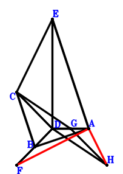
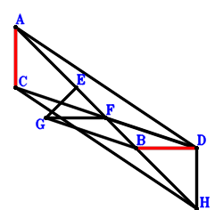
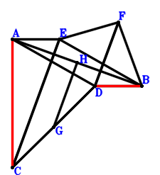
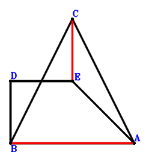
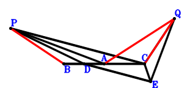
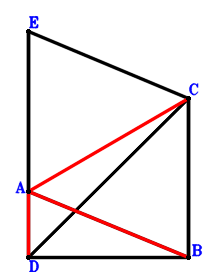
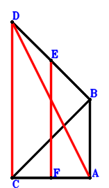

题目 0 3.1_例_1 如图，圆内接梯形FCBA，FA//CB且FA=2CB，E、D、A共线且EA=3ED. 求证：FA⊥EC.
\(\because \) FA//CB且FA=2CB \(\therefore \small\overrightarrow{DB}=\dfrac{\small\overrightarrow{DA}}{2} + \small\overrightarrow{DC} - \dfrac{\small\overrightarrow{DF}}{2}\).\(\because \) E、D、A共线且EA=3ED \(\therefore \small\overrightarrow{DE}=- \dfrac{\small\overrightarrow{DA}}{2}\).\(\because \) 圆内接四边形FCBA，FC交BA于D \( \therefore- \small\overrightarrow{DA} \cdot \small\overrightarrow{DB} + \small\overrightarrow{DC} \cdot \small\overrightarrow{DF}=- \small\overrightarrow{DA} \cdot \left(\dfrac{\small\overrightarrow{DA}}{2} + \small\overrightarrow{DC} - \dfrac{\small\overrightarrow{DF}}{2}\right) + \small\overrightarrow{DC} \cdot \small\overrightarrow{DF}=- \dfrac{\small\overrightarrow{DA}^{2}}{2} - \small\overrightarrow{DA} \cdot \small\overrightarrow{DC} + \dfrac{\small\overrightarrow{DA} \cdot \small\overrightarrow{DF}}{2} + \small\overrightarrow{DC} \cdot \small\overrightarrow{DF}=0.\)综上可得 \(\small\overrightarrow{EC} \cdot \small\overrightarrow{FA}=\left(\small\overrightarrow{DA} - \small\overrightarrow{DF}\right) \cdot \left(\small\overrightarrow{DC} - \small\overrightarrow{DE}\right)=\left(\dfrac{\small\overrightarrow{DA}}{2} + \small\overrightarrow{DC}\right) \cdot \left(\small\overrightarrow{DA} - \small\overrightarrow{DF}\right)=\dfrac{\small\overrightarrow{DA}^{2}}{2} + \small\overrightarrow{DA} \cdot \small\overrightarrow{DC} - \dfrac{\small\overrightarrow{DA} \cdot \small\overrightarrow{DF}}{2} - \small\overrightarrow{DC} \cdot \small\overrightarrow{DF}=0.\) 即FA⊥EC.
题目 1 3.1_例_1 如图，梯形CDAE中，DA//CE且DA=2CE，B、D、A共线且BA=3BD，G是FD的中点，CD⊥FD，FA⊥CB. 求证：DA⊥EG.
\(\because \) B、D、A共线且BA=3BD \(\therefore \small\overrightarrow{DB}=- \dfrac{\small\overrightarrow{DA}}{2}\).\(\because \) DA//CE且DA=2CE \(\therefore \small\overrightarrow{DE}=\dfrac{\small\overrightarrow{DA}}{2} + \small\overrightarrow{DC}\).\(\because \) G是FD的中点 \(\therefore \small\overrightarrow{DG}=\dfrac{\small\overrightarrow{DF}}{2}\).\(\because \) CD⊥FD \(\therefore \small\overrightarrow{DC} \cdot \small\overrightarrow{DF}=0\) . . . . . . \(①\)\(\because \) FA⊥CB \(\therefore \small\overrightarrow{BC} \cdot \small\overrightarrow{FA}=\left(\small\overrightarrow{DA} - \small\overrightarrow{DF}\right) \cdot \left(- \small\overrightarrow{DB} + \small\overrightarrow{DC}\right)=\left(\dfrac{\small\overrightarrow{DA}}{2} + \small\overrightarrow{DC}\right) \cdot \left(\small\overrightarrow{DA} - \small\overrightarrow{DF}\right)=\dfrac{\small\overrightarrow{DA}^{2}}{2} + \small\overrightarrow{DA} \cdot \small\overrightarrow{DC} - \dfrac{\small\overrightarrow{DA} \cdot \small\overrightarrow{DF}}{2} - \small\overrightarrow{DC} \cdot \small\overrightarrow{DF}=0\) . . . . . . \(②\)综上可得 \(\small\overrightarrow{DA} \cdot \small\overrightarrow{EG}=\small\overrightarrow{DA} \cdot \left(- \small\overrightarrow{DE} + \small\overrightarrow{DG}\right)=\small\overrightarrow{DA} \cdot \left(- \dfrac{\small\overrightarrow{DA}}{2} - \small\overrightarrow{DC} + \dfrac{\small\overrightarrow{DF}}{2}\right)=- \dfrac{\small\overrightarrow{DA}^{2}}{2} - \small\overrightarrow{DA} \cdot \small\overrightarrow{DC} + \dfrac{\small\overrightarrow{DA} \cdot \small\overrightarrow{DF}}{2}=-①-②=0.\) 即DA⊥EG.
题目 2 3.1_例_1 如图，梯形CDAG中，DA//CG且DA=2CG，D、B、A共线且BA=3DB，B是CE的中点，H是DF的中点，DC⊥DF，EA⊥AF. 求证：DA⊥GH.
\(\because \) D、B、A共线且BA=3DB \(\therefore \small\overrightarrow{DB}=\dfrac{\small\overrightarrow{DA}}{4}\).\(\because \) B是CE的中点 \(\therefore \small\overrightarrow{DE}=2 \small\overrightarrow{DB} - \small\overrightarrow{DC}=\dfrac{\small\overrightarrow{DA}}{2} - \small\overrightarrow{DC}\).\(\because \) DA//CG且DA=2CG \(\therefore \small\overrightarrow{DG}=\dfrac{\small\overrightarrow{DA}}{2} + \small\overrightarrow{DC}\).\(\because \) H是DF的中点 \(\therefore \small\overrightarrow{DH}=\dfrac{\small\overrightarrow{DF}}{2}\).\(\because \) DC⊥DF \(\therefore \small\overrightarrow{DC} \cdot \small\overrightarrow{DF}=0\) . . . . . . \(①\)\(\because \) EA⊥AF \(\therefore \small\overrightarrow{EA} \cdot \small\overrightarrow{FA}=\left(\small\overrightarrow{DA} - \small\overrightarrow{DE}\right) \cdot \left(\small\overrightarrow{DA} - \small\overrightarrow{DF}\right)=\left(\dfrac{\small\overrightarrow{DA}}{2} + \small\overrightarrow{DC}\right) \cdot \left(\small\overrightarrow{DA} - \small\overrightarrow{DF}\right)=\dfrac{\small\overrightarrow{DA}^{2}}{2} + \small\overrightarrow{DA} \cdot \small\overrightarrow{DC} - \dfrac{\small\overrightarrow{DA} \cdot \small\overrightarrow{DF}}{2} - \small\overrightarrow{DC} \cdot \small\overrightarrow{DF}=0\) . . . . . . \(②\)综上可得 \(\small\overrightarrow{DA} \cdot \small\overrightarrow{GH}=\small\overrightarrow{DA} \cdot \left(- \small\overrightarrow{DG} + \small\overrightarrow{DH}\right)=\small\overrightarrow{DA} \cdot \left(- \dfrac{\small\overrightarrow{DA}}{2} - \small\overrightarrow{DC} + \dfrac{\small\overrightarrow{DF}}{2}\right)=- \dfrac{\small\overrightarrow{DA}^{2}}{2} - \small\overrightarrow{DA} \cdot \small\overrightarrow{DC} + \dfrac{\small\overrightarrow{DA} \cdot \small\overrightarrow{DF}}{2}=-①-②=0.\) 即DA⊥GH.
题目 3 3.1_例_1 如图，平行四边形BDAF，E、G分别是BD、DA的中点，H是IG、CA的中点，CD⊥FD，DA⊥EC. 求证：ID⊥FA.
\(\because \) 平行四边形BDAF \(\therefore \small\overrightarrow{DB}=- \small\overrightarrow{DA} + \small\overrightarrow{DF}\).\(\because \) E是BD的中点 \(\therefore \small\overrightarrow{DE}=\dfrac{\small\overrightarrow{DB}}{2}=- \dfrac{\small\overrightarrow{DA}}{2} + \dfrac{\small\overrightarrow{DF}}{2}\).\(\because \) G是DA的中点 \(\therefore \small\overrightarrow{DG}=\dfrac{\small\overrightarrow{DA}}{2}\).\(\because \) H是CA的中点 \(\therefore \small\overrightarrow{DH}=\dfrac{\small\overrightarrow{DA}}{2} + \dfrac{\small\overrightarrow{DC}}{2}\).\(\because \) H是IG的中点 \(\therefore \small\overrightarrow{DI}=\small\overrightarrow{DA} + \small\overrightarrow{DC} - \small\overrightarrow{DG}=\dfrac{\small\overrightarrow{DA}}{2} + \small\overrightarrow{DC}\).\(\because \) CD⊥FD \(\therefore \small\overrightarrow{DC} \cdot \small\overrightarrow{DF}=0\) . . . . . . \(①\)\(\because \) DA⊥EC \(\therefore \small\overrightarrow{CE} \cdot \small\overrightarrow{DA}=\small\overrightarrow{DA} \cdot \left(- \small\overrightarrow{DC} + \small\overrightarrow{DE}\right)=\small\overrightarrow{DA} \cdot \left(- \dfrac{\small\overrightarrow{DA}}{2} - \small\overrightarrow{DC} + \dfrac{\small\overrightarrow{DF}}{2}\right)=- \dfrac{\small\overrightarrow{DA}^{2}}{2} - \small\overrightarrow{DA} \cdot \small\overrightarrow{DC} + \dfrac{\small\overrightarrow{DA} \cdot \small\overrightarrow{DF}}{2}=0\) . . . . . . \(②\)综上可得 \(\small\overrightarrow{DI} \cdot \small\overrightarrow{FA}=\small\overrightarrow{DI} \cdot \left(\small\overrightarrow{DA} - \small\overrightarrow{DF}\right)=\left(\dfrac{\small\overrightarrow{DA}}{2} + \small\overrightarrow{DC}\right) \cdot \left(\small\overrightarrow{DA} - \small\overrightarrow{DF}\right)=\dfrac{\small\overrightarrow{DA}^{2}}{2} + \small\overrightarrow{DA} \cdot \small\overrightarrow{DC} - \dfrac{\small\overrightarrow{DA} \cdot \small\overrightarrow{DF}}{2} - \small\overrightarrow{DC} \cdot \small\overrightarrow{DF}=-①-②=0.\) 即ID⊥FA.
题目 4 3.1_例_1 如图，梯形BCFA中，FA//CB且FA=2CB，梯形CDEA中，AE//CD且AE=2CD，G是DE的中点，CD⊥FD，DA⊥BD. 求证：AG⊥FA.
\(\because \) FA//CB且FA=2CB \(\therefore \small\overrightarrow{DB}=\dfrac{\small\overrightarrow{DA}}{2} + \small\overrightarrow{DC} - \dfrac{\small\overrightarrow{DF}}{2}\).\(\because \) AE//CD且AE=2CD \(\therefore \small\overrightarrow{DE}=\small\overrightarrow{DA} - 2 \small\overrightarrow{DC}\).\(\because \) G是DE的中点 \(\therefore \small\overrightarrow{DG}=\dfrac{\small\overrightarrow{DE}}{2}=\dfrac{\small\overrightarrow{DA}}{2} - \small\overrightarrow{DC}\).\(\because \) CD⊥FD \(\therefore \small\overrightarrow{DC} \cdot \small\overrightarrow{DF}=0\) . . . . . . \(①\)\(\because \) DA⊥BD \(\therefore - \small\overrightarrow{DA} \cdot \small\overrightarrow{DB}=- \small\overrightarrow{DA} \cdot \left(\dfrac{\small\overrightarrow{DA}}{2} + \small\overrightarrow{DC} - \dfrac{\small\overrightarrow{DF}}{2}\right)=- \dfrac{\small\overrightarrow{DA}^{2}}{2} - \small\overrightarrow{DA} \cdot \small\overrightarrow{DC} + \dfrac{\small\overrightarrow{DA} \cdot \small\overrightarrow{DF}}{2}=0\) . . . . . . \(②\)综上可得 \(\small\overrightarrow{FA} \cdot \small\overrightarrow{GA}=\left(\small\overrightarrow{DA} - \small\overrightarrow{DF}\right) \cdot \left(\small\overrightarrow{DA} - \small\overrightarrow{DG}\right)=\left(\dfrac{\small\overrightarrow{DA}}{2} + \small\overrightarrow{DC}\right) \cdot \left(\small\overrightarrow{DA} - \small\overrightarrow{DF}\right)=\dfrac{\small\overrightarrow{DA}^{2}}{2} + \small\overrightarrow{DA} \cdot \small\overrightarrow{DC} - \dfrac{\small\overrightarrow{DA} \cdot \small\overrightarrow{DF}}{2} - \small\overrightarrow{DC} \cdot \small\overrightarrow{DF}=-①-②=0.\) 即AG⊥FA.
题目 5 3.1_例_1 如图，平行四边形DBFA，梯形CDAG中，DA//CG且DA=2CG，E是BD的中点，CD⊥FD，DA⊥CE. 求证：GD⊥FA.
\(\because \) 平行四边形DBFA \(\therefore \small\overrightarrow{DB}=- \small\overrightarrow{DA} + \small\overrightarrow{DF}\).\(\because \) E是BD的中点 \(\therefore \small\overrightarrow{DE}=\dfrac{\small\overrightarrow{DB}}{2}=- \dfrac{\small\overrightarrow{DA}}{2} + \dfrac{\small\overrightarrow{DF}}{2}\).\(\because \) DA//CG且DA=2CG \(\therefore \small\overrightarrow{DG}=\dfrac{\small\overrightarrow{DA}}{2} + \small\overrightarrow{DC}\).\(\because \) CD⊥FD \(\therefore \small\overrightarrow{DC} \cdot \small\overrightarrow{DF}=0\) . . . . . . \(①\)\(\because \) DA⊥CE \(\therefore \small\overrightarrow{CE} \cdot \small\overrightarrow{DA}=\small\overrightarrow{DA} \cdot \left(- \small\overrightarrow{DC} + \small\overrightarrow{DE}\right)=\small\overrightarrow{DA} \cdot \left(- \dfrac{\small\overrightarrow{DA}}{2} - \small\overrightarrow{DC} + \dfrac{\small\overrightarrow{DF}}{2}\right)=- \dfrac{\small\overrightarrow{DA}^{2}}{2} - \small\overrightarrow{DA} \cdot \small\overrightarrow{DC} + \dfrac{\small\overrightarrow{DA} \cdot \small\overrightarrow{DF}}{2}=0\) . . . . . . \(②\)综上可得 \(\small\overrightarrow{DG} \cdot \small\overrightarrow{FA}=\small\overrightarrow{DG} \cdot \left(\small\overrightarrow{DA} - \small\overrightarrow{DF}\right)=\left(\dfrac{\small\overrightarrow{DA}}{2} + \small\overrightarrow{DC}\right) \cdot \left(\small\overrightarrow{DA} - \small\overrightarrow{DF}\right)=\dfrac{\small\overrightarrow{DA}^{2}}{2} + \small\overrightarrow{DA} \cdot \small\overrightarrow{DC} - \dfrac{\small\overrightarrow{DA} \cdot \small\overrightarrow{DF}}{2} - \small\overrightarrow{DC} \cdot \small\overrightarrow{DF}=-①-②=0.\) 即GD⊥FA.
题目 6 3.1_例_1 如图，平行四边形CDAH、DBFA，E、G分别BD、DA的中点，CD⊥FD，DA⊥CE. 求证：HG⊥FA.
\(\because \) 平行四边形DBFA \(\therefore \small\overrightarrow{DB}=- \small\overrightarrow{DA} + \small\overrightarrow{DF}\).\(\because \) E是BD的中点 \(\therefore \small\overrightarrow{DE}=\dfrac{\small\overrightarrow{DB}}{2}=- \dfrac{\small\overrightarrow{DA}}{2} + \dfrac{\small\overrightarrow{DF}}{2}\).\(\because \) G是DA的中点 \(\therefore \small\overrightarrow{DG}=\dfrac{\small\overrightarrow{DA}}{2}\).\(\because \) 平行四边形CDAH \(\therefore \small\overrightarrow{DH}=\small\overrightarrow{DA} + \small\overrightarrow{DC}\).\(\because \) CD⊥FD \(\therefore \small\overrightarrow{DC} \cdot \small\overrightarrow{DF}=0\) . . . . . . \(①\)\(\because \) DA⊥CE \(\therefore \small\overrightarrow{CE} \cdot \small\overrightarrow{DA}=\small\overrightarrow{DA} \cdot \left(- \small\overrightarrow{DC} + \small\overrightarrow{DE}\right)=\small\overrightarrow{DA} \cdot \left(- \dfrac{\small\overrightarrow{DA}}{2} - \small\overrightarrow{DC} + \dfrac{\small\overrightarrow{DF}}{2}\right)=- \dfrac{\small\overrightarrow{DA}^{2}}{2} - \small\overrightarrow{DA} \cdot \small\overrightarrow{DC} + \dfrac{\small\overrightarrow{DA} \cdot \small\overrightarrow{DF}}{2}=0\) . . . . . . \(②\)综上可得 \(\small\overrightarrow{FA} \cdot \small\overrightarrow{GH}=\left(\small\overrightarrow{DA} - \small\overrightarrow{DF}\right) \cdot \left(- \small\overrightarrow{DG} + \small\overrightarrow{DH}\right)=\left(\dfrac{\small\overrightarrow{DA}}{2} + \small\overrightarrow{DC}\right) \cdot \left(\small\overrightarrow{DA} - \small\overrightarrow{DF}\right)=\dfrac{\small\overrightarrow{DA}^{2}}{2} + \small\overrightarrow{DA} \cdot \small\overrightarrow{DC} - \dfrac{\small\overrightarrow{DA} \cdot \small\overrightarrow{DF}}{2} - \small\overrightarrow{DC} \cdot \small\overrightarrow{DF}=-①-②=0.\) 即HG⊥FA.
题目 7 3.1_例_1 如图，圆内接梯形FCBA，FA//CB且FA=2CB，FC交BA于D，D、E、A共线且EA=3DE，E是CG的中点. 求证：GA⊥FA.
\(\because \) FA//CB且FA=2CB \(\therefore \small\overrightarrow{DB}=\dfrac{\small\overrightarrow{DA}}{2} + \small\overrightarrow{DC} - \dfrac{\small\overrightarrow{DF}}{2}\).\(\because \) D、E、A共线且EA=3DE \(\therefore \small\overrightarrow{DE}=\dfrac{\small\overrightarrow{DA}}{4}\).\(\because \) E是CG的中点 \(\therefore \small\overrightarrow{DG}=- \small\overrightarrow{DC} + 2 \small\overrightarrow{DE}=\dfrac{\small\overrightarrow{DA}}{2} - \small\overrightarrow{DC}\).\(\because \) 圆内接四边形FCBA，FC交BA于D \( \therefore- \small\overrightarrow{DA} \cdot \small\overrightarrow{DB} + \small\overrightarrow{DC} \cdot \small\overrightarrow{DF}=- \small\overrightarrow{DA} \cdot \left(\dfrac{\small\overrightarrow{DA}}{2} + \small\overrightarrow{DC} - \dfrac{\small\overrightarrow{DF}}{2}\right) + \small\overrightarrow{DC} \cdot \small\overrightarrow{DF}=- \dfrac{\small\overrightarrow{DA}^{2}}{2} - \small\overrightarrow{DA} \cdot \small\overrightarrow{DC} + \dfrac{\small\overrightarrow{DA} \cdot \small\overrightarrow{DF}}{2} + \small\overrightarrow{DC} \cdot \small\overrightarrow{DF}=0.\)综上可得 \(\small\overrightarrow{FA} \cdot \small\overrightarrow{GA}=\left(\small\overrightarrow{DA} - \small\overrightarrow{DF}\right) \cdot \left(\small\overrightarrow{DA} - \small\overrightarrow{DG}\right)=\left(\dfrac{\small\overrightarrow{DA}}{2} + \small\overrightarrow{DC}\right) \cdot \left(\small\overrightarrow{DA} - \small\overrightarrow{DF}\right)=\dfrac{\small\overrightarrow{DA}^{2}}{2} + \small\overrightarrow{DA} \cdot \small\overrightarrow{DC} - \dfrac{\small\overrightarrow{DA} \cdot \small\overrightarrow{DF}}{2} - \small\overrightarrow{DC} \cdot \small\overrightarrow{DF}=0.\) 即GA⊥FA.
题目 8 3.1_例_1 如图，平行四边形DGFA，梯形CDBA中，AB//CD且AB=2CD，H是GD的中点，E是DB的中点，CD⊥FD，AE⊥FA. 求证：DA⊥CH.
\(\because \) AB//CD且AB=2CD \(\therefore \small\overrightarrow{DB}=\small\overrightarrow{DA} - 2 \small\overrightarrow{DC}\).\(\because \) E是DB的中点 \(\therefore \small\overrightarrow{DE}=\dfrac{\small\overrightarrow{DB}}{2}=\dfrac{\small\overrightarrow{DA}}{2} - \small\overrightarrow{DC}\).\(\because \) 平行四边形DGFA \(\therefore \small\overrightarrow{DG}=- \small\overrightarrow{DA} + \small\overrightarrow{DF}\).\(\because \) H是GD的中点 \(\therefore \small\overrightarrow{DH}=\dfrac{\small\overrightarrow{DG}}{2}=- \dfrac{\small\overrightarrow{DA}}{2} + \dfrac{\small\overrightarrow{DF}}{2}\).\(\because \) CD⊥FD \(\therefore \small\overrightarrow{DC} \cdot \small\overrightarrow{DF}=0\) . . . . . . \(①\)\(\because \) AE⊥FA \(\therefore \small\overrightarrow{EA} \cdot \small\overrightarrow{FA}=\left(\small\overrightarrow{DA} - \small\overrightarrow{DE}\right) \cdot \left(\small\overrightarrow{DA} - \small\overrightarrow{DF}\right)=\left(\dfrac{\small\overrightarrow{DA}}{2} + \small\overrightarrow{DC}\right) \cdot \left(\small\overrightarrow{DA} - \small\overrightarrow{DF}\right)=\dfrac{\small\overrightarrow{DA}^{2}}{2} + \small\overrightarrow{DA} \cdot \small\overrightarrow{DC} - \dfrac{\small\overrightarrow{DA} \cdot \small\overrightarrow{DF}}{2} - \small\overrightarrow{DC} \cdot \small\overrightarrow{DF}=0\) . . . . . . \(②\)综上可得 \(\small\overrightarrow{CH} \cdot \small\overrightarrow{DA}=\small\overrightarrow{DA} \cdot \left(- \small\overrightarrow{DC} + \small\overrightarrow{DH}\right)=\small\overrightarrow{DA} \cdot \left(- \dfrac{\small\overrightarrow{DA}}{2} - \small\overrightarrow{DC} + \dfrac{\small\overrightarrow{DF}}{2}\right)=- \dfrac{\small\overrightarrow{DA}^{2}}{2} - \small\overrightarrow{DA} \cdot \small\overrightarrow{DC} + \dfrac{\small\overrightarrow{DA} \cdot \small\overrightarrow{DF}}{2}=-①-②=0.\) 即DA⊥CH.
题目 9 3.1_例_1 如图，梯形DEFA中，FA//ED且FA=2ED，B、D、A共线且BA=3BD，CD⊥FD，FA⊥CB. 求证：CE⊥DA.
\(\because \) B、D、A共线且BA=3BD \(\therefore \small\overrightarrow{DB}=- \dfrac{\small\overrightarrow{DA}}{2}\).\(\because \) FA//ED且FA=2ED \(\therefore \small\overrightarrow{DE}=- \dfrac{\small\overrightarrow{DA}}{2} + \dfrac{\small\overrightarrow{DF}}{2}\).\(\because \) CD⊥FD \(\therefore \small\overrightarrow{DC} \cdot \small\overrightarrow{DF}=0\) . . . . . . \(①\)\(\because \) FA⊥CB \(\therefore \small\overrightarrow{BC} \cdot \small\overrightarrow{FA}=\left(\small\overrightarrow{DA} - \small\overrightarrow{DF}\right) \cdot \left(- \small\overrightarrow{DB} + \small\overrightarrow{DC}\right)=\left(\dfrac{\small\overrightarrow{DA}}{2} + \small\overrightarrow{DC}\right) \cdot \left(\small\overrightarrow{DA} - \small\overrightarrow{DF}\right)=\dfrac{\small\overrightarrow{DA}^{2}}{2} + \small\overrightarrow{DA} \cdot \small\overrightarrow{DC} - \dfrac{\small\overrightarrow{DA} \cdot \small\overrightarrow{DF}}{2} - \small\overrightarrow{DC} \cdot \small\overrightarrow{DF}=0\) . . . . . . \(②\)综上可得 \(\small\overrightarrow{CE} \cdot \small\overrightarrow{DA}=\small\overrightarrow{DA} \cdot \left(- \small\overrightarrow{DC} + \small\overrightarrow{DE}\right)=\small\overrightarrow{DA} \cdot \left(- \dfrac{\small\overrightarrow{DA}}{2} - \small\overrightarrow{DC} + \dfrac{\small\overrightarrow{DF}}{2}\right)=- \dfrac{\small\overrightarrow{DA}^{2}}{2} - \small\overrightarrow{DA} \cdot \small\overrightarrow{DC} + \dfrac{\small\overrightarrow{DA} \cdot \small\overrightarrow{DF}}{2}=-①-②=0.\) 即CE⊥DA.
题目 10 3.1_例_1 如图，梯形GCDA中，GA//CD且GA=2CD，D、B、A共线且BA=3DB，B是CE的中点，CD⊥DF，EA⊥FA. 求证：GF⊥DA.
\(\because \) D、B、A共线且BA=3DB \(\therefore \small\overrightarrow{DB}=\dfrac{\small\overrightarrow{DA}}{4}\).\(\because \) B是CE的中点 \(\therefore \small\overrightarrow{DE}=2 \small\overrightarrow{DB} - \small\overrightarrow{DC}=\dfrac{\small\overrightarrow{DA}}{2} - \small\overrightarrow{DC}\).\(\because \) GA//CD且GA=2CD \(\therefore \small\overrightarrow{DG}=\small\overrightarrow{DA} + 2 \small\overrightarrow{DC}\).\(\because \) CD⊥DF \(\therefore \small\overrightarrow{DC} \cdot \small\overrightarrow{DF}=0\) . . . . . . \(①\)\(\because \) EA⊥FA \(\therefore \small\overrightarrow{EA} \cdot \small\overrightarrow{FA}=\left(\small\overrightarrow{DA} - \small\overrightarrow{DE}\right) \cdot \left(\small\overrightarrow{DA} - \small\overrightarrow{DF}\right)=\left(\dfrac{\small\overrightarrow{DA}}{2} + \small\overrightarrow{DC}\right) \cdot \left(\small\overrightarrow{DA} - \small\overrightarrow{DF}\right)=\dfrac{\small\overrightarrow{DA}^{2}}{2} + \small\overrightarrow{DA} \cdot \small\overrightarrow{DC} - \dfrac{\small\overrightarrow{DA} \cdot \small\overrightarrow{DF}}{2} - \small\overrightarrow{DC} \cdot \small\overrightarrow{DF}=0\) . . . . . . \(②\)综上可得 \(\small\overrightarrow{DA} \cdot \small\overrightarrow{GF}=\small\overrightarrow{DA} \cdot \left(\small\overrightarrow{DF} - \small\overrightarrow{DG}\right)=\small\overrightarrow{DA} \cdot \left(- \small\overrightarrow{DA} - 2 \small\overrightarrow{DC} + \small\overrightarrow{DF}\right)=- \small\overrightarrow{DA}^{2} - 2 \small\overrightarrow{DA} \cdot \small\overrightarrow{DC} + \small\overrightarrow{DA} \cdot \small\overrightarrow{DF}=-2\cdot①-2\cdot②=0.\) 即GF⊥DA.
题目 11 3.1_例_1 如图，梯形CDAB中，DA//CB且DA=2CB，梯形DEFA中，FA//ED且FA=2ED，BD⊥FA，CD⊥FD. 求证：CE⊥DA.
\(\because \) DA//CB且DA=2CB \(\therefore \small\overrightarrow{DB}=\dfrac{\small\overrightarrow{DA}}{2} + \small\overrightarrow{DC}\).\(\because \) FA//ED且FA=2ED \(\therefore \small\overrightarrow{DE}=- \dfrac{\small\overrightarrow{DA}}{2} + \dfrac{\small\overrightarrow{DF}}{2}\).\(\because \) CD⊥FD \(\therefore \small\overrightarrow{DC} \cdot \small\overrightarrow{DF}=0\) . . . . . . \(①\)\(\because \) BD⊥FA \(\therefore \small\overrightarrow{DB} \cdot \small\overrightarrow{FA}=\small\overrightarrow{DB} \cdot \left(\small\overrightarrow{DA} - \small\overrightarrow{DF}\right)=\left(\dfrac{\small\overrightarrow{DA}}{2} + \small\overrightarrow{DC}\right) \cdot \left(\small\overrightarrow{DA} - \small\overrightarrow{DF}\right)=\dfrac{\small\overrightarrow{DA}^{2}}{2} + \small\overrightarrow{DA} \cdot \small\overrightarrow{DC} - \dfrac{\small\overrightarrow{DA} \cdot \small\overrightarrow{DF}}{2} - \small\overrightarrow{DC} \cdot \small\overrightarrow{DF}=0\) . . . . . . \(②\)综上可得 \(\small\overrightarrow{CE} \cdot \small\overrightarrow{DA}=\small\overrightarrow{DA} \cdot \left(- \small\overrightarrow{DC} + \small\overrightarrow{DE}\right)=\small\overrightarrow{DA} \cdot \left(- \dfrac{\small\overrightarrow{DA}}{2} - \small\overrightarrow{DC} + \dfrac{\small\overrightarrow{DF}}{2}\right)=- \dfrac{\small\overrightarrow{DA}^{2}}{2} - \small\overrightarrow{DA} \cdot \small\overrightarrow{DC} + \dfrac{\small\overrightarrow{DA} \cdot \small\overrightarrow{DF}}{2}=-①-②=0.\) 即CE⊥DA.
题目 12 3.1_例_1 如图，平行四边形CEAG，梯形CFBD中，FB//CD且FB=2CD，E是DA的中点，CD⊥FD，AB⊥DA. 求证：GD⊥FA.
\(\because \) FB//CD且FB=2CD \(\therefore \small\overrightarrow{DB}=- 2 \small\overrightarrow{DC} + \small\overrightarrow{DF}\).\(\because \) E是DA的中点 \(\therefore \small\overrightarrow{DE}=\dfrac{\small\overrightarrow{DA}}{2}\).\(\because \) 平行四边形CEAG \(\therefore \small\overrightarrow{DG}=\small\overrightarrow{DA} + \small\overrightarrow{DC} - \small\overrightarrow{DE}=\dfrac{\small\overrightarrow{DA}}{2} + \small\overrightarrow{DC}\).\(\because \) CD⊥FD \(\therefore \small\overrightarrow{DC} \cdot \small\overrightarrow{DF}=0\) . . . . . . \(①\)\(\because \) AB⊥DA \(\therefore \small\overrightarrow{AB} \cdot \small\overrightarrow{DA}=\small\overrightarrow{DA} \cdot \left(- \small\overrightarrow{DA} + \small\overrightarrow{DB}\right)=\small\overrightarrow{DA} \cdot \left(- \small\overrightarrow{DA} - 2 \small\overrightarrow{DC} + \small\overrightarrow{DF}\right)=- \small\overrightarrow{DA}^{2} - 2 \small\overrightarrow{DA} \cdot \small\overrightarrow{DC} + \small\overrightarrow{DA} \cdot \small\overrightarrow{DF}=0\) . . . . . . \(②\)综上可得 \(\small\overrightarrow{DG} \cdot \small\overrightarrow{FA}=\small\overrightarrow{DG} \cdot \left(\small\overrightarrow{DA} - \small\overrightarrow{DF}\right)=\left(\dfrac{\small\overrightarrow{DA}}{2} + \small\overrightarrow{DC}\right) \cdot \left(\small\overrightarrow{DA} - \small\overrightarrow{DF}\right)=\dfrac{\small\overrightarrow{DA}^{2}}{2} + \small\overrightarrow{DA} \cdot \small\overrightarrow{DC} - \dfrac{\small\overrightarrow{DA} \cdot \small\overrightarrow{DF}}{2} - \small\overrightarrow{DC} \cdot \small\overrightarrow{DF}=-①-1/2\cdot②=0.\) 即GD⊥FA.
题目 13 3.1_例_1 如图，梯形GCDA中，GA//CD且GA=2CD，梯形ECBA中，EA//CB且EA=2CB，B是FD的中点，CD⊥FD，ED⊥DA. 求证：GD⊥FA.
\(\because \) B是FD的中点 \(\therefore \small\overrightarrow{DB}=\dfrac{\small\overrightarrow{DF}}{2}\).\(\because \) EA//CB且EA=2CB \(\therefore \small\overrightarrow{DE}=\small\overrightarrow{DA} - 2 \small\overrightarrow{DB} + 2 \small\overrightarrow{DC}=\small\overrightarrow{DA} + 2 \small\overrightarrow{DC} - \small\overrightarrow{DF}\).\(\because \) GA//CD且GA=2CD \(\therefore \small\overrightarrow{DG}=\small\overrightarrow{DA} + 2 \small\overrightarrow{DC}\).\(\because \) CD⊥FD \(\therefore \small\overrightarrow{DC} \cdot \small\overrightarrow{DF}=0\) . . . . . . \(①\)\(\because \) ED⊥DA \(\therefore - \small\overrightarrow{DA} \cdot \small\overrightarrow{DE}=- \small\overrightarrow{DA} \cdot \left(\small\overrightarrow{DA} + 2 \small\overrightarrow{DC} - \small\overrightarrow{DF}\right)=- \small\overrightarrow{DA}^{2} - 2 \small\overrightarrow{DA} \cdot \small\overrightarrow{DC} + \small\overrightarrow{DA} \cdot \small\overrightarrow{DF}=0\) . . . . . . \(②\)综上可得 \(\small\overrightarrow{DG} \cdot \small\overrightarrow{FA}=\small\overrightarrow{DG} \cdot \left(\small\overrightarrow{DA} - \small\overrightarrow{DF}\right)=\left(\small\overrightarrow{DA} + 2 \small\overrightarrow{DC}\right) \cdot \left(\small\overrightarrow{DA} - \small\overrightarrow{DF}\right)=\small\overrightarrow{DA}^{2} + 2 \small\overrightarrow{DA} \cdot \small\overrightarrow{DC} - \small\overrightarrow{DA} \cdot \small\overrightarrow{DF} - 2 \small\overrightarrow{DC} \cdot \small\overrightarrow{DF}=-2\cdot①-②=0.\) 即GD⊥FA.
题目 14 3.1_例_1 如图，梯形DGEA中，DA//GE且DA=2GE，B、D、A共线且BA=3BD，E是FD的中点，CD⊥FD，FA⊥CB. 求证：CG⊥DA.
\(\because \) B、D、A共线且BA=3BD \(\therefore \small\overrightarrow{DB}=- \dfrac{\small\overrightarrow{DA}}{2}\).\(\because \) E是FD的中点 \(\therefore \small\overrightarrow{DE}=\dfrac{\small\overrightarrow{DF}}{2}\).\(\because \) DA//GE且DA=2GE \(\therefore \small\overrightarrow{DG}=- \dfrac{\small\overrightarrow{DA}}{2} + \small\overrightarrow{DE}=- \dfrac{\small\overrightarrow{DA}}{2} + \dfrac{\small\overrightarrow{DF}}{2}\).\(\because \) CD⊥FD \(\therefore \small\overrightarrow{DC} \cdot \small\overrightarrow{DF}=0\) . . . . . . \(①\)\(\because \) FA⊥CB \(\therefore \small\overrightarrow{BC} \cdot \small\overrightarrow{FA}=\left(\small\overrightarrow{DA} - \small\overrightarrow{DF}\right) \cdot \left(- \small\overrightarrow{DB} + \small\overrightarrow{DC}\right)=\left(\dfrac{\small\overrightarrow{DA}}{2} + \small\overrightarrow{DC}\right) \cdot \left(\small\overrightarrow{DA} - \small\overrightarrow{DF}\right)=\dfrac{\small\overrightarrow{DA}^{2}}{2} + \small\overrightarrow{DA} \cdot \small\overrightarrow{DC} - \dfrac{\small\overrightarrow{DA} \cdot \small\overrightarrow{DF}}{2} - \small\overrightarrow{DC} \cdot \small\overrightarrow{DF}=0\) . . . . . . \(②\)综上可得 \(\small\overrightarrow{CG} \cdot \small\overrightarrow{DA}=\small\overrightarrow{DA} \cdot \left(- \small\overrightarrow{DC} + \small\overrightarrow{DG}\right)=\small\overrightarrow{DA} \cdot \left(- \dfrac{\small\overrightarrow{DA}}{2} - \small\overrightarrow{DC} + \dfrac{\small\overrightarrow{DF}}{2}\right)=- \dfrac{\small\overrightarrow{DA}^{2}}{2} - \small\overrightarrow{DA} \cdot \small\overrightarrow{DC} + \dfrac{\small\overrightarrow{DA} \cdot \small\overrightarrow{DF}}{2}=-①-②=0.\) 即CG⊥DA.
题目 15 3.1_例_1 如图，梯形HDAG中，DA//HG且DA=2HG，D、B、A共线且BA=3DB，E是CA的中点，G是FD的中点，CD⊥FD，FA⊥EB. 求证：HC⊥DA.
\(\because \) D、B、A共线且BA=3DB \(\therefore \small\overrightarrow{DB}=\dfrac{\small\overrightarrow{DA}}{4}\).\(\because \) E是CA的中点 \(\therefore \small\overrightarrow{DE}=\dfrac{\small\overrightarrow{DA}}{2} + \dfrac{\small\overrightarrow{DC}}{2}\).\(\because \) G是FD的中点 \(\therefore \small\overrightarrow{DG}=\dfrac{\small\overrightarrow{DF}}{2}\).\(\because \) DA//HG且DA=2HG \(\therefore \small\overrightarrow{DH}=- \dfrac{\small\overrightarrow{DA}}{2} + \small\overrightarrow{DG}=- \dfrac{\small\overrightarrow{DA}}{2} + \dfrac{\small\overrightarrow{DF}}{2}\).\(\because \) CD⊥FD \(\therefore \small\overrightarrow{DC} \cdot \small\overrightarrow{DF}=0\) . . . . . . \(①\)\(\because \) FA⊥EB \(\therefore \small\overrightarrow{BE} \cdot \small\overrightarrow{FA}=\left(\small\overrightarrow{DA} - \small\overrightarrow{DF}\right) \cdot \left(- \small\overrightarrow{DB} + \small\overrightarrow{DE}\right)=\left(\dfrac{\small\overrightarrow{DA}}{4} + \dfrac{\small\overrightarrow{DC}}{2}\right) \cdot \left(\small\overrightarrow{DA} - \small\overrightarrow{DF}\right)=\dfrac{\small\overrightarrow{DA}^{2}}{4} + \dfrac{\small\overrightarrow{DA} \cdot \small\overrightarrow{DC}}{2} - \dfrac{\small\overrightarrow{DA} \cdot \small\overrightarrow{DF}}{4} - \dfrac{\small\overrightarrow{DC} \cdot \small\overrightarrow{DF}}{2}=0\) . . . . . . \(②\)综上可得 \(\small\overrightarrow{CH} \cdot \small\overrightarrow{DA}=\small\overrightarrow{DA} \cdot \left(- \small\overrightarrow{DC} + \small\overrightarrow{DH}\right)=\small\overrightarrow{DA} \cdot \left(- \dfrac{\small\overrightarrow{DA}}{2} - \small\overrightarrow{DC} + \dfrac{\small\overrightarrow{DF}}{2}\right)=- \dfrac{\small\overrightarrow{DA}^{2}}{2} - \small\overrightarrow{DA} \cdot \small\overrightarrow{DC} + \dfrac{\small\overrightarrow{DA} \cdot \small\overrightarrow{DF}}{2}=-①-2\cdot②=0.\) 即HC⊥DA.
题目 16 3.1_例_1 如图，平行四边形CDHG，梯形ECBA中，EA//CB且EA=2CB，G是DA的中点，B是FD的中点，CD⊥FD，ED⊥DA. 求证：AH⊥FA.

\(\because \) B是FD的中点 \(\therefore \small\overrightarrow{DB}=\dfrac{\small\overrightarrow{DF}}{2}\).\(\because \) EA//CB且EA=2CB \(\therefore \small\overrightarrow{DE}=\small\overrightarrow{DA} - 2 \small\overrightarrow{DB} + 2 \small\overrightarrow{DC}=\small\overrightarrow{DA} + 2 \small\overrightarrow{DC} - \small\overrightarrow{DF}\).\(\because \) G是DA的中点 \(\therefore \small\overrightarrow{DG}=\dfrac{\small\overrightarrow{DA}}{2}\).\(\because \) 平行四边形CDHG \(\therefore \small\overrightarrow{DH}=- \small\overrightarrow{DC} + \small\overrightarrow{DG}=\dfrac{\small\overrightarrow{DA}}{2} - \small\overrightarrow{DC}\).\(\because \) CD⊥FD \(\therefore \small\overrightarrow{DC} \cdot \small\overrightarrow{DF}=0\) . . . . . . \(①\)\(\because \) ED⊥DA \(\therefore - \small\overrightarrow{DA} \cdot \small\overrightarrow{DE}=- \small\overrightarrow{DA} \cdot \left(\small\overrightarrow{DA} + 2 \small\overrightarrow{DC} - \small\overrightarrow{DF}\right)=- \small\overrightarrow{DA}^{2} - 2 \small\overrightarrow{DA} \cdot \small\overrightarrow{DC} + \small\overrightarrow{DA} \cdot \small\overrightarrow{DF}=0\) . . . . . . \(②\)综上可得 \(\small\overrightarrow{FA} \cdot \small\overrightarrow{HA}=\left(\small\overrightarrow{DA} - \small\overrightarrow{DF}\right) \cdot \left(\small\overrightarrow{DA} - \small\overrightarrow{DH}\right)=\left(\dfrac{\small\overrightarrow{DA}}{2} + \small\overrightarrow{DC}\right) \cdot \left(\small\overrightarrow{DA} - \small\overrightarrow{DF}\right)=\dfrac{\small\overrightarrow{DA}^{2}}{2} + \small\overrightarrow{DA} \cdot \small\overrightarrow{DC} - \dfrac{\small\overrightarrow{DA} \cdot \small\overrightarrow{DF}}{2} - \small\overrightarrow{DC} \cdot \small\overrightarrow{DF}=-①-1/2\cdot②=0.\) 即AH⊥FA.
题目 17 3.1_例_1 如图，圆内接四边形FCBA，FC交BA于D，FA//CB且FA=2CB，EA//CD且EA=2CD. 求证：DE⊥FA.
\(\because \) FA//CB且FA=2CB \(\therefore \small\overrightarrow{DB}=\dfrac{\small\overrightarrow{DA}}{2} + \small\overrightarrow{DC} - \dfrac{\small\overrightarrow{DF}}{2}\).\(\because \) EA//CD且EA=2CD \(\therefore \small\overrightarrow{DE}=\small\overrightarrow{DA} + 2 \small\overrightarrow{DC}\).\(\because \) 圆内接四边形FCBA，FC交BA于D \( \therefore- \small\overrightarrow{DA} \cdot \small\overrightarrow{DB} + \small\overrightarrow{DC} \cdot \small\overrightarrow{DF}=- \small\overrightarrow{DA} \cdot \left(\dfrac{\small\overrightarrow{DA}}{2} + \small\overrightarrow{DC} - \dfrac{\small\overrightarrow{DF}}{2}\right) + \small\overrightarrow{DC} \cdot \small\overrightarrow{DF}=- \dfrac{\small\overrightarrow{DA}^{2}}{2} - \small\overrightarrow{DA} \cdot \small\overrightarrow{DC} + \dfrac{\small\overrightarrow{DA} \cdot \small\overrightarrow{DF}}{2} + \small\overrightarrow{DC} \cdot \small\overrightarrow{DF}=0.\)综上可得 \(\small\overrightarrow{DE} \cdot \small\overrightarrow{FA}=\small\overrightarrow{DE} \cdot \left(\small\overrightarrow{DA} - \small\overrightarrow{DF}\right)=\left(\small\overrightarrow{DA} + 2 \small\overrightarrow{DC}\right) \cdot \left(\small\overrightarrow{DA} - \small\overrightarrow{DF}\right)=\small\overrightarrow{DA}^{2} + 2 \small\overrightarrow{DA} \cdot \small\overrightarrow{DC} - \small\overrightarrow{DA} \cdot \small\overrightarrow{DF} - 2 \small\overrightarrow{DC} \cdot \small\overrightarrow{DF}=0.\) 即DE⊥FA.
题目 18 3.1_例_1 如图，圆内接四边形FCBA，FA//CB且FA=2CB，AE//CD且AE=2CD，FC交BA于D，G是DE的中点. 求证：GA⊥FA.
\(\because \) FA//CB且FA=2CB \(\therefore \small\overrightarrow{DB}=\dfrac{\small\overrightarrow{DA}}{2} + \small\overrightarrow{DC} - \dfrac{\small\overrightarrow{DF}}{2}\).\(\because \) AE//CD且AE=2CD \(\therefore \small\overrightarrow{DE}=\small\overrightarrow{DA} - 2 \small\overrightarrow{DC}\).\(\because \) G是DE的中点 \(\therefore \small\overrightarrow{DG}=\dfrac{\small\overrightarrow{DE}}{2}=\dfrac{\small\overrightarrow{DA}}{2} - \small\overrightarrow{DC}\).\(\because \) 圆内接四边形FCBA，FC交BA于D \( \therefore- \small\overrightarrow{DA} \cdot \small\overrightarrow{DB} + \small\overrightarrow{DC} \cdot \small\overrightarrow{DF}=- \small\overrightarrow{DA} \cdot \left(\dfrac{\small\overrightarrow{DA}}{2} + \small\overrightarrow{DC} - \dfrac{\small\overrightarrow{DF}}{2}\right) + \small\overrightarrow{DC} \cdot \small\overrightarrow{DF}=- \dfrac{\small\overrightarrow{DA}^{2}}{2} - \small\overrightarrow{DA} \cdot \small\overrightarrow{DC} + \dfrac{\small\overrightarrow{DA} \cdot \small\overrightarrow{DF}}{2} + \small\overrightarrow{DC} \cdot \small\overrightarrow{DF}=0.\)综上可得 \(\small\overrightarrow{FA} \cdot \small\overrightarrow{GA}=\left(\small\overrightarrow{DA} - \small\overrightarrow{DF}\right) \cdot \left(\small\overrightarrow{DA} - \small\overrightarrow{DG}\right)=\left(\dfrac{\small\overrightarrow{DA}}{2} + \small\overrightarrow{DC}\right) \cdot \left(\small\overrightarrow{DA} - \small\overrightarrow{DF}\right)=\dfrac{\small\overrightarrow{DA}^{2}}{2} + \small\overrightarrow{DA} \cdot \small\overrightarrow{DC} - \dfrac{\small\overrightarrow{DA} \cdot \small\overrightarrow{DF}}{2} - \small\overrightarrow{DC} \cdot \small\overrightarrow{DF}=0.\) 即GA⊥FA.
题目 19 3.1_例_2 如图，BA⊥AC，BP⊥QC，AC=CP. 求证：\(BQ^{2}=BA^{2} + QP^{2}\).
\(\because \) AC=CP \(\therefore \small\overrightarrow{AC}^{2} - \small\overrightarrow{PC}^{2}=\small\overrightarrow{AC}^{2} - \left(\small\overrightarrow{AC} - \small\overrightarrow{AP}\right)^{2}=2 \small\overrightarrow{AC} \cdot \small\overrightarrow{AP} - \small\overrightarrow{AP}^{2}=0\) . . . . . . \(①\)\(\because \) BA⊥AC \(\therefore \small\overrightarrow{AB} \cdot \small\overrightarrow{AC}=0\) . . . . . . \(②\)\(\because \) BP⊥QC \(\therefore \small\overrightarrow{CQ} \cdot \small\overrightarrow{PB}=\left(\small\overrightarrow{AB} - \small\overrightarrow{AP}\right) \cdot \left(- \small\overrightarrow{AC} + \small\overrightarrow{AQ}\right)=- \small\overrightarrow{AB} \cdot \small\overrightarrow{AC} + \small\overrightarrow{AB} \cdot \small\overrightarrow{AQ} + \small\overrightarrow{AC} \cdot \small\overrightarrow{AP} - \small\overrightarrow{AP} \cdot \small\overrightarrow{AQ}=0\) . . . . . . \(③\)综上可得 \(\small\overrightarrow{AB}^{2} - \small\overrightarrow{QB}^{2} + \small\overrightarrow{QP}^{2}=\small\overrightarrow{AB}^{2} - \left(\small\overrightarrow{AB} - \small\overrightarrow{AQ}\right)^{2} + \left(\small\overrightarrow{AP} - \small\overrightarrow{AQ}\right)^{2}=2 \small\overrightarrow{AB} \cdot \small\overrightarrow{AQ} + \small\overrightarrow{AP}^{2} - 2 \small\overrightarrow{AP} \cdot \small\overrightarrow{AQ}=-①+2\cdot②+2\cdot③=0.\) 即\(BQ^{2}=BA^{2} + QP^{2}\).
题目 20 3.1_例_2 如图，C、D、A共线且DA=2CD，B、E、A共线且BE=2EA，BA⊥DE，QP=PC，CA=QB. 求证：BP⊥QC.
\(\because \) C、D、A共线且DA=2CD \(\therefore \small\overrightarrow{CD}=\dfrac{\small\overrightarrow{CA}}{3}\).\(\because \) B、E、A共线且BE=2EA \(\therefore \small\overrightarrow{CE}=\dfrac{2 \small\overrightarrow{CA}}{3} + \dfrac{\small\overrightarrow{CB}}{3}\).\(\because \) QP=PC \(\therefore - \small\overrightarrow{PC}^{2} + \small\overrightarrow{QP}^{2}=- \small\overrightarrow{CP}^{2} + \left(\small\overrightarrow{CP} - \small\overrightarrow{CQ}\right)^{2}=- 2 \small\overrightarrow{CP} \cdot \small\overrightarrow{CQ} + \small\overrightarrow{CQ}^{2}=0\) . . . . . . \(①\)\(\because \) CA=QB \(\therefore \small\overrightarrow{AC}^{2} - \small\overrightarrow{QB}^{2}=\small\overrightarrow{CA}^{2} - \left(\small\overrightarrow{CB} - \small\overrightarrow{CQ}\right)^{2}=\small\overrightarrow{CA}^{2} - \small\overrightarrow{CB}^{2} + 2 \small\overrightarrow{CB} \cdot \small\overrightarrow{CQ} - \small\overrightarrow{CQ}^{2}=0\) . . . . . . \(②\)\(\because \) BA⊥DE \(\therefore \small\overrightarrow{AB} \cdot \small\overrightarrow{DE}=\left(- \small\overrightarrow{CA} + \small\overrightarrow{CB}\right) \cdot \left(- \small\overrightarrow{CD} + \small\overrightarrow{CE}\right)=\left(- \small\overrightarrow{CA} + \small\overrightarrow{CB}\right) \cdot \left(\dfrac{\small\overrightarrow{CA}}{3} + \dfrac{\small\overrightarrow{CB}}{3}\right)=- \dfrac{\small\overrightarrow{CA}^{2}}{3} + \dfrac{\small\overrightarrow{CB}^{2}}{3}=0\) . . . . . . \(③\)综上可得 \(\small\overrightarrow{CQ} \cdot \small\overrightarrow{PB}=\small\overrightarrow{CQ} \cdot \left(\small\overrightarrow{CB} - \small\overrightarrow{CP}\right)=\small\overrightarrow{CB} \cdot \small\overrightarrow{CQ} - \small\overrightarrow{CP} \cdot \small\overrightarrow{CQ}=1/2\cdot①+1/2\cdot②+3/2\cdot③=0.\) 即BP⊥QC.
题目 21 3.1_例_2 如图，C是AD的中点，DB⊥AB，AC=QB，PQ=PC. 求证：PB⊥CQ.
\(\because \) C是AD的中点 \(\therefore \small\overrightarrow{CD}=- \small\overrightarrow{CA}\).\(\because \) PQ=PC \(\therefore - \small\overrightarrow{PC}^{2} + \small\overrightarrow{QP}^{2}=- \small\overrightarrow{CP}^{2} + \left(\small\overrightarrow{CP} - \small\overrightarrow{CQ}\right)^{2}=- 2 \small\overrightarrow{CP} \cdot \small\overrightarrow{CQ} + \small\overrightarrow{CQ}^{2}=0\) . . . . . . \(①\)\(\because \) AC=QB \(\therefore \small\overrightarrow{AC}^{2} - \small\overrightarrow{QB}^{2}=\small\overrightarrow{CA}^{2} - \left(\small\overrightarrow{CB} - \small\overrightarrow{CQ}\right)^{2}=\small\overrightarrow{CA}^{2} - \small\overrightarrow{CB}^{2} + 2 \small\overrightarrow{CB} \cdot \small\overrightarrow{CQ} - \small\overrightarrow{CQ}^{2}=0\) . . . . . . \(②\)\(\because \) DB⊥AB \(\therefore \small\overrightarrow{AB} \cdot \small\overrightarrow{DB}=\left(- \small\overrightarrow{CA} + \small\overrightarrow{CB}\right) \cdot \left(\small\overrightarrow{CB} - \small\overrightarrow{CD}\right)=\left(- \small\overrightarrow{CA} + \small\overrightarrow{CB}\right) \cdot \left(\small\overrightarrow{CA} + \small\overrightarrow{CB}\right)=- \small\overrightarrow{CA}^{2} + \small\overrightarrow{CB}^{2}=0\) . . . . . . \(③\)综上可得 \(\small\overrightarrow{CQ} \cdot \small\overrightarrow{PB}=\small\overrightarrow{CQ} \cdot \left(\small\overrightarrow{CB} - \small\overrightarrow{CP}\right)=\small\overrightarrow{CB} \cdot \small\overrightarrow{CQ} - \small\overrightarrow{CP} \cdot \small\overrightarrow{CQ}=1/2\cdot①+1/2\cdot②+1/2\cdot③=0.\) 即PB⊥CQ.
题目 22 3.1_例_2 如图，梯形CBAD中，BA//CD且BA=2CD，BA⊥DA，QP=QB，CA=PC. 求证：PB⊥QC.
\(\because \) BA//CD且BA=2CD \(\therefore \small\overrightarrow{BD}=\dfrac{\small\overrightarrow{BA}}{2} + \small\overrightarrow{BC}\).\(\because \) QP=QB \(\therefore - \small\overrightarrow{QB}^{2} + \small\overrightarrow{QP}^{2}=- \small\overrightarrow{BQ}^{2} + \left(\small\overrightarrow{BP} - \small\overrightarrow{BQ}\right)^{2}=\small\overrightarrow{BP}^{2} - 2 \small\overrightarrow{BP} \cdot \small\overrightarrow{BQ}=0\) . . . . . . \(①\)\(\because \) CA=PC \(\therefore \small\overrightarrow{AC}^{2} - \small\overrightarrow{PC}^{2}=\left(- \small\overrightarrow{BA} + \small\overrightarrow{BC}\right)^{2} - \left(\small\overrightarrow{BC} - \small\overrightarrow{BP}\right)^{2}=\small\overrightarrow{BA}^{2} - 2 \small\overrightarrow{BA} \cdot \small\overrightarrow{BC} + 2 \small\overrightarrow{BC} \cdot \small\overrightarrow{BP} - \small\overrightarrow{BP}^{2}=0\) . . . . . . \(②\)\(\because \) BA⊥DA \(\therefore \small\overrightarrow{AB} \cdot \small\overrightarrow{DA}=- \small\overrightarrow{BA} \cdot \left(\small\overrightarrow{BA} - \small\overrightarrow{BD}\right)=- \small\overrightarrow{BA} \cdot \left(\dfrac{\small\overrightarrow{BA}}{2} - \small\overrightarrow{BC}\right)=- \dfrac{\small\overrightarrow{BA}^{2}}{2} + \small\overrightarrow{BA} \cdot \small\overrightarrow{BC}=0\) . . . . . . \(③\)综上可得 \(\small\overrightarrow{CQ} \cdot \small\overrightarrow{PB}=- \small\overrightarrow{BP} \cdot \left(- \small\overrightarrow{BC} + \small\overrightarrow{BQ}\right)=\small\overrightarrow{BC} \cdot \small\overrightarrow{BP} - \small\overrightarrow{BP} \cdot \small\overrightarrow{BQ}=1/2\cdot①+1/2\cdot②+③=0.\) 即PB⊥QC.
题目 23 3.1_例_2 如图，BA⊥AC，AC=QB，BA=PC. 求证：若BP//QC则\(QP^{2}=2 BP \cdot QC\).
\(\because \) AC=QB \(\therefore \small\overrightarrow{AC}^{2} - \small\overrightarrow{QB}^{2}=\small\overrightarrow{AC}^{2} - \left(\small\overrightarrow{AB} - \small\overrightarrow{AQ}\right)^{2}=- \small\overrightarrow{AB}^{2} + 2 \small\overrightarrow{AB} \cdot \small\overrightarrow{AQ} + \small\overrightarrow{AC}^{2} - \small\overrightarrow{AQ}^{2}=0\) . . . . . . \(①\)\(\because \) BA=PC \(\therefore \small\overrightarrow{AB}^{2} - \small\overrightarrow{PC}^{2}=\small\overrightarrow{AB}^{2} - \left(\small\overrightarrow{AC} - \small\overrightarrow{AP}\right)^{2}=\small\overrightarrow{AB}^{2} - \small\overrightarrow{AC}^{2} + 2 \small\overrightarrow{AC} \cdot \small\overrightarrow{AP} - \small\overrightarrow{AP}^{2}=0\) . . . . . . \(②\)\(\because \) BA⊥AC \(\therefore \small\overrightarrow{AB} \cdot \small\overrightarrow{AC}=0\) . . . . . . \(③\)综上可得 \(- 2 \small\overrightarrow{CQ} \cdot \small\overrightarrow{PB} + \small\overrightarrow{QP}^{2}=- 2 \left(\small\overrightarrow{AB} - \small\overrightarrow{AP}\right) \cdot \left(- \small\overrightarrow{AC} + \small\overrightarrow{AQ}\right) + \left(\small\overrightarrow{AP} - \small\overrightarrow{AQ}\right)^{2}=2 \small\overrightarrow{AB} \cdot \small\overrightarrow{AC} - 2 \small\overrightarrow{AB} \cdot \small\overrightarrow{AQ} - 2 \small\overrightarrow{AC} \cdot \small\overrightarrow{AP} + \small\overrightarrow{AP}^{2} + \small\overrightarrow{AQ}^{2}=-①-②+2\cdot③=0.\)又\(\because\) BP//QC \(\therefore\) \(QP^{2}=2 BP \cdot QC\).
题目 24 3.1_例_2 如图，B是DC的中点，DA⊥AC，PB//QC且\(QB^{2}=2 PB \cdot QC\). 求证：\(PC^{2}=BA^{2} + PQ^{2}\).
\(\because \) B是DC的中点 \(\therefore \small\overrightarrow{BD}=- \small\overrightarrow{BC}\).\(\because \) DA⊥AC \(\therefore \small\overrightarrow{AC} \cdot \small\overrightarrow{DA}=\left(- \small\overrightarrow{BA} + \small\overrightarrow{BC}\right) \cdot \left(\small\overrightarrow{BA} - \small\overrightarrow{BD}\right)=\left(- \small\overrightarrow{BA} + \small\overrightarrow{BC}\right) \cdot \left(\small\overrightarrow{BA} + \small\overrightarrow{BC}\right)=- \small\overrightarrow{BA}^{2} + \small\overrightarrow{BC}^{2}=0\) . . . . . . \(①\)\(\because \) PB//QC且\(QB^{2}=2 PB \cdot QC\) \(\therefore - 2 \small\overrightarrow{CQ} \cdot \small\overrightarrow{PB} - \small\overrightarrow{QB}^{2}=2 \small\overrightarrow{BP} \cdot \left(- \small\overrightarrow{BC} + \small\overrightarrow{BQ}\right) - \small\overrightarrow{BQ}^{2}=- 2 \small\overrightarrow{BC} \cdot \small\overrightarrow{BP} + 2 \small\overrightarrow{BP} \cdot \small\overrightarrow{BQ} - \small\overrightarrow{BQ}^{2}=0\) . . . . . . \(②\)综上可得 \(\small\overrightarrow{AB}^{2} - \small\overrightarrow{PC}^{2} + \small\overrightarrow{QP}^{2}=\small\overrightarrow{BA}^{2} - \left(\small\overrightarrow{BC} - \small\overrightarrow{BP}\right)^{2} + \left(\small\overrightarrow{BP} - \small\overrightarrow{BQ}\right)^{2}=\small\overrightarrow{BA}^{2} - \small\overrightarrow{BC}^{2} + 2 \small\overrightarrow{BC} \cdot \small\overrightarrow{BP} - 2 \small\overrightarrow{BP} \cdot \small\overrightarrow{BQ} + \small\overrightarrow{BQ}^{2}=-①-②=0.\) 即\(PC^{2}=BA^{2} + PQ^{2}\).
题目 25 3.2_习_1 如图，平行四边形EADP，平行四边形BADC，CP=BC. 求证：CE⊥BP.
\(\because \) 平行四边形BADC \(\therefore \small\overrightarrow{CD}=\small\overrightarrow{CA} - \small\overrightarrow{CB}\).\(\because \) 平行四边形EADP \(\therefore \small\overrightarrow{CE}=\small\overrightarrow{CA} - \small\overrightarrow{CD} + \small\overrightarrow{CP}=\small\overrightarrow{CB} + \small\overrightarrow{CP}\).\(\because \) CP=BC \( \therefore- \small\overrightarrow{CB}^{2} + \small\overrightarrow{CP}^{2}=0.\)综上可得 \(\small\overrightarrow{CE} \cdot \small\overrightarrow{PB}=\small\overrightarrow{CE} \cdot \left(\small\overrightarrow{CB} - \small\overrightarrow{CP}\right)=\left(\small\overrightarrow{CB} - \small\overrightarrow{CP}\right) \cdot \left(\small\overrightarrow{CB} + \small\overrightarrow{CP}\right)=\small\overrightarrow{CB}^{2} - \small\overrightarrow{CP}^{2}=0.\) 即CE⊥BP.
题目 26 3.2_习_1 如图，梯形ABCD中，AB//DC且AB=2DC，E是AP的中点，PC=CB. 求证：ED⊥PB.
\(\because \) AB//DC且AB=2DC \(\therefore \small\overrightarrow{PD}=\dfrac{\small\overrightarrow{PA}}{2} - \dfrac{\small\overrightarrow{PB}}{2} + \small\overrightarrow{PC}\).\(\because \) E是AP的中点 \(\therefore \small\overrightarrow{PE}=\dfrac{\small\overrightarrow{PA}}{2}\).\(\because \) PC=CB \( \therefore- \small\overrightarrow{CB}^{2} + \small\overrightarrow{PC}^{2}=\small\overrightarrow{PC}^{2} - \left(\small\overrightarrow{PB} - \small\overrightarrow{PC}\right)^{2}=- \small\overrightarrow{PB}^{2} + 2 \small\overrightarrow{PB} \cdot \small\overrightarrow{PC}=0.\)综上可得 \(\small\overrightarrow{DE} \cdot \small\overrightarrow{PB}=\small\overrightarrow{PB} \cdot \left(- \small\overrightarrow{PD} + \small\overrightarrow{PE}\right)=\small\overrightarrow{PB} \cdot \left(\dfrac{\small\overrightarrow{PB}}{2} - \small\overrightarrow{PC}\right)=\dfrac{\small\overrightarrow{PB}^{2}}{2} - \small\overrightarrow{PB} \cdot \small\overrightarrow{PC}=0.\) 即ED⊥PB.
题目 27 3.2_习_1 如图，平行四边形DCPA，E、F分别是DC、AB的中点，CP=CB. 求证：EF⊥BP.
\(\because \) 平行四边形DCPA \(\therefore \small\overrightarrow{CD}=\small\overrightarrow{CA} - \small\overrightarrow{CP}\).\(\because \) E是DC的中点 \(\therefore \small\overrightarrow{CE}=\dfrac{\small\overrightarrow{CD}}{2}=\dfrac{\small\overrightarrow{CA}}{2} - \dfrac{\small\overrightarrow{CP}}{2}\).\(\because \) F是AB的中点 \(\therefore \small\overrightarrow{CF}=\dfrac{\small\overrightarrow{CA}}{2} + \dfrac{\small\overrightarrow{CB}}{2}\).\(\because \) CP=CB \( \therefore- \small\overrightarrow{CB}^{2} + \small\overrightarrow{CP}^{2}=0.\)综上可得 \(\small\overrightarrow{EF} \cdot \small\overrightarrow{PB}=\left(\small\overrightarrow{CB} - \small\overrightarrow{CP}\right) \cdot \left(- \small\overrightarrow{CE} + \small\overrightarrow{CF}\right)=\left(\dfrac{\small\overrightarrow{CB}}{2} + \dfrac{\small\overrightarrow{CP}}{2}\right) \cdot \left(\small\overrightarrow{CB} - \small\overrightarrow{CP}\right)=\dfrac{\small\overrightarrow{CB}^{2}}{2} - \dfrac{\small\overrightarrow{CP}^{2}}{2}=0.\) 即EF⊥BP.
题目 28 3.2_习_1 如图，梯形FBCE中，BC//FE且BC=2FE，D、E分别是AC和AP的中点，CP=BC. 求证：DF⊥BP.
\(\because \) D是AC的中点 \(\therefore \small\overrightarrow{CD}=\dfrac{\small\overrightarrow{CA}}{2}\).\(\because \) E是AP的中点 \(\therefore \small\overrightarrow{CE}=\dfrac{\small\overrightarrow{CA}}{2} + \dfrac{\small\overrightarrow{CP}}{2}\).\(\because \) BC//FE且BC=2FE \(\therefore \small\overrightarrow{CF}=\dfrac{\small\overrightarrow{CB}}{2} + \small\overrightarrow{CE}=\dfrac{\small\overrightarrow{CA}}{2} + \dfrac{\small\overrightarrow{CB}}{2} + \dfrac{\small\overrightarrow{CP}}{2}\).\(\because \) CP=BC \( \therefore- \small\overrightarrow{CB}^{2} + \small\overrightarrow{CP}^{2}=0.\)综上可得 \(\small\overrightarrow{DF} \cdot \small\overrightarrow{PB}=\left(\small\overrightarrow{CB} - \small\overrightarrow{CP}\right) \cdot \left(- \small\overrightarrow{CD} + \small\overrightarrow{CF}\right)=\left(\dfrac{\small\overrightarrow{CB}}{2} + \dfrac{\small\overrightarrow{CP}}{2}\right) \cdot \left(\small\overrightarrow{CB} - \small\overrightarrow{CP}\right)=\dfrac{\small\overrightarrow{CB}^{2}}{2} - \dfrac{\small\overrightarrow{CP}^{2}}{2}=0.\) 即DF⊥BP.
题目 29 3.2_习_1 如图，梯形DAEC中，AE//DC且AE=2DC，D是PB的中点，PC=BC. 求证：AE⊥PB.
\(\because \) D是PB的中点 \(\therefore \small\overrightarrow{PD}=\dfrac{\small\overrightarrow{PB}}{2}\).\(\because \) AE//DC且AE=2DC \(\therefore \small\overrightarrow{PE}=\small\overrightarrow{PA} + 2 \small\overrightarrow{PC} - 2 \small\overrightarrow{PD}=\small\overrightarrow{PA} - \small\overrightarrow{PB} + 2 \small\overrightarrow{PC}\).\(\because \) PC=BC \( \therefore- \small\overrightarrow{CB}^{2} + \small\overrightarrow{PC}^{2}=\small\overrightarrow{PC}^{2} - \left(\small\overrightarrow{PB} - \small\overrightarrow{PC}\right)^{2}=- \small\overrightarrow{PB}^{2} + 2 \small\overrightarrow{PB} \cdot \small\overrightarrow{PC}=0.\)综上可得 \(\small\overrightarrow{EA} \cdot \small\overrightarrow{PB}=\small\overrightarrow{PB} \cdot \left(\small\overrightarrow{PA} - \small\overrightarrow{PE}\right)=\small\overrightarrow{PB} \cdot \left(\small\overrightarrow{PB} - 2 \small\overrightarrow{PC}\right)=\small\overrightarrow{PB}^{2} - 2 \small\overrightarrow{PB} \cdot \small\overrightarrow{PC}=0.\) 即AE⊥PB.
题目 30 3.2_习_1 如图，点E为△BAP的重心，F、E、C共线且FC=3FE，D是AC的中点，CP=BC. 求证：DF⊥BP.
\(\because \) D是AC的中点 \(\therefore \small\overrightarrow{CD}=\dfrac{\small\overrightarrow{CA}}{2}\).\(\because \) 点E为△BAP的重心 \(\therefore \small\overrightarrow{CE}=\dfrac{\small\overrightarrow{CA}}{3} + \dfrac{\small\overrightarrow{CB}}{3} + \dfrac{\small\overrightarrow{CP}}{3}\).\(\because \) F、E、C共线且FC=3FE \(\therefore \small\overrightarrow{CF}=\dfrac{3 \small\overrightarrow{CE}}{2}=\dfrac{\small\overrightarrow{CA}}{2} + \dfrac{\small\overrightarrow{CB}}{2} + \dfrac{\small\overrightarrow{CP}}{2}\).\(\because \) CP=BC \( \therefore- \small\overrightarrow{CB}^{2} + \small\overrightarrow{CP}^{2}=0.\)综上可得 \(\small\overrightarrow{DF} \cdot \small\overrightarrow{PB}=\left(\small\overrightarrow{CB} - \small\overrightarrow{CP}\right) \cdot \left(- \small\overrightarrow{CD} + \small\overrightarrow{CF}\right)=\left(\dfrac{\small\overrightarrow{CB}}{2} + \dfrac{\small\overrightarrow{CP}}{2}\right) \cdot \left(\small\overrightarrow{CB} - \small\overrightarrow{CP}\right)=\dfrac{\small\overrightarrow{CB}^{2}}{2} - \dfrac{\small\overrightarrow{CP}^{2}}{2}=0.\) 即DF⊥BP.
题目 31 3.2_习_4 如图，B、D、C共线且DC=2BD，B是EC的中点，EA=3AD. 求证：BA⊥AC.
\(\because \) B、D、C共线且DC=2BD \(\therefore \small\overrightarrow{AD}=\dfrac{2 \small\overrightarrow{AB}}{3} + \dfrac{\small\overrightarrow{AC}}{3}\).\(\because \) B是EC的中点 \(\therefore \small\overrightarrow{AE}=2 \small\overrightarrow{AB} - \small\overrightarrow{AC}\).\(\because \) EA=3AD \( \therefore9 \small\overrightarrow{AD}^{2} - \small\overrightarrow{AE}^{2}=9 \left(\dfrac{2 \small\overrightarrow{AB}}{3} + \dfrac{\small\overrightarrow{AC}}{3}\right)^{2} - \left(2 \small\overrightarrow{AB} - \small\overrightarrow{AC}\right)^{2}=8 \small\overrightarrow{AB} \cdot \small\overrightarrow{AC}=0.\)综上可得 \(\small\overrightarrow{AB} \cdot \small\overrightarrow{AC}=0.\) 即BA⊥AC.
题目 32 3.2_习_6 如图，平行四边形DAFB，平行四边形DBEC，AE=FC. 求证：AC⊥DB.
\(\because \) 平行四边形DBEC \(\therefore \small\overrightarrow{BE}=\small\overrightarrow{BC} - \small\overrightarrow{BD}\).\(\because \) 平行四边形DAFB \(\therefore \small\overrightarrow{BF}=\small\overrightarrow{BA} - \small\overrightarrow{BD}\).\(\because \) AE=FC \( \therefore- \small\overrightarrow{CF}^{2} + \small\overrightarrow{EA}^{2}=\left(\small\overrightarrow{BA} - \small\overrightarrow{BE}\right)^{2} - \left(- \small\overrightarrow{BC} + \small\overrightarrow{BF}\right)^{2}=- \left(\small\overrightarrow{BA} - \small\overrightarrow{BC} - \small\overrightarrow{BD}\right)^{2} + \left(\small\overrightarrow{BA} - \small\overrightarrow{BC} + \small\overrightarrow{BD}\right)^{2}=4 \small\overrightarrow{BA} \cdot \small\overrightarrow{BD} - 4 \small\overrightarrow{BC} \cdot \small\overrightarrow{BD}=0.\)综上可得 \(\small\overrightarrow{CA} \cdot \small\overrightarrow{DB}=- \small\overrightarrow{BD} \cdot \left(\small\overrightarrow{BA} - \small\overrightarrow{BC}\right)=- \small\overrightarrow{BA} \cdot \small\overrightarrow{BD} + \small\overrightarrow{BC} \cdot \small\overrightarrow{BD}=0.\) 即AC⊥DB.
题目 33 3.2_习_7 如图，D是BC的中点，BA=CA. 求证：DA⊥BC.
\(\because \) D是BC的中点 \(\therefore \small\overrightarrow{BD}=\dfrac{\small\overrightarrow{BC}}{2}\).\(\because \) BA=CA \( \therefore\small\overrightarrow{BA}^{2} - \small\overrightarrow{CA}^{2}=\small\overrightarrow{BA}^{2} - \left(\small\overrightarrow{BA} - \small\overrightarrow{BC}\right)^{2}=2 \small\overrightarrow{BA} \cdot \small\overrightarrow{BC} - \small\overrightarrow{BC}^{2}=0.\)综上可得 \(\small\overrightarrow{CB} \cdot \small\overrightarrow{DA}=- \small\overrightarrow{BC} \cdot \left(\small\overrightarrow{BA} - \small\overrightarrow{BD}\right)=- \small\overrightarrow{BC} \cdot \left(\small\overrightarrow{BA} - \dfrac{\small\overrightarrow{BC}}{2}\right)=- \small\overrightarrow{BA} \cdot \small\overrightarrow{BC} + \dfrac{\small\overrightarrow{BC}^{2}}{2}=0.\) 即DA⊥BC.
题目 34 3.2_习_8 如图，平行四边形CDBE，平行四边形CBAF，BA=DC. 求证：EA⊥DF.
\(\because \) 平行四边形CDBE \(\therefore \small\overrightarrow{BE}=\small\overrightarrow{BC} - \small\overrightarrow{BD}\).\(\because \) 平行四边形CBAF \(\therefore \small\overrightarrow{BF}=\small\overrightarrow{BA} + \small\overrightarrow{BC}\).\(\because \) BA=DC \( \therefore\small\overrightarrow{BA}^{2} - \small\overrightarrow{DC}^{2}=\small\overrightarrow{BA}^{2} - \left(\small\overrightarrow{BC} - \small\overrightarrow{BD}\right)^{2}=\small\overrightarrow{BA}^{2} - \small\overrightarrow{BC}^{2} + 2 \small\overrightarrow{BC} \cdot \small\overrightarrow{BD} - \small\overrightarrow{BD}^{2}=0.\)综上可得 \(\small\overrightarrow{EA} \cdot \small\overrightarrow{FD}=\left(\small\overrightarrow{BA} - \small\overrightarrow{BE}\right) \cdot \left(\small\overrightarrow{BD} - \small\overrightarrow{BF}\right)=\left(- \small\overrightarrow{BA} - \small\overrightarrow{BC} + \small\overrightarrow{BD}\right) \cdot \left(\small\overrightarrow{BA} - \small\overrightarrow{BC} + \small\overrightarrow{BD}\right)=- \small\overrightarrow{BA}^{2} + \small\overrightarrow{BC}^{2} - 2 \small\overrightarrow{BC} \cdot \small\overrightarrow{BD} + \small\overrightarrow{BD}^{2}=0.\) 即EA⊥DF.
题目 35 3.2_习_8 如图，平行四边形BCDE，F是CB的中点，G是DA的中点，BA=CD. 求证：EA⊥FG.
\(\because \) 平行四边形BCDE \(\therefore \small\overrightarrow{BE}=- \small\overrightarrow{BC} + \small\overrightarrow{BD}\).\(\because \) F是CB的中点 \(\therefore \small\overrightarrow{BF}=\dfrac{\small\overrightarrow{BC}}{2}\).\(\because \) G是DA的中点 \(\therefore \small\overrightarrow{BG}=\dfrac{\small\overrightarrow{BA}}{2} + \dfrac{\small\overrightarrow{BD}}{2}\).\(\because \) BA=CD \( \therefore\small\overrightarrow{BA}^{2} - \small\overrightarrow{DC}^{2}=\small\overrightarrow{BA}^{2} - \left(\small\overrightarrow{BC} - \small\overrightarrow{BD}\right)^{2}=\small\overrightarrow{BA}^{2} - \small\overrightarrow{BC}^{2} + 2 \small\overrightarrow{BC} \cdot \small\overrightarrow{BD} - \small\overrightarrow{BD}^{2}=0.\)综上可得 \(\small\overrightarrow{AE} \cdot \small\overrightarrow{FG}=\left(- \small\overrightarrow{BA} + \small\overrightarrow{BE}\right) \cdot \left(- \small\overrightarrow{BF} + \small\overrightarrow{BG}\right)=\left(- \small\overrightarrow{BA} - \small\overrightarrow{BC} + \small\overrightarrow{BD}\right) \cdot \left(\dfrac{\small\overrightarrow{BA}}{2} - \dfrac{\small\overrightarrow{BC}}{2} + \dfrac{\small\overrightarrow{BD}}{2}\right)=- \dfrac{\small\overrightarrow{BA}^{2}}{2} + \dfrac{\small\overrightarrow{BC}^{2}}{2} - \small\overrightarrow{BC} \cdot \small\overrightarrow{BD} + \dfrac{\small\overrightarrow{BD}^{2}}{2}=0.\) 即EA⊥FG.
题目 36 3.2_例_11 如图，梯形ECAD中，DE//AC且DE=5AC，B、C、D共线且2CD=3BC，BA=AD. 求证：AE⊥BD.
\(\because \) B、C、D共线且2CD=3BC \(\therefore \small\overrightarrow{AC}=\dfrac{3 \small\overrightarrow{AB}}{5} + \dfrac{2 \small\overrightarrow{AD}}{5}\).\(\because \) DE//AC且DE=5AC \(\therefore \small\overrightarrow{AE}=5 \small\overrightarrow{AC} + \small\overrightarrow{AD}=3 \small\overrightarrow{AB} + 3 \small\overrightarrow{AD}\).\(\because \) BA=AD \( \therefore\small\overrightarrow{AB}^{2} - \small\overrightarrow{AD}^{2}=0.\)综上可得 \(\small\overrightarrow{DB} \cdot \small\overrightarrow{EA}=- \small\overrightarrow{AE} \cdot \left(\small\overrightarrow{AB} - \small\overrightarrow{AD}\right)=- \left(\small\overrightarrow{AB} - \small\overrightarrow{AD}\right) \cdot \left(3 \small\overrightarrow{AB} + 3 \small\overrightarrow{AD}\right)=- 3 \small\overrightarrow{AB}^{2} + 3 \small\overrightarrow{AD}^{2}=0.\) 即AE⊥BD.
题目 37 3.2_例_1 如图，E、D分别是AC、AB的中点，\(AC=\dfrac{2 \sqrt{3}}{3}DC\). 求证：\(EB=\dfrac{\sqrt{3}}{2}AB\).
\(\because \) D是AB的中点 \(\therefore \small\overrightarrow{AD}=\dfrac{\small\overrightarrow{AB}}{2}\).\(\because \) E是AC的中点 \(\therefore \small\overrightarrow{AE}=\dfrac{\small\overrightarrow{AC}}{2}\).\(\because \) \(AC=\dfrac{2 \sqrt{3}}{3}DC\) \( \therefore3 \small\overrightarrow{AC}^{2} - 4 \small\overrightarrow{DC}^{2}=3 \small\overrightarrow{AC}^{2} - 4 \left(\small\overrightarrow{AC} - \small\overrightarrow{AD}\right)^{2}=3 \small\overrightarrow{AC}^{2} - 4 \left(- \dfrac{\small\overrightarrow{AB}}{2} + \small\overrightarrow{AC}\right)^{2}=- \small\overrightarrow{AB}^{2} + 4 \small\overrightarrow{AB} \cdot \small\overrightarrow{AC} - \small\overrightarrow{AC}^{2}=0.\)综上可得 \(- 3 \small\overrightarrow{AB}^{2} + 4 \small\overrightarrow{BE}^{2}=- 3 \small\overrightarrow{AB}^{2} + 4 \left(- \small\overrightarrow{AB} + \small\overrightarrow{AE}\right)^{2}=- 3 \small\overrightarrow{AB}^{2} + 4 \left(- \small\overrightarrow{AB} + \dfrac{\small\overrightarrow{AC}}{2}\right)^{2}=\small\overrightarrow{AB}^{2} - 4 \small\overrightarrow{AB} \cdot \small\overrightarrow{AC} + \small\overrightarrow{AC}^{2}=0.\) 即\(EB=\dfrac{\sqrt{3}}{2}AB\).
题目 38 3.2_例_3 如图，A、G分别是CB和GD的中点，E是BD、CF的中点，AD=2AB. 求证：AF⊥AG.
\(\because \) A是CB的中点 \(\therefore \small\overrightarrow{AC}=- \small\overrightarrow{AB}\).\(\because \) E是BD的中点 \(\therefore \small\overrightarrow{AE}=\dfrac{\small\overrightarrow{AB}}{2} + \dfrac{\small\overrightarrow{AD}}{2}\).\(\because \) E是CF的中点 \(\therefore \small\overrightarrow{AF}=\small\overrightarrow{AB} + 2 \small\overrightarrow{AE}=2 \small\overrightarrow{AB} + \small\overrightarrow{AD}\).\(\because \) B是GD的中点 \(\therefore \small\overrightarrow{AG}=2 \small\overrightarrow{AB} - \small\overrightarrow{AD}\).\(\because \) AD=2AB \( \therefore4 \small\overrightarrow{AB}^{2} - \small\overrightarrow{AD}^{2}=0.\)综上可得 \(- \small\overrightarrow{AF} \cdot \small\overrightarrow{AG}=- \left(2 \small\overrightarrow{AB} - \small\overrightarrow{AD}\right) \cdot \left(2 \small\overrightarrow{AB} + \small\overrightarrow{AD}\right)=- 4 \small\overrightarrow{AB}^{2} + \small\overrightarrow{AD}^{2}=0.\) 即AF⊥AG.
题目 39 3.2_例_3 如图，平行四边形DABE，F是AD的中点，A是CB的中点，AD=2AB. 求证：CE⊥FB.
\(\because \) A是CB的中点 \(\therefore \small\overrightarrow{AC}=- \small\overrightarrow{AB}\).\(\because \) 平行四边形DABE \(\therefore \small\overrightarrow{AE}=\small\overrightarrow{AB} + \small\overrightarrow{AD}\).\(\because \) F是AD的中点 \(\therefore \small\overrightarrow{AF}=\dfrac{\small\overrightarrow{AD}}{2}\).\(\because \) AD=2AB \( \therefore4 \small\overrightarrow{AB}^{2} - \small\overrightarrow{AD}^{2}=0.\)综上可得 \(\small\overrightarrow{BF} \cdot \small\overrightarrow{CE}=\left(- \small\overrightarrow{AB} + \small\overrightarrow{AF}\right) \cdot \left(- \small\overrightarrow{AC} + \small\overrightarrow{AE}\right)=\left(- \small\overrightarrow{AB} + \dfrac{\small\overrightarrow{AD}}{2}\right) \cdot \left(2 \small\overrightarrow{AB} + \small\overrightarrow{AD}\right)=- 2 \small\overrightarrow{AB}^{2} + \dfrac{\small\overrightarrow{AD}^{2}}{2}=0.\) 即CE⊥FB.
题目 40 3.2_例_3 如图，平行四边形DABC，F是AD的中点，A是EC的中点，AD=2AB. 求证：EB⊥FB.
\(\because \) 平行四边形DABC \(\therefore \small\overrightarrow{AC}=\small\overrightarrow{AB} + \small\overrightarrow{AD}\).\(\because \) A是EC的中点 \(\therefore \small\overrightarrow{AE}=- \small\overrightarrow{AC}=- \small\overrightarrow{AB} - \small\overrightarrow{AD}\).\(\because \) F是AD的中点 \(\therefore \small\overrightarrow{AF}=\dfrac{\small\overrightarrow{AD}}{2}\).\(\because \) AD=2AB \( \therefore4 \small\overrightarrow{AB}^{2} - \small\overrightarrow{AD}^{2}=0.\)综上可得 \(\small\overrightarrow{BF} \cdot \small\overrightarrow{EB}=\left(- \small\overrightarrow{AB} + \small\overrightarrow{AF}\right) \cdot \left(\small\overrightarrow{AB} - \small\overrightarrow{AE}\right)=\left(- \small\overrightarrow{AB} + \dfrac{\small\overrightarrow{AD}}{2}\right) \cdot \left(2 \small\overrightarrow{AB} + \small\overrightarrow{AD}\right)=- 2 \small\overrightarrow{AB}^{2} + \dfrac{\small\overrightarrow{AD}^{2}}{2}=0.\) 即EB⊥FB.
题目 41 3.2_例_3 如图，平行四边形DEBF，A、B分别是EB和CD的中点，AD=2AB. 求证：AC⊥AF.
\(\because \) B是CD的中点 \(\therefore \small\overrightarrow{AC}=2 \small\overrightarrow{AB} - \small\overrightarrow{AD}\).\(\because \) A是EB的中点 \(\therefore \small\overrightarrow{AE}=- \small\overrightarrow{AB}\).\(\because \) 平行四边形DEBF \(\therefore \small\overrightarrow{AF}=\small\overrightarrow{AB} + \small\overrightarrow{AD} - \small\overrightarrow{AE}=2 \small\overrightarrow{AB} + \small\overrightarrow{AD}\).\(\because \) AD=2AB \( \therefore4 \small\overrightarrow{AB}^{2} - \small\overrightarrow{AD}^{2}=0.\)综上可得 \(- \small\overrightarrow{AC} \cdot \small\overrightarrow{AF}=- \left(2 \small\overrightarrow{AB} - \small\overrightarrow{AD}\right) \cdot \left(2 \small\overrightarrow{AB} + \small\overrightarrow{AD}\right)=- 4 \small\overrightarrow{AB}^{2} + \small\overrightarrow{AD}^{2}=0.\) 即AC⊥AF.
题目 42 3.2_例_3 如图，梯形DABC中，DC//AB且DC=2AB，B是ED的中点，AD=2AB. 求证：AC⊥AE.
\(\because \) DC//AB且DC=2AB \(\therefore \small\overrightarrow{AC}=2 \small\overrightarrow{AB} + \small\overrightarrow{AD}\).\(\because \) B是ED的中点 \(\therefore \small\overrightarrow{AE}=2 \small\overrightarrow{AB} - \small\overrightarrow{AD}\).\(\because \) AD=2AB \( \therefore4 \small\overrightarrow{AB}^{2} - \small\overrightarrow{AD}^{2}=0.\)综上可得 \(- \small\overrightarrow{AC} \cdot \small\overrightarrow{AE}=- \left(2 \small\overrightarrow{AB} - \small\overrightarrow{AD}\right) \cdot \left(2 \small\overrightarrow{AB} + \small\overrightarrow{AD}\right)=- 4 \small\overrightarrow{AB}^{2} + \small\overrightarrow{AD}^{2}=0.\) 即AC⊥AE.
题目 43 3.2_例_3 如图，梯形DABE中，AD//BE且AD=2BE，B是AC的中点，AD=2AB. 求证：DC⊥AE.
\(\because \) B是AC的中点 \(\therefore \small\overrightarrow{AC}=2 \small\overrightarrow{AB}\).\(\because \) AD//BE且AD=2BE \(\therefore \small\overrightarrow{AE}=\small\overrightarrow{AB} + \dfrac{\small\overrightarrow{AD}}{2}\).\(\because \) AD=2AB \( \therefore4 \small\overrightarrow{AB}^{2} - \small\overrightarrow{AD}^{2}=0.\)综上可得 \(\small\overrightarrow{AE} \cdot \small\overrightarrow{CD}=\small\overrightarrow{AE} \cdot \left(- \small\overrightarrow{AC} + \small\overrightarrow{AD}\right)=\left(- 2 \small\overrightarrow{AB} + \small\overrightarrow{AD}\right) \cdot \left(\small\overrightarrow{AB} + \dfrac{\small\overrightarrow{AD}}{2}\right)=- 2 \small\overrightarrow{AB}^{2} + \dfrac{\small\overrightarrow{AD}^{2}}{2}=0.\) 即DC⊥AE.
题目 44 3.2_例_5 如图，平行四边形EDAB，F是EC的中点，H是BA的中点，G是CD的中点，FD=GH. 求证：CA⊥BD.
\(\because \) 平行四边形EDAB \(\therefore \small\overrightarrow{DE}=- \small\overrightarrow{DA} + \small\overrightarrow{DB}\).\(\because \) F是EC的中点 \(\therefore \small\overrightarrow{DF}=\dfrac{\small\overrightarrow{DC}}{2} + \dfrac{\small\overrightarrow{DE}}{2}=- \dfrac{\small\overrightarrow{DA}}{2} + \dfrac{\small\overrightarrow{DB}}{2} + \dfrac{\small\overrightarrow{DC}}{2}\).\(\because \) G是CD的中点 \(\therefore \small\overrightarrow{DG}=\dfrac{\small\overrightarrow{DC}}{2}\).\(\because \) H是BA的中点 \(\therefore \small\overrightarrow{DH}=\dfrac{\small\overrightarrow{DA}}{2} + \dfrac{\small\overrightarrow{DB}}{2}\).\(\because \) FD=GH \( \therefore\small\overrightarrow{DF}^{2} - \small\overrightarrow{GH}^{2}=\small\overrightarrow{DF}^{2} - \left(- \small\overrightarrow{DG} + \small\overrightarrow{DH}\right)^{2}=\left(- \dfrac{\small\overrightarrow{DA}}{2} + \dfrac{\small\overrightarrow{DB}}{2} + \dfrac{\small\overrightarrow{DC}}{2}\right)^{2} - \left(\dfrac{\small\overrightarrow{DA}}{2} + \dfrac{\small\overrightarrow{DB}}{2} - \dfrac{\small\overrightarrow{DC}}{2}\right)^{2}=- \small\overrightarrow{DA} \cdot \small\overrightarrow{DB} + \small\overrightarrow{DB} \cdot \small\overrightarrow{DC}=0.\)综上可得 \(\small\overrightarrow{CA} \cdot \small\overrightarrow{DB}=\small\overrightarrow{DB} \cdot \left(\small\overrightarrow{DA} - \small\overrightarrow{DC}\right)=\small\overrightarrow{DA} \cdot \small\overrightarrow{DB} - \small\overrightarrow{DB} \cdot \small\overrightarrow{DC}=0.\) 即CA⊥BD.
题目 45 3.2_例_5 如图，平行四边形HDBC，梯形EDBA中，EA//DB且EA=2DB，F是EB的中点，G是CD的中点，HA=2FG. 求证：AC⊥DB.
\(\because \) EA//DB且EA=2DB \(\therefore \small\overrightarrow{DE}=\small\overrightarrow{DA} - 2 \small\overrightarrow{DB}\).\(\because \) F是EB的中点 \(\therefore \small\overrightarrow{DF}=\dfrac{\small\overrightarrow{DB}}{2} + \dfrac{\small\overrightarrow{DE}}{2}=\dfrac{\small\overrightarrow{DA}}{2} - \dfrac{\small\overrightarrow{DB}}{2}\).\(\because \) G是CD的中点 \(\therefore \small\overrightarrow{DG}=\dfrac{\small\overrightarrow{DC}}{2}\).\(\because \) 平行四边形HDBC \(\therefore \small\overrightarrow{DH}=- \small\overrightarrow{DB} + \small\overrightarrow{DC}\).\(\because \) HA=2FG \( \therefore\small\overrightarrow{FG}^{2} - \dfrac{\small\overrightarrow{HA}^{2}}{4}=- \dfrac{\left(\small\overrightarrow{DA} - \small\overrightarrow{DH}\right)^{2}}{4} + \left(- \small\overrightarrow{DF} + \small\overrightarrow{DG}\right)^{2}=\left(- \dfrac{\small\overrightarrow{DA}}{2} + \dfrac{\small\overrightarrow{DB}}{2} + \dfrac{\small\overrightarrow{DC}}{2}\right)^{2} - \dfrac{\left(\small\overrightarrow{DA} + \small\overrightarrow{DB} - \small\overrightarrow{DC}\right)^{2}}{4}=- \small\overrightarrow{DA} \cdot \small\overrightarrow{DB} + \small\overrightarrow{DB} \cdot \small\overrightarrow{DC}=0.\)综上可得 \(\small\overrightarrow{CA} \cdot \small\overrightarrow{DB}=\small\overrightarrow{DB} \cdot \left(\small\overrightarrow{DA} - \small\overrightarrow{DC}\right)=\small\overrightarrow{DA} \cdot \small\overrightarrow{DB} - \small\overrightarrow{DB} \cdot \small\overrightarrow{DC}=0.\) 即AC⊥DB.
题目 46 3.2_例_5 如图，梯形EDBA中，EA//DB且EA=2DB，H是AB的中点，F是EB的中点，G是CD的中点，FG=GH. 求证：AC⊥DB.
\(\because \) EA//DB且EA=2DB \(\therefore \small\overrightarrow{DE}=\small\overrightarrow{DA} - 2 \small\overrightarrow{DB}\).\(\because \) F是EB的中点 \(\therefore \small\overrightarrow{DF}=\dfrac{\small\overrightarrow{DB}}{2} + \dfrac{\small\overrightarrow{DE}}{2}=\dfrac{\small\overrightarrow{DA}}{2} - \dfrac{\small\overrightarrow{DB}}{2}\).\(\because \) G是CD的中点 \(\therefore \small\overrightarrow{DG}=\dfrac{\small\overrightarrow{DC}}{2}\).\(\because \) H是AB的中点 \(\therefore \small\overrightarrow{DH}=\dfrac{\small\overrightarrow{DA}}{2} + \dfrac{\small\overrightarrow{DB}}{2}\).\(\because \) FG=GH \( \therefore\small\overrightarrow{FG}^{2} - \small\overrightarrow{GH}^{2}=\left(- \small\overrightarrow{DF} + \small\overrightarrow{DG}\right)^{2} - \left(- \small\overrightarrow{DG} + \small\overrightarrow{DH}\right)^{2}=\left(- \dfrac{\small\overrightarrow{DA}}{2} + \dfrac{\small\overrightarrow{DB}}{2} + \dfrac{\small\overrightarrow{DC}}{2}\right)^{2} - \left(\dfrac{\small\overrightarrow{DA}}{2} + \dfrac{\small\overrightarrow{DB}}{2} - \dfrac{\small\overrightarrow{DC}}{2}\right)^{2}=- \small\overrightarrow{DA} \cdot \small\overrightarrow{DB} + \small\overrightarrow{DB} \cdot \small\overrightarrow{DC}=0.\)综上可得 \(\small\overrightarrow{CA} \cdot \small\overrightarrow{DB}=\small\overrightarrow{DB} \cdot \left(\small\overrightarrow{DA} - \small\overrightarrow{DC}\right)=\small\overrightarrow{DA} \cdot \small\overrightarrow{DB} - \small\overrightarrow{DB} \cdot \small\overrightarrow{DC}=0.\) 即AC⊥DB.
题目 47 3.2_例_5 如图，平行四边形CAIB，G、H、E、F分别是CD、GB、AB、ED的中点，ID=4HF. 求证：CA⊥BD.
\(\because \) E是AB的中点 \(\therefore \small\overrightarrow{BE}=\dfrac{\small\overrightarrow{BA}}{2}\).\(\because \) F是ED的中点 \(\therefore \small\overrightarrow{BF}=\dfrac{\small\overrightarrow{BD}}{2} + \dfrac{\small\overrightarrow{BE}}{2}=\dfrac{\small\overrightarrow{BA}}{4} + \dfrac{\small\overrightarrow{BD}}{2}\).\(\because \) G是CD的中点 \(\therefore \small\overrightarrow{BG}=\dfrac{\small\overrightarrow{BC}}{2} + \dfrac{\small\overrightarrow{BD}}{2}\).\(\because \) H是GB的中点 \(\therefore \small\overrightarrow{BH}=\dfrac{\small\overrightarrow{BG}}{2}=\dfrac{\small\overrightarrow{BC}}{4} + \dfrac{\small\overrightarrow{BD}}{4}\).\(\because \) 平行四边形ACBI \(\therefore \small\overrightarrow{BI}=\small\overrightarrow{BA} - \small\overrightarrow{BC}\).\(\because \) ID=4HF \( \therefore- \dfrac{\small\overrightarrow{DI}^{2}}{4} + 4 \small\overrightarrow{FH}^{2}=- \dfrac{\left(- \small\overrightarrow{BD} + \small\overrightarrow{BI}\right)^{2}}{4} + 4 \left(- \small\overrightarrow{BF} + \small\overrightarrow{BH}\right)^{2}=4 \left(- \dfrac{\small\overrightarrow{BA}}{4} + \dfrac{\small\overrightarrow{BC}}{4} - \dfrac{\small\overrightarrow{BD}}{4}\right)^{2} - \dfrac{\left(\small\overrightarrow{BA} - \small\overrightarrow{BC} - \small\overrightarrow{BD}\right)^{2}}{4}=\small\overrightarrow{BA} \cdot \small\overrightarrow{BD} - \small\overrightarrow{BC} \cdot \small\overrightarrow{BD}=0.\)综上可得 \(\small\overrightarrow{CA} \cdot \small\overrightarrow{DB}=- \small\overrightarrow{BD} \cdot \left(\small\overrightarrow{BA} - \small\overrightarrow{BC}\right)=- \small\overrightarrow{BA} \cdot \small\overrightarrow{BD} + \small\overrightarrow{BC} \cdot \small\overrightarrow{BD}=0.\) 即AC⊥BD.
题目 48 3.2_例_5 如图，E、G分别是AB、CD的中点，F是GH和ED的中点，BH=EG. 求证：CA⊥BD.
\(\because \) E是AB的中点 \(\therefore \small\overrightarrow{BE}=\dfrac{\small\overrightarrow{BA}}{2}\).\(\because \) F是ED的中点 \(\therefore \small\overrightarrow{BF}=\dfrac{\small\overrightarrow{BD}}{2} + \dfrac{\small\overrightarrow{BE}}{2}=\dfrac{\small\overrightarrow{BA}}{4} + \dfrac{\small\overrightarrow{BD}}{2}\).\(\because \) G是CD的中点 \(\therefore \small\overrightarrow{BG}=\dfrac{\small\overrightarrow{BC}}{2} + \dfrac{\small\overrightarrow{BD}}{2}\).\(\because \) F是GH的中点 \(\therefore \small\overrightarrow{BH}=- \dfrac{\small\overrightarrow{BC}}{2} - \dfrac{\small\overrightarrow{BD}}{2} + 2 \small\overrightarrow{BF}=\dfrac{\small\overrightarrow{BA}}{2} - \dfrac{\small\overrightarrow{BC}}{2} + \dfrac{\small\overrightarrow{BD}}{2}\).\(\because \) BH=EG \( \therefore- \small\overrightarrow{GE}^{2} + \small\overrightarrow{HB}^{2}=\small\overrightarrow{BH}^{2} - \left(\small\overrightarrow{BE} - \small\overrightarrow{BG}\right)^{2}=- \left(\dfrac{\small\overrightarrow{BA}}{2} - \dfrac{\small\overrightarrow{BC}}{2} - \dfrac{\small\overrightarrow{BD}}{2}\right)^{2} + \left(\dfrac{\small\overrightarrow{BA}}{2} - \dfrac{\small\overrightarrow{BC}}{2} + \dfrac{\small\overrightarrow{BD}}{2}\right)^{2}=\small\overrightarrow{BA} \cdot \small\overrightarrow{BD} - \small\overrightarrow{BC} \cdot \small\overrightarrow{BD}=0.\)综上可得 \(\small\overrightarrow{CA} \cdot \small\overrightarrow{DB}=- \small\overrightarrow{BD} \cdot \left(\small\overrightarrow{BA} - \small\overrightarrow{BC}\right)=- \small\overrightarrow{BA} \cdot \small\overrightarrow{BD} + \small\overrightarrow{BC} \cdot \small\overrightarrow{BD}=0.\) 即CA⊥BD.
题目 49 3.2_例_5 如图，梯形FBDC中，FC//BD且FC=2BD，H、G、E分别是CD、FD和AB的中点，GE=EH. 求证：CA⊥BD.
\(\because \) E是AB的中点 \(\therefore \small\overrightarrow{BE}=\dfrac{\small\overrightarrow{BA}}{2}\).\(\because \) FC//BD且FC=2BD \(\therefore \small\overrightarrow{BF}=\small\overrightarrow{BC} - 2 \small\overrightarrow{BD}\).\(\because \) G是FD的中点 \(\therefore \small\overrightarrow{BG}=\dfrac{\small\overrightarrow{BD}}{2} + \dfrac{\small\overrightarrow{BF}}{2}=\dfrac{\small\overrightarrow{BC}}{2} - \dfrac{\small\overrightarrow{BD}}{2}\).\(\because \) H是CD的中点 \(\therefore \small\overrightarrow{BH}=\dfrac{\small\overrightarrow{BC}}{2} + \dfrac{\small\overrightarrow{BD}}{2}\).\(\because \) GE=EH \( \therefore\small\overrightarrow{EG}^{2} - \small\overrightarrow{HE}^{2}=\left(- \small\overrightarrow{BE} + \small\overrightarrow{BG}\right)^{2} - \left(\small\overrightarrow{BE} - \small\overrightarrow{BH}\right)^{2}=\left(- \dfrac{\small\overrightarrow{BA}}{2} + \dfrac{\small\overrightarrow{BC}}{2} - \dfrac{\small\overrightarrow{BD}}{2}\right)^{2} - \left(\dfrac{\small\overrightarrow{BA}}{2} - \dfrac{\small\overrightarrow{BC}}{2} - \dfrac{\small\overrightarrow{BD}}{2}\right)^{2}=\small\overrightarrow{BA} \cdot \small\overrightarrow{BD} - \small\overrightarrow{BC} \cdot \small\overrightarrow{BD}=0.\)综上可得 \(\small\overrightarrow{CA} \cdot \small\overrightarrow{DB}=- \small\overrightarrow{BD} \cdot \left(\small\overrightarrow{BA} - \small\overrightarrow{BC}\right)=- \small\overrightarrow{BA} \cdot \small\overrightarrow{BD} + \small\overrightarrow{BC} \cdot \small\overrightarrow{BD}=0.\) 即CA⊥BD.
题目 50 3.2_例_5 如图，平行四边形CADH，平行四边形GBDF，E、E分别是AB、CD的中点，BH=2GE. 求证：CA⊥BD.

\(\because \) E是AB的中点 \(\therefore \small\overrightarrow{BE}=\dfrac{\small\overrightarrow{BA}}{2}\).\(\because \) F是CD的中点 \(\therefore \small\overrightarrow{BF}=\dfrac{\small\overrightarrow{BC}}{2} + \dfrac{\small\overrightarrow{BD}}{2}\).\(\because \) 平行四边形GBDF \(\therefore \small\overrightarrow{BG}=- \small\overrightarrow{BD} + \small\overrightarrow{BF}=\dfrac{\small\overrightarrow{BC}}{2} - \dfrac{\small\overrightarrow{BD}}{2}\).\(\because \) 平行四边形CADH \(\therefore \small\overrightarrow{BH}=- \small\overrightarrow{BA} + \small\overrightarrow{BC} + \small\overrightarrow{BD}\).\(\because \) BH=2GE \( \therefore\small\overrightarrow{EG}^{2} - \dfrac{\small\overrightarrow{HB}^{2}}{4}=- \dfrac{\small\overrightarrow{BH}^{2}}{4} + \left(- \small\overrightarrow{BE} + \small\overrightarrow{BG}\right)^{2}=- \dfrac{\left(- \small\overrightarrow{BA} + \small\overrightarrow{BC} + \small\overrightarrow{BD}\right)^{2}}{4} + \left(- \dfrac{\small\overrightarrow{BA}}{2} + \dfrac{\small\overrightarrow{BC}}{2} - \dfrac{\small\overrightarrow{BD}}{2}\right)^{2}=\small\overrightarrow{BA} \cdot \small\overrightarrow{BD} - \small\overrightarrow{BC} \cdot \small\overrightarrow{BD}=0.\)综上可得 \(\small\overrightarrow{CA} \cdot \small\overrightarrow{DB}=- \small\overrightarrow{BD} \cdot \left(\small\overrightarrow{BA} - \small\overrightarrow{BC}\right)=- \small\overrightarrow{BA} \cdot \small\overrightarrow{BD} + \small\overrightarrow{BC} \cdot \small\overrightarrow{BD}=0.\) 即CA⊥BD.
题目 51 3.2_例_5 如图，平行四边形ADBE，梯形ECDF中，CE//DF且CE=2DF，H是AB的中点，G是CD的中点，FB=GH. 求证：AC⊥DB.

\(\because \) 平行四边形ADBE \(\therefore \small\overrightarrow{DE}=\small\overrightarrow{DA} + \small\overrightarrow{DB}\).\(\because \) CE//DF且CE=2DF \(\therefore \small\overrightarrow{DF}=- \dfrac{\small\overrightarrow{DC}}{2} + \dfrac{\small\overrightarrow{DE}}{2}=\dfrac{\small\overrightarrow{DA}}{2} + \dfrac{\small\overrightarrow{DB}}{2} - \dfrac{\small\overrightarrow{DC}}{2}\).\(\because \) G是CD的中点 \(\therefore \small\overrightarrow{DG}=\dfrac{\small\overrightarrow{DC}}{2}\).\(\because \) H是AB的中点 \(\therefore \small\overrightarrow{DH}=\dfrac{\small\overrightarrow{DA}}{2} + \dfrac{\small\overrightarrow{DB}}{2}\).\(\because \) FB=GH \( \therefore\small\overrightarrow{FB}^{2} - \small\overrightarrow{GH}^{2}=\left(\small\overrightarrow{DB} - \small\overrightarrow{DF}\right)^{2} - \left(- \small\overrightarrow{DG} + \small\overrightarrow{DH}\right)^{2}=\left(- \dfrac{\small\overrightarrow{DA}}{2} + \dfrac{\small\overrightarrow{DB}}{2} + \dfrac{\small\overrightarrow{DC}}{2}\right)^{2} - \left(\dfrac{\small\overrightarrow{DA}}{2} + \dfrac{\small\overrightarrow{DB}}{2} - \dfrac{\small\overrightarrow{DC}}{2}\right)^{2}=- \small\overrightarrow{DA} \cdot \small\overrightarrow{DB} + \small\overrightarrow{DB} \cdot \small\overrightarrow{DC}=0.\)综上可得 \(\small\overrightarrow{CA} \cdot \small\overrightarrow{DB}=\small\overrightarrow{DB} \cdot \left(\small\overrightarrow{DA} - \small\overrightarrow{DC}\right)=\small\overrightarrow{DA} \cdot \small\overrightarrow{DB} - \small\overrightarrow{DB} \cdot \small\overrightarrow{DC}=0.\) 即AC⊥DB.
题目 52 3.2_例_5 如图，平行四边形EFGB，E、F分别是AB、CD的中点，DG=FE. 求证：AC⊥DB.
\(\because \) E是AB的中点 \(\therefore \small\overrightarrow{DE}=\dfrac{\small\overrightarrow{DA}}{2} + \dfrac{\small\overrightarrow{DB}}{2}\).\(\because \) F是CD的中点 \(\therefore \small\overrightarrow{DF}=\dfrac{\small\overrightarrow{DC}}{2}\).\(\because \) 平行四边形EFGB \(\therefore \small\overrightarrow{DG}=- \dfrac{\small\overrightarrow{DA}}{2} + \dfrac{\small\overrightarrow{DB}}{2} + \small\overrightarrow{DF}=- \dfrac{\small\overrightarrow{DA}}{2} + \dfrac{\small\overrightarrow{DB}}{2} + \dfrac{\small\overrightarrow{DC}}{2}\).\(\because \) DG=FE \( \therefore\small\overrightarrow{DG}^{2} - \small\overrightarrow{FE}^{2}=\small\overrightarrow{DG}^{2} - \left(\small\overrightarrow{DE} - \small\overrightarrow{DF}\right)^{2}=\left(- \dfrac{\small\overrightarrow{DA}}{2} + \dfrac{\small\overrightarrow{DB}}{2} + \dfrac{\small\overrightarrow{DC}}{2}\right)^{2} - \left(\dfrac{\small\overrightarrow{DA}}{2} + \dfrac{\small\overrightarrow{DB}}{2} - \dfrac{\small\overrightarrow{DC}}{2}\right)^{2}=- \small\overrightarrow{DA} \cdot \small\overrightarrow{DB} + \small\overrightarrow{DB} \cdot \small\overrightarrow{DC}=0.\)综上可得 \(\small\overrightarrow{CA} \cdot \small\overrightarrow{DB}=\small\overrightarrow{DB} \cdot \left(\small\overrightarrow{DA} - \small\overrightarrow{DC}\right)=\small\overrightarrow{DA} \cdot \small\overrightarrow{DB} - \small\overrightarrow{DB} \cdot \small\overrightarrow{DC}=0.\) 即AC⊥DB.
题目 53 3.2_例_5 如图，平行四边形BDAG，梯形BFEA中，BA//FE且BA=2FE，E是CD的中点，CG=2FD. 求证：CA⊥BD.
\(\because \) E是CD的中点 \(\therefore \small\overrightarrow{DE}=\dfrac{\small\overrightarrow{DC}}{2}\).\(\because \) BA//FE且BA=2FE \(\therefore \small\overrightarrow{DF}=- \dfrac{\small\overrightarrow{DA}}{2} + \dfrac{\small\overrightarrow{DB}}{2} + \small\overrightarrow{DE}=- \dfrac{\small\overrightarrow{DA}}{2} + \dfrac{\small\overrightarrow{DB}}{2} + \dfrac{\small\overrightarrow{DC}}{2}\).\(\because \) 平行四边形BDAG \(\therefore \small\overrightarrow{DG}=\small\overrightarrow{DA} + \small\overrightarrow{DB}\).\(\because \) CG=2FD \( \therefore- \dfrac{\small\overrightarrow{CG}^{2}}{4} + \small\overrightarrow{DF}^{2}=\small\overrightarrow{DF}^{2} - \dfrac{\left(- \small\overrightarrow{DC} + \small\overrightarrow{DG}\right)^{2}}{4}=\left(- \dfrac{\small\overrightarrow{DA}}{2} + \dfrac{\small\overrightarrow{DB}}{2} + \dfrac{\small\overrightarrow{DC}}{2}\right)^{2} - \dfrac{\left(\small\overrightarrow{DA} + \small\overrightarrow{DB} - \small\overrightarrow{DC}\right)^{2}}{4}=- \small\overrightarrow{DA} \cdot \small\overrightarrow{DB} + \small\overrightarrow{DB} \cdot \small\overrightarrow{DC}=0.\)综上可得 \(\small\overrightarrow{CA} \cdot \small\overrightarrow{DB}=\small\overrightarrow{DB} \cdot \left(\small\overrightarrow{DA} - \small\overrightarrow{DC}\right)=\small\overrightarrow{DA} \cdot \small\overrightarrow{DB} - \small\overrightarrow{DB} \cdot \small\overrightarrow{DC}=0.\) 即CA⊥BD.
题目 54 3.2_例_5 如图，梯形CFBE中，CF//EB且CF=2EB，G、E分别是CD和AB的中点，FD=2EG. 求证：AC⊥BD.
\(\because \) E是AB的中点 \(\therefore \small\overrightarrow{BE}=\dfrac{\small\overrightarrow{BA}}{2}\).\(\because \) CF//EB且CF=2EB \(\therefore \small\overrightarrow{BF}=\small\overrightarrow{BC} - 2 \small\overrightarrow{BE}=- \small\overrightarrow{BA} + \small\overrightarrow{BC}\).\(\because \) G是CD的中点 \(\therefore \small\overrightarrow{BG}=\dfrac{\small\overrightarrow{BC}}{2} + \dfrac{\small\overrightarrow{BD}}{2}\).\(\because \) FD=2EG \( \therefore\dfrac{\small\overrightarrow{DF}^{2}}{4} - \small\overrightarrow{GE}^{2}=\dfrac{\left(- \small\overrightarrow{BD} + \small\overrightarrow{BF}\right)^{2}}{4} - \left(\small\overrightarrow{BE} - \small\overrightarrow{BG}\right)^{2}=\dfrac{\left(- \small\overrightarrow{BA} + \small\overrightarrow{BC} - \small\overrightarrow{BD}\right)^{2}}{4} - \left(\dfrac{\small\overrightarrow{BA}}{2} - \dfrac{\small\overrightarrow{BC}}{2} - \dfrac{\small\overrightarrow{BD}}{2}\right)^{2}=\small\overrightarrow{BA} \cdot \small\overrightarrow{BD} - \small\overrightarrow{BC} \cdot \small\overrightarrow{BD}=0.\)综上可得 \(\small\overrightarrow{CA} \cdot \small\overrightarrow{DB}=- \small\overrightarrow{BD} \cdot \left(\small\overrightarrow{BA} - \small\overrightarrow{BC}\right)=- \small\overrightarrow{BA} \cdot \small\overrightarrow{BD} + \small\overrightarrow{BC} \cdot \small\overrightarrow{BD}=0.\) 即AC⊥BD.
题目 55 3.2_例_5 如图，平行四边形CAED，平行四边形CADF，BE=FB. 求证：CA⊥BD.
\(\because \) 平行四边形CAED \(\therefore \small\overrightarrow{AE}=- \small\overrightarrow{AC} + \small\overrightarrow{AD}\).\(\because \) 平行四边形CADF \(\therefore \small\overrightarrow{AF}=\small\overrightarrow{AC} + \small\overrightarrow{AD}\).\(\because \) BE=FB \( \therefore\small\overrightarrow{EB}^{2} - \small\overrightarrow{FB}^{2}=\left(\small\overrightarrow{AB} - \small\overrightarrow{AE}\right)^{2} - \left(\small\overrightarrow{AB} - \small\overrightarrow{AF}\right)^{2}=- \left(\small\overrightarrow{AB} - \small\overrightarrow{AC} - \small\overrightarrow{AD}\right)^{2} + \left(\small\overrightarrow{AB} + \small\overrightarrow{AC} - \small\overrightarrow{AD}\right)^{2}=4 \small\overrightarrow{AB} \cdot \small\overrightarrow{AC} - 4 \small\overrightarrow{AC} \cdot \small\overrightarrow{AD}=0.\)综上可得 \(\small\overrightarrow{CA} \cdot \small\overrightarrow{DB}=- \small\overrightarrow{AC} \cdot \left(\small\overrightarrow{AB} - \small\overrightarrow{AD}\right)=- \small\overrightarrow{AB} \cdot \small\overrightarrow{AC} + \small\overrightarrow{AC} \cdot \small\overrightarrow{AD}=0.\) 即CA⊥BD.
题目 56 3.2_例_5 如图，平行四边形GDAC，梯形CDEA中，CA//DE且CA=2DE，F是BD的中点，GB=2FE. 求证：CA⊥BD.
\(\because \) CA//DE且CA=2DE \(\therefore \small\overrightarrow{DE}=\dfrac{\small\overrightarrow{DA}}{2} - \dfrac{\small\overrightarrow{DC}}{2}\).\(\because \) F是BD的中点 \(\therefore \small\overrightarrow{DF}=\dfrac{\small\overrightarrow{DB}}{2}\).\(\because \) 平行四边形GDAC \(\therefore \small\overrightarrow{DG}=- \small\overrightarrow{DA} + \small\overrightarrow{DC}\).\(\because \) GB=2FE \( \therefore\small\overrightarrow{EF}^{2} - \dfrac{\small\overrightarrow{GB}^{2}}{4}=- \dfrac{\left(\small\overrightarrow{DB} - \small\overrightarrow{DG}\right)^{2}}{4} + \left(- \small\overrightarrow{DE} + \small\overrightarrow{DF}\right)^{2}=\left(- \dfrac{\small\overrightarrow{DA}}{2} + \dfrac{\small\overrightarrow{DB}}{2} + \dfrac{\small\overrightarrow{DC}}{2}\right)^{2} - \dfrac{\left(\small\overrightarrow{DA} + \small\overrightarrow{DB} - \small\overrightarrow{DC}\right)^{2}}{4}=- \small\overrightarrow{DA} \cdot \small\overrightarrow{DB} + \small\overrightarrow{DB} \cdot \small\overrightarrow{DC}=0.\)综上可得 \(\small\overrightarrow{CA} \cdot \small\overrightarrow{DB}=\small\overrightarrow{DB} \cdot \left(\small\overrightarrow{DA} - \small\overrightarrow{DC}\right)=\small\overrightarrow{DA} \cdot \small\overrightarrow{DB} - \small\overrightarrow{DB} \cdot \small\overrightarrow{DC}=0.\) 即CA⊥BD.
题目 57 3.2_例_6 如图，平行四边形ABDO，B、A、C共线且\(DC^{2}=2 BA \cdot BC\). 求证：\(BO^{2}=AO^{2} + CO^{2}\).
\(\because \) 平行四边形ABDO \(\therefore \small\overrightarrow{BD}=- \small\overrightarrow{BA} + \small\overrightarrow{BO}\).\(\because \) B、A、C共线且\(DC^{2}=2 BA \cdot BC\) \( \therefore2 \small\overrightarrow{AB} \cdot \small\overrightarrow{CB} - \small\overrightarrow{DC}^{2}=2 \small\overrightarrow{BA} \cdot \small\overrightarrow{BC} - \left(\small\overrightarrow{BC} - \small\overrightarrow{BD}\right)^{2}=2 \small\overrightarrow{BA} \cdot \small\overrightarrow{BC} - \left(\small\overrightarrow{BA} + \small\overrightarrow{BC} - \small\overrightarrow{BO}\right)^{2}=- \small\overrightarrow{BA}^{2} + 2 \small\overrightarrow{BA} \cdot \small\overrightarrow{BO} - \small\overrightarrow{BC}^{2} + 2 \small\overrightarrow{BC} \cdot \small\overrightarrow{BO} - \small\overrightarrow{BO}^{2}=0.\)综上可得 \(\small\overrightarrow{OA}^{2} - \small\overrightarrow{OB}^{2} + \small\overrightarrow{OC}^{2}=- \small\overrightarrow{BO}^{2} + \left(\small\overrightarrow{BA} - \small\overrightarrow{BO}\right)^{2} + \left(\small\overrightarrow{BC} - \small\overrightarrow{BO}\right)^{2}=\small\overrightarrow{BA}^{2} - 2 \small\overrightarrow{BA} \cdot \small\overrightarrow{BO} + \small\overrightarrow{BC}^{2} - 2 \small\overrightarrow{BC} \cdot \small\overrightarrow{BO} + \small\overrightarrow{BO}^{2}=0.\) 即\(BO^{2}=AO^{2} + CO^{2}\).
题目 58 3.2_例_6 如图，D是OE、CA的中点，B、C、A共线且\(BE^{2}=2 BA \cdot BC\). 求证：\(BO^{2}=CO^{2} + OA^{2}\).
\(\because \) D是CA的中点 \(\therefore \small\overrightarrow{BD}=\dfrac{\small\overrightarrow{BA}}{2} + \dfrac{\small\overrightarrow{BC}}{2}\).\(\because \) D是OE的中点 \(\therefore \small\overrightarrow{BE}=2 \small\overrightarrow{BD} - \small\overrightarrow{BO}=\small\overrightarrow{BA} + \small\overrightarrow{BC} - \small\overrightarrow{BO}\).\(\because \) B、C、A共线且\(BE^{2}=2 BA \cdot BC\) \( \therefore2 \small\overrightarrow{BA} \cdot \small\overrightarrow{BC} - \small\overrightarrow{BE}^{2}=2 \small\overrightarrow{BA} \cdot \small\overrightarrow{BC} - \left(\small\overrightarrow{BA} + \small\overrightarrow{BC} - \small\overrightarrow{BO}\right)^{2}=- \small\overrightarrow{BA}^{2} + 2 \small\overrightarrow{BA} \cdot \small\overrightarrow{BO} - \small\overrightarrow{BC}^{2} + 2 \small\overrightarrow{BC} \cdot \small\overrightarrow{BO} - \small\overrightarrow{BO}^{2}=0.\)综上可得 \(\small\overrightarrow{OA}^{2} - \small\overrightarrow{OB}^{2} + \small\overrightarrow{OC}^{2}=- \small\overrightarrow{BO}^{2} + \left(\small\overrightarrow{BA} - \small\overrightarrow{BO}\right)^{2} + \left(\small\overrightarrow{BC} - \small\overrightarrow{BO}\right)^{2}=\small\overrightarrow{BA}^{2} - 2 \small\overrightarrow{BA} \cdot \small\overrightarrow{BO} + \small\overrightarrow{BC}^{2} - 2 \small\overrightarrow{BC} \cdot \small\overrightarrow{BO} + \small\overrightarrow{BO}^{2}=0.\) 即\(BO^{2}=CO^{2} + OA^{2}\).
题目 59 3.2_例_6 如图，平行四边形DAOC，A、C、B共线且\(OB^{2}=2 AB \cdot CB\). 求证：\(DB^{2}=AO^{2} + OC^{2}\).
\(\because \) 平行四边形DAOC \(\therefore \small\overrightarrow{OD}=\small\overrightarrow{OA} + \small\overrightarrow{OC}\).\(\because \) A、C、B共线且\(OB^{2}=2 AB \cdot CB\) \( \therefore2 \small\overrightarrow{AB} \cdot \small\overrightarrow{CB} - \small\overrightarrow{OB}^{2}=- \small\overrightarrow{OB}^{2} + 2 \left(- \small\overrightarrow{OA} + \small\overrightarrow{OB}\right) \cdot \left(\small\overrightarrow{OB} - \small\overrightarrow{OC}\right)=- 2 \small\overrightarrow{OA} \cdot \small\overrightarrow{OB} + 2 \small\overrightarrow{OA} \cdot \small\overrightarrow{OC} + \small\overrightarrow{OB}^{2} - 2 \small\overrightarrow{OB} \cdot \small\overrightarrow{OC}=0.\)综上可得 \(- \small\overrightarrow{BD}^{2} + \small\overrightarrow{OA}^{2} + \small\overrightarrow{OC}^{2}=\small\overrightarrow{OA}^{2} + \small\overrightarrow{OC}^{2} - \left(- \small\overrightarrow{OB} + \small\overrightarrow{OD}\right)^{2}=\small\overrightarrow{OA}^{2} + \small\overrightarrow{OC}^{2} - \left(\small\overrightarrow{OA} - \small\overrightarrow{OB} + \small\overrightarrow{OC}\right)^{2}=2 \small\overrightarrow{OA} \cdot \small\overrightarrow{OB} - 2 \small\overrightarrow{OA} \cdot \small\overrightarrow{OC} - \small\overrightarrow{OB}^{2} + 2 \small\overrightarrow{OB} \cdot \small\overrightarrow{OC}=0.\) 即\(DB^{2}=AO^{2} + OC^{2}\).
题目 60 3.2_例_6 如图，D是AE、OB的中点，A、B、C共线且\(OA^{2}=2 AB \cdot BC\). 求证：\(OC^{2}=EC^{2} + OB^{2}\).
\(\because \) D是OB的中点 \(\therefore \small\overrightarrow{OD}=\dfrac{\small\overrightarrow{OB}}{2}\).\(\because \) D是AE的中点 \(\therefore \small\overrightarrow{OE}=- \small\overrightarrow{OA} + 2 \small\overrightarrow{OD}=- \small\overrightarrow{OA} + \small\overrightarrow{OB}\).\(\because \) A、B、C共线且\(OA^{2}=2 AB \cdot BC\) \( \therefore2 \small\overrightarrow{AB} \cdot \small\overrightarrow{CB} + \small\overrightarrow{OA}^{2}=\small\overrightarrow{OA}^{2} + 2 \left(- \small\overrightarrow{OA} + \small\overrightarrow{OB}\right) \cdot \left(\small\overrightarrow{OB} - \small\overrightarrow{OC}\right)=\small\overrightarrow{OA}^{2} - 2 \small\overrightarrow{OA} \cdot \small\overrightarrow{OB} + 2 \small\overrightarrow{OA} \cdot \small\overrightarrow{OC} + 2 \small\overrightarrow{OB}^{2} - 2 \small\overrightarrow{OB} \cdot \small\overrightarrow{OC}=0.\)综上可得 \(- \small\overrightarrow{EC}^{2} - \small\overrightarrow{OB}^{2} + \small\overrightarrow{OC}^{2}=- \small\overrightarrow{OB}^{2} + \small\overrightarrow{OC}^{2} - \left(\small\overrightarrow{OC} - \small\overrightarrow{OE}\right)^{2}=- \small\overrightarrow{OB}^{2} + \small\overrightarrow{OC}^{2} - \left(\small\overrightarrow{OA} - \small\overrightarrow{OB} + \small\overrightarrow{OC}\right)^{2}=- \small\overrightarrow{OA}^{2} + 2 \small\overrightarrow{OA} \cdot \small\overrightarrow{OB} - 2 \small\overrightarrow{OA} \cdot \small\overrightarrow{OC} - 2 \small\overrightarrow{OB}^{2} + 2 \small\overrightarrow{OB} \cdot \small\overrightarrow{OC}=0.\) 即\(OC^{2}=EC^{2} + OB^{2}\).
题目 61 3.2_例_6 如图，D是EO、CA的中点，OA=OB，CO=EB. 求证：AB⊥CB.
\(\because \) D是CA的中点 \(\therefore \small\overrightarrow{OD}=\dfrac{\small\overrightarrow{OA}}{2} + \dfrac{\small\overrightarrow{OC}}{2}\).\(\because \) D是EO的中点 \(\therefore \small\overrightarrow{OE}=2 \small\overrightarrow{OD}=\small\overrightarrow{OA} + \small\overrightarrow{OC}\).\(\because \) OA=OB \(\therefore \small\overrightarrow{OA}^{2} - \small\overrightarrow{OB}^{2}=0\) . . . . . . \(①\)\(\because \) CO=EB \(\therefore - \small\overrightarrow{BE}^{2} + \small\overrightarrow{OC}^{2}=\small\overrightarrow{OC}^{2} - \left(- \small\overrightarrow{OB} + \small\overrightarrow{OE}\right)^{2}=\small\overrightarrow{OC}^{2} - \left(\small\overrightarrow{OA} - \small\overrightarrow{OB} + \small\overrightarrow{OC}\right)^{2}=- \small\overrightarrow{OA}^{2} + 2 \small\overrightarrow{OA} \cdot \small\overrightarrow{OB} - 2 \small\overrightarrow{OA} \cdot \small\overrightarrow{OC} - \small\overrightarrow{OB}^{2} + 2 \small\overrightarrow{OB} \cdot \small\overrightarrow{OC}=0\) . . . . . . \(②\)综上可得 \(\small\overrightarrow{AB} \cdot \small\overrightarrow{CB}=\left(- \small\overrightarrow{OA} + \small\overrightarrow{OB}\right) \cdot \left(\small\overrightarrow{OB} - \small\overrightarrow{OC}\right)=- \small\overrightarrow{OA} \cdot \small\overrightarrow{OB} + \small\overrightarrow{OA} \cdot \small\overrightarrow{OC} + \small\overrightarrow{OB}^{2} - \small\overrightarrow{OB} \cdot \small\overrightarrow{OC}=-1/2\cdot①-1/2\cdot②=0.\) 即AB⊥CB.
题目 62 3.2_例_6 如图，D是EB、AC的中点，AO=OB，CO=EO. 求证：AB⊥CB.
\(\because \) D是AC的中点 \(\therefore \small\overrightarrow{OD}=\dfrac{\small\overrightarrow{OA}}{2} + \dfrac{\small\overrightarrow{OC}}{2}\).\(\because \) D是EB的中点 \(\therefore \small\overrightarrow{OE}=- \small\overrightarrow{OB} + 2 \small\overrightarrow{OD}=\small\overrightarrow{OA} - \small\overrightarrow{OB} + \small\overrightarrow{OC}\).\(\because \) CO=EO \(\therefore \small\overrightarrow{OC}^{2} - \small\overrightarrow{OE}^{2}=\small\overrightarrow{OC}^{2} - \left(\small\overrightarrow{OA} - \small\overrightarrow{OB} + \small\overrightarrow{OC}\right)^{2}=- \small\overrightarrow{OA}^{2} + 2 \small\overrightarrow{OA} \cdot \small\overrightarrow{OB} - 2 \small\overrightarrow{OA} \cdot \small\overrightarrow{OC} - \small\overrightarrow{OB}^{2} + 2 \small\overrightarrow{OB} \cdot \small\overrightarrow{OC}=0\) . . . . . . \(①\)\(\because \) AO=OB \(\therefore \small\overrightarrow{OA}^{2} - \small\overrightarrow{OB}^{2}=0\) . . . . . . \(②\)综上可得 \(\small\overrightarrow{AB} \cdot \small\overrightarrow{CB}=\left(- \small\overrightarrow{OA} + \small\overrightarrow{OB}\right) \cdot \left(\small\overrightarrow{OB} - \small\overrightarrow{OC}\right)=- \small\overrightarrow{OA} \cdot \small\overrightarrow{OB} + \small\overrightarrow{OA} \cdot \small\overrightarrow{OC} + \small\overrightarrow{OB}^{2} - \small\overrightarrow{OB} \cdot \small\overrightarrow{OC}=-1/2\cdot①-1/2\cdot②=0.\) 即AB⊥CB.
题目 63 3.2_例_7 如图，CA//BD且\(BA^{2}=2 BD \cdot CA\). 求证：\(CD^{2}=CB^{2} + DA^{2}\).
\(\because \) CA//BD且\(BA^{2}=2 BD \cdot CA\) \( \therefore- \small\overrightarrow{BA}^{2} - 2 \small\overrightarrow{CA} \cdot \small\overrightarrow{DB}=- \small\overrightarrow{BA}^{2} + 2 \small\overrightarrow{BD} \cdot \left(\small\overrightarrow{BA} - \small\overrightarrow{BC}\right)=- \small\overrightarrow{BA}^{2} + 2 \small\overrightarrow{BA} \cdot \small\overrightarrow{BD} - 2 \small\overrightarrow{BC} \cdot \small\overrightarrow{BD}=0.\)综上可得 \(\small\overrightarrow{CB}^{2} + \small\overrightarrow{DA}^{2} - \small\overrightarrow{DC}^{2}=\small\overrightarrow{BC}^{2} + \left(\small\overrightarrow{BA} - \small\overrightarrow{BD}\right)^{2} - \left(\small\overrightarrow{BC} - \small\overrightarrow{BD}\right)^{2}=\small\overrightarrow{BA}^{2} - 2 \small\overrightarrow{BA} \cdot \small\overrightarrow{BD} + 2 \small\overrightarrow{BC} \cdot \small\overrightarrow{BD}=0.\) 即\(CD^{2}=CB^{2} + DA^{2}\).
题目 64 3.2_例_9 如图，点D为△PCB的重心，C、D、E共线且CE=3DE，AB=PA. 求证：PB⊥AE.
\(\because \) 点D为△PCB的重心 \(\therefore \small\overrightarrow{AD}=\dfrac{\small\overrightarrow{AB}}{3} + \dfrac{\small\overrightarrow{AC}}{3} + \dfrac{\small\overrightarrow{AP}}{3}\).\(\because \) C、D、E共线且CE=3DE \(\therefore \small\overrightarrow{AE}=- \dfrac{\small\overrightarrow{AC}}{2} + \dfrac{3 \small\overrightarrow{AD}}{2}=\dfrac{\small\overrightarrow{AB}}{2} + \dfrac{\small\overrightarrow{AP}}{2}\).\(\because \) AB=PA \( \therefore\small\overrightarrow{AB}^{2} - \small\overrightarrow{AP}^{2}=0.\)综上可得 \(\small\overrightarrow{AE} \cdot \small\overrightarrow{BP}=\small\overrightarrow{AE} \cdot \left(- \small\overrightarrow{AB} + \small\overrightarrow{AP}\right)=\left(- \small\overrightarrow{AB} + \small\overrightarrow{AP}\right) \cdot \left(\dfrac{\small\overrightarrow{AB}}{2} + \dfrac{\small\overrightarrow{AP}}{2}\right)=- \dfrac{\small\overrightarrow{AB}^{2}}{2} + \dfrac{\small\overrightarrow{AP}^{2}}{2}=0.\) 即PB⊥AE.
题目 65 3.2_例_9 如图，点E为△CPB的重心，C、D、A共线且CD=2DA，AB=AP. 求证：PB⊥DE.
\(\because \) C、D、A共线且CD=2DA \(\therefore \small\overrightarrow{AD}=\dfrac{\small\overrightarrow{AC}}{3}\).\(\because \) 点E为△CPB的重心 \(\therefore \small\overrightarrow{AE}=\dfrac{\small\overrightarrow{AB}}{3} + \dfrac{\small\overrightarrow{AC}}{3} + \dfrac{\small\overrightarrow{AP}}{3}\).\(\because \) AB=AP \( \therefore\small\overrightarrow{AB}^{2} - \small\overrightarrow{AP}^{2}=0.\)综上可得 \(\small\overrightarrow{BP} \cdot \small\overrightarrow{DE}=\left(- \small\overrightarrow{AB} + \small\overrightarrow{AP}\right) \cdot \left(- \small\overrightarrow{AD} + \small\overrightarrow{AE}\right)=\left(- \small\overrightarrow{AB} + \small\overrightarrow{AP}\right) \cdot \left(\dfrac{\small\overrightarrow{AB}}{3} + \dfrac{\small\overrightarrow{AP}}{3}\right)=- \dfrac{\small\overrightarrow{AB}^{2}}{3} + \dfrac{\small\overrightarrow{AP}^{2}}{3}=0.\) 即PB⊥DE.
题目 66 3.3_习27变1 如图，圆内接四边形DBCA，BA交DC于O，OA⊥DB. 求证：CA⊥DO.
\(\because \) 圆内接四边形DBCA，BA交DC于O \(\therefore \small\overrightarrow{OA} \cdot \small\overrightarrow{OB} - \small\overrightarrow{OC} \cdot \small\overrightarrow{OD}=0\) . . . . . . \(①\)\(\because \) OA⊥DB \(\therefore \small\overrightarrow{BD} \cdot \small\overrightarrow{OA}=\small\overrightarrow{OA} \cdot \left(- \small\overrightarrow{OB} + \small\overrightarrow{OD}\right)=- \small\overrightarrow{OA} \cdot \small\overrightarrow{OB} + \small\overrightarrow{OA} \cdot \small\overrightarrow{OD}=0\) . . . . . . \(②\)综上可得 \(\small\overrightarrow{CA} \cdot \small\overrightarrow{OD}=\small\overrightarrow{OD} \cdot \left(\small\overrightarrow{OA} - \small\overrightarrow{OC}\right)=\small\overrightarrow{OA} \cdot \small\overrightarrow{OD} - \small\overrightarrow{OC} \cdot \small\overrightarrow{OD}=①+②=0.\) 即CA⊥DO.
题目 67 3.3_习_11 如图，点D为△FCB的重心，C、G、A共线且CG=2GA，BA=FA. 求证：BF⊥DG.
\(\because \) 点D为△FCB的重心 \(\therefore \small\overrightarrow{BD}=\dfrac{\small\overrightarrow{BC}}{3} + \dfrac{\small\overrightarrow{BF}}{3}\).\(\because \) C、G、A共线且CG=2GA \(\therefore \small\overrightarrow{BG}=\dfrac{2 \small\overrightarrow{BA}}{3} + \dfrac{\small\overrightarrow{BC}}{3}\).\(\because \) BA=FA \( \therefore\small\overrightarrow{BA}^{2} - \small\overrightarrow{FA}^{2}=\small\overrightarrow{BA}^{2} - \left(\small\overrightarrow{BA} - \small\overrightarrow{BF}\right)^{2}=2 \small\overrightarrow{BA} \cdot \small\overrightarrow{BF} - \small\overrightarrow{BF}^{2}=0.\)综上可得 \(\small\overrightarrow{DG} \cdot \small\overrightarrow{FB}=- \small\overrightarrow{BF} \cdot \left(- \small\overrightarrow{BD} + \small\overrightarrow{BG}\right)=- \small\overrightarrow{BF} \cdot \left(\dfrac{2 \small\overrightarrow{BA}}{3} - \dfrac{\small\overrightarrow{BF}}{3}\right)=- \dfrac{2 \small\overrightarrow{BA} \cdot \small\overrightarrow{BF}}{3} + \dfrac{\small\overrightarrow{BF}^{2}}{3}=0.\) 即BF⊥DG.
题目 68 3.3_习_11 如图，圆内接四边形CEBA，CB交EA于F，D是CB的中点，DA⊥FB. 求证：若E、F、A共线则\(AB^{2}=EA \cdot FA\).
\(\because \) D是CB的中点 \(\therefore \small\overrightarrow{FD}=\dfrac{\small\overrightarrow{FB}}{2} + \dfrac{\small\overrightarrow{FC}}{2}\).\(\because \) 圆内接四边形CEBA，CB交EA于F \(\therefore \small\overrightarrow{FA} \cdot \small\overrightarrow{FE} - \small\overrightarrow{FB} \cdot \small\overrightarrow{FC}=0\) . . . . . . \(①\)\(\because \) DA⊥FB \(\therefore \small\overrightarrow{DA} \cdot \small\overrightarrow{FB}=\small\overrightarrow{FB} \cdot \left(\small\overrightarrow{FA} - \small\overrightarrow{FD}\right)=\small\overrightarrow{FB} \cdot \left(\small\overrightarrow{FA} - \dfrac{\small\overrightarrow{FB}}{2} - \dfrac{\small\overrightarrow{FC}}{2}\right)=\small\overrightarrow{FA} \cdot \small\overrightarrow{FB} - \dfrac{\small\overrightarrow{FB}^{2}}{2} - \dfrac{\small\overrightarrow{FB} \cdot \small\overrightarrow{FC}}{2}=0\) . . . . . . \(②\)综上可得 \(\small\overrightarrow{BA}^{2} - \small\overrightarrow{EA} \cdot \small\overrightarrow{FA}=- \small\overrightarrow{FA} \cdot \left(\small\overrightarrow{FA} - \small\overrightarrow{FE}\right) + \left(\small\overrightarrow{FA} - \small\overrightarrow{FB}\right)^{2}=- 2 \small\overrightarrow{FA} \cdot \small\overrightarrow{FB} + \small\overrightarrow{FA} \cdot \small\overrightarrow{FE} + \small\overrightarrow{FB}^{2}=①-2\cdot②=0.\)又\(\because\) E、F、A共线 \(\therefore\) \(AB^{2}=EA \cdot FA\).
题目 69 3.3_习_18 如图，E是BC的中点，AC⊥BC，DA=AC. 求证：若AB//DE则\(DB^{2}=2 AB \cdot DE\).
\(\because \) E是BC的中点 \(\therefore \small\overrightarrow{AE}=\dfrac{\small\overrightarrow{AB}}{2} + \dfrac{\small\overrightarrow{AC}}{2}\).\(\because \) DA=AC \(\therefore - \small\overrightarrow{AC}^{2} + \small\overrightarrow{AD}^{2}=0\) . . . . . . \(①\)\(\because \) AC⊥BC \(\therefore \small\overrightarrow{CA} \cdot \small\overrightarrow{CB}=- \small\overrightarrow{AC} \cdot \left(\small\overrightarrow{AB} - \small\overrightarrow{AC}\right)=- \small\overrightarrow{AB} \cdot \small\overrightarrow{AC} + \small\overrightarrow{AC}^{2}=0\) . . . . . . \(②\)综上可得 \(- 2 \small\overrightarrow{BA} \cdot \small\overrightarrow{DE} - \small\overrightarrow{DB}^{2}=2 \small\overrightarrow{AB} \cdot \left(- \small\overrightarrow{AD} + \small\overrightarrow{AE}\right) - \left(\small\overrightarrow{AB} - \small\overrightarrow{AD}\right)^{2}=2 \small\overrightarrow{AB} \cdot \left(\dfrac{\small\overrightarrow{AB}}{2} + \dfrac{\small\overrightarrow{AC}}{2} - \small\overrightarrow{AD}\right) - \left(\small\overrightarrow{AB} - \small\overrightarrow{AD}\right)^{2}=\small\overrightarrow{AB} \cdot \small\overrightarrow{AC} - \small\overrightarrow{AD}^{2}=-①-②=0.\)又\(\because\) AB//DE \(\therefore\) \(DB^{2}=2 AB \cdot DE\).
题目 70 3.3_习_18 如图，平行四边形EABC，F是CB的中点，CA⊥EC，AD=DB. 求证：AB⊥FD.
\(\because \) 平行四边形EABC \(\therefore \small\overrightarrow{AE}=- \small\overrightarrow{AB} + \small\overrightarrow{AC}\).\(\because \) F是CB的中点 \(\therefore \small\overrightarrow{AF}=\dfrac{\small\overrightarrow{AB}}{2} + \dfrac{\small\overrightarrow{AC}}{2}\).\(\because \) AD=DB \(\therefore \small\overrightarrow{DA}^{2} - \small\overrightarrow{DB}^{2}=\small\overrightarrow{AD}^{2} - \left(\small\overrightarrow{AB} - \small\overrightarrow{AD}\right)^{2}=- \small\overrightarrow{AB}^{2} + 2 \small\overrightarrow{AB} \cdot \small\overrightarrow{AD}=0\) . . . . . . \(①\)\(\because \) CA⊥EC \(\therefore \small\overrightarrow{CA} \cdot \small\overrightarrow{EC}=- \small\overrightarrow{AC} \cdot \left(\small\overrightarrow{AC} - \small\overrightarrow{AE}\right)=- \small\overrightarrow{AB} \cdot \small\overrightarrow{AC}=0\) . . . . . . \(②\)综上可得 \(\small\overrightarrow{BA} \cdot \small\overrightarrow{DF}=- \small\overrightarrow{AB} \cdot \left(- \small\overrightarrow{AD} + \small\overrightarrow{AF}\right)=- \small\overrightarrow{AB} \cdot \left(\dfrac{\small\overrightarrow{AB}}{2} + \dfrac{\small\overrightarrow{AC}}{2} - \small\overrightarrow{AD}\right)=- \dfrac{\small\overrightarrow{AB}^{2}}{2} - \dfrac{\small\overrightarrow{AB} \cdot \small\overrightarrow{AC}}{2} + \small\overrightarrow{AB} \cdot \small\overrightarrow{AD}=1/2\cdot①+1/2\cdot②=0.\) 即AB⊥FD.
题目 71 3.3_习_18 如图，E是BC的中点，CA⊥BC，BA⊥DE. 求证：\(DA^{2}=CA^{2} + DB^{2}\).
\(\because \) E是BC的中点 \(\therefore \small\overrightarrow{CE}=\dfrac{\small\overrightarrow{CB}}{2}\).\(\because \) CA⊥BC \(\therefore \small\overrightarrow{CA} \cdot \small\overrightarrow{CB}=0\) . . . . . . \(①\)\(\because \) BA⊥DE \(\therefore \small\overrightarrow{BA} \cdot \small\overrightarrow{DE}=\left(\small\overrightarrow{CA} - \small\overrightarrow{CB}\right) \cdot \left(- \small\overrightarrow{CD} + \small\overrightarrow{CE}\right)=\left(\small\overrightarrow{CA} - \small\overrightarrow{CB}\right) \cdot \left(\dfrac{\small\overrightarrow{CB}}{2} - \small\overrightarrow{CD}\right)=\dfrac{\small\overrightarrow{CA} \cdot \small\overrightarrow{CB}}{2} - \small\overrightarrow{CA} \cdot \small\overrightarrow{CD} - \dfrac{\small\overrightarrow{CB}^{2}}{2} + \small\overrightarrow{CB} \cdot \small\overrightarrow{CD}=0\) . . . . . . \(②\)综上可得 \(- \small\overrightarrow{CA}^{2} + \small\overrightarrow{DA}^{2} - \small\overrightarrow{DB}^{2}=- \small\overrightarrow{CA}^{2} + \left(\small\overrightarrow{CA} - \small\overrightarrow{CD}\right)^{2} - \left(\small\overrightarrow{CB} - \small\overrightarrow{CD}\right)^{2}=- 2 \small\overrightarrow{CA} \cdot \small\overrightarrow{CD} - \small\overrightarrow{CB}^{2} + 2 \small\overrightarrow{CB} \cdot \small\overrightarrow{CD}=-①+2\cdot②=0.\) 即\(DA^{2}=CA^{2} + DB^{2}\).
题目 72 3.3_习_1 如图，平行四边形DAEB，AB⊥DA，AE⊥CB. 求证：若AC//DB则\(AB^{2}=AC \cdot DB\).
\(\because \) 平行四边形DAEB \(\therefore \small\overrightarrow{AE}=\small\overrightarrow{AB} - \small\overrightarrow{AD}\).\(\because \) AB⊥DA \(\therefore \small\overrightarrow{AB} \cdot \small\overrightarrow{AD}=0\) . . . . . . \(①\)\(\because \) AE⊥CB \(\therefore \small\overrightarrow{CB} \cdot \small\overrightarrow{EA}=- \small\overrightarrow{AE} \cdot \left(\small\overrightarrow{AB} - \small\overrightarrow{AC}\right)=- \left(\small\overrightarrow{AB} - \small\overrightarrow{AC}\right) \cdot \left(\small\overrightarrow{AB} - \small\overrightarrow{AD}\right)=- \small\overrightarrow{AB}^{2} + \small\overrightarrow{AB} \cdot \small\overrightarrow{AC} + \small\overrightarrow{AB} \cdot \small\overrightarrow{AD} - \small\overrightarrow{AC} \cdot \small\overrightarrow{AD}=0\) . . . . . . \(②\)综上可得 \(\small\overrightarrow{BA}^{2} + \small\overrightarrow{CA} \cdot \small\overrightarrow{DB}=\small\overrightarrow{AB}^{2} - \small\overrightarrow{AC} \cdot \left(\small\overrightarrow{AB} - \small\overrightarrow{AD}\right)=\small\overrightarrow{AB}^{2} - \small\overrightarrow{AB} \cdot \small\overrightarrow{AC} + \small\overrightarrow{AC} \cdot \small\overrightarrow{AD}=①-②=0.\)又\(\because\) AC//DB \(\therefore\) \(AB^{2}=AC \cdot DB\).
题目 73 3.3_习_1 如图，平行四边形CBAE，CA⊥BD，DE⊥BA. 求证：若DA//CB则\(BA^{2}=CB \cdot DA\).
\(\because \) 平行四边形CBAE \(\therefore \small\overrightarrow{BE}=\small\overrightarrow{BA} + \small\overrightarrow{BC}\).\(\because \) DE⊥BA \(\therefore \small\overrightarrow{AB} \cdot \small\overrightarrow{DE}=- \small\overrightarrow{BA} \cdot \left(- \small\overrightarrow{BD} + \small\overrightarrow{BE}\right)=- \small\overrightarrow{BA} \cdot \left(\small\overrightarrow{BA} + \small\overrightarrow{BC} - \small\overrightarrow{BD}\right)=- \small\overrightarrow{BA}^{2} - \small\overrightarrow{BA} \cdot \small\overrightarrow{BC} + \small\overrightarrow{BA} \cdot \small\overrightarrow{BD}=0\) . . . . . . \(①\)\(\because \) CA⊥BD \(\therefore \small\overrightarrow{CA} \cdot \small\overrightarrow{DB}=- \small\overrightarrow{BD} \cdot \left(\small\overrightarrow{BA} - \small\overrightarrow{BC}\right)=- \small\overrightarrow{BA} \cdot \small\overrightarrow{BD} + \small\overrightarrow{BC} \cdot \small\overrightarrow{BD}=0\) . . . . . . \(②\)综上可得 \(\small\overrightarrow{BA}^{2} - \small\overrightarrow{CB} \cdot \small\overrightarrow{DA}=\small\overrightarrow{BA}^{2} + \small\overrightarrow{BC} \cdot \left(\small\overrightarrow{BA} - \small\overrightarrow{BD}\right)=\small\overrightarrow{BA}^{2} + \small\overrightarrow{BA} \cdot \small\overrightarrow{BC} - \small\overrightarrow{BC} \cdot \small\overrightarrow{BD}=-①-②=0.\)又\(\because\) DA//CB \(\therefore\) \(BA^{2}=CB \cdot DA\).
题目 74 3.3_习_1 如图，E是FB、DA的中点，AB⊥DA，FA⊥CB. 求证：若AC//DB则\(AB^{2}=AC \cdot DB\).
\(\because \) E是DA的中点 \(\therefore \small\overrightarrow{AE}=\dfrac{\small\overrightarrow{AD}}{2}\).\(\because \) E是FB的中点 \(\therefore \small\overrightarrow{AF}=- \small\overrightarrow{AB} + 2 \small\overrightarrow{AE}=- \small\overrightarrow{AB} + \small\overrightarrow{AD}\).\(\because \) AB⊥DA \(\therefore \small\overrightarrow{AB} \cdot \small\overrightarrow{AD}=0\) . . . . . . \(①\)\(\because \) FA⊥CB \(\therefore \small\overrightarrow{AF} \cdot \small\overrightarrow{CB}=\small\overrightarrow{AF} \cdot \left(\small\overrightarrow{AB} - \small\overrightarrow{AC}\right)=\left(- \small\overrightarrow{AB} + \small\overrightarrow{AD}\right) \cdot \left(\small\overrightarrow{AB} - \small\overrightarrow{AC}\right)=- \small\overrightarrow{AB}^{2} + \small\overrightarrow{AB} \cdot \small\overrightarrow{AC} + \small\overrightarrow{AB} \cdot \small\overrightarrow{AD} - \small\overrightarrow{AC} \cdot \small\overrightarrow{AD}=0\) . . . . . . \(②\)综上可得 \(\small\overrightarrow{BA}^{2} + \small\overrightarrow{CA} \cdot \small\overrightarrow{DB}=\small\overrightarrow{AB}^{2} - \small\overrightarrow{AC} \cdot \left(\small\overrightarrow{AB} - \small\overrightarrow{AD}\right)=\small\overrightarrow{AB}^{2} - \small\overrightarrow{AB} \cdot \small\overrightarrow{AC} + \small\overrightarrow{AC} \cdot \small\overrightarrow{AD}=①-②=0.\)又\(\because\) AC//DB \(\therefore\) \(AB^{2}=AC \cdot DB\).
题目 75 3.3_习_1 如图，AB⊥DA，AC⊥DB，AB⊥CB. 求证：若DA//CB则\(AB^{2}=CB \cdot DA\).
\(\because \) AB⊥CB \(\therefore \small\overrightarrow{AB} \cdot \small\overrightarrow{CB}=\small\overrightarrow{AB} \cdot \left(\small\overrightarrow{AB} - \small\overrightarrow{AC}\right)=\small\overrightarrow{AB}^{2} - \small\overrightarrow{AB} \cdot \small\overrightarrow{AC}=0\) . . . . . . \(①\)\(\because \) AB⊥DA \(\therefore \small\overrightarrow{AB} \cdot \small\overrightarrow{AD}=0\) . . . . . . \(②\)\(\because \) AC⊥DB \(\therefore \small\overrightarrow{CA} \cdot \small\overrightarrow{DB}=- \small\overrightarrow{AC} \cdot \left(\small\overrightarrow{AB} - \small\overrightarrow{AD}\right)=- \small\overrightarrow{AB} \cdot \small\overrightarrow{AC} + \small\overrightarrow{AC} \cdot \small\overrightarrow{AD}=0\) . . . . . . \(③\)综上可得 \(\small\overrightarrow{BA}^{2} - \small\overrightarrow{CB} \cdot \small\overrightarrow{DA}=\small\overrightarrow{AB}^{2} + \small\overrightarrow{AD} \cdot \left(\small\overrightarrow{AB} - \small\overrightarrow{AC}\right)=\small\overrightarrow{AB}^{2} + \small\overrightarrow{AB} \cdot \small\overrightarrow{AD} - \small\overrightarrow{AC} \cdot \small\overrightarrow{AD}=①+②-③=0.\)又\(\because\) DA//CB \(\therefore\) \(AB^{2}=CB \cdot DA\).
题目 76 3.3_习_1 如图，平行四边形EABD，AB⊥DA，AC⊥DB. 求证：若EA//CB则\(AB^{2}=CB \cdot EA\).
\(\because \) 平行四边形EABD \(\therefore \small\overrightarrow{AE}=- \small\overrightarrow{AB} + \small\overrightarrow{AD}\).\(\because \) AB⊥DA \(\therefore \small\overrightarrow{AB} \cdot \small\overrightarrow{AD}=0\) . . . . . . \(①\)\(\because \) AC⊥DB \(\therefore \small\overrightarrow{CA} \cdot \small\overrightarrow{DB}=- \small\overrightarrow{AC} \cdot \left(\small\overrightarrow{AB} - \small\overrightarrow{AD}\right)=- \small\overrightarrow{AB} \cdot \small\overrightarrow{AC} + \small\overrightarrow{AC} \cdot \small\overrightarrow{AD}=0\) . . . . . . \(②\)综上可得 \(\small\overrightarrow{AE} \cdot \small\overrightarrow{CB} + \small\overrightarrow{BA}^{2}=\small\overrightarrow{AB}^{2} + \small\overrightarrow{AE} \cdot \left(\small\overrightarrow{AB} - \small\overrightarrow{AC}\right)=\small\overrightarrow{AB}^{2} + \left(- \small\overrightarrow{AB} + \small\overrightarrow{AD}\right) \cdot \left(\small\overrightarrow{AB} - \small\overrightarrow{AC}\right)=\small\overrightarrow{AB} \cdot \small\overrightarrow{AC} + \small\overrightarrow{AB} \cdot \small\overrightarrow{AD} - \small\overrightarrow{AC} \cdot \small\overrightarrow{AD}=①-②=0.\)又\(\because\) EA//CB \(\therefore\) \(AB^{2}=CB \cdot EA\).
题目 77 3.3_习_1 如图，F是CB的中点，E是BA的中点，BA⊥CB，CA⊥BD. 求证：若DA//FE则\(BA^{2}=2 DA \cdot FE\).
\(\because \) E是BA的中点 \(\therefore \small\overrightarrow{BE}=\dfrac{\small\overrightarrow{BA}}{2}\).\(\because \) F是CB的中点 \(\therefore \small\overrightarrow{BF}=\dfrac{\small\overrightarrow{BC}}{2}\).\(\because \) BA⊥CB \(\therefore \small\overrightarrow{BA} \cdot \small\overrightarrow{BC}=0\) . . . . . . \(①\)\(\because \) CA⊥BD \(\therefore \small\overrightarrow{CA} \cdot \small\overrightarrow{DB}=- \small\overrightarrow{BD} \cdot \left(\small\overrightarrow{BA} - \small\overrightarrow{BC}\right)=- \small\overrightarrow{BA} \cdot \small\overrightarrow{BD} + \small\overrightarrow{BC} \cdot \small\overrightarrow{BD}=0\) . . . . . . \(②\)综上可得 \(\small\overrightarrow{BA}^{2} + 2 \small\overrightarrow{DA} \cdot \small\overrightarrow{EF}=\small\overrightarrow{BA}^{2} + 2 \left(\small\overrightarrow{BA} - \small\overrightarrow{BD}\right) \cdot \left(- \small\overrightarrow{BE} + \small\overrightarrow{BF}\right)=\small\overrightarrow{BA}^{2} + 2 \left(- \dfrac{\small\overrightarrow{BA}}{2} + \dfrac{\small\overrightarrow{BC}}{2}\right) \cdot \left(\small\overrightarrow{BA} - \small\overrightarrow{BD}\right)=\small\overrightarrow{BA} \cdot \small\overrightarrow{BC} + \small\overrightarrow{BA} \cdot \small\overrightarrow{BD} - \small\overrightarrow{BC} \cdot \small\overrightarrow{BD}=①-②=0.\)又\(\because\) DA//FE \(\therefore\) \(BA^{2}=2 DA \cdot FE\).
题目 78 3.3_习_26 如图，圆内接四边形GACD，GA交CD于B，AC⊥BP，BC⊥PD. 求证：AB⊥GP.
\(\because \) 圆内接四边形GACD，GA交CD于B \(\therefore - \small\overrightarrow{BA} \cdot \small\overrightarrow{BG} + \small\overrightarrow{BC} \cdot \small\overrightarrow{BD}=0\) . . . . . . \(①\)\(\because \) BC⊥PD \(\therefore \small\overrightarrow{CB} \cdot \small\overrightarrow{DP}=- \small\overrightarrow{BC} \cdot \left(- \small\overrightarrow{BD} + \small\overrightarrow{BP}\right)=\small\overrightarrow{BC} \cdot \small\overrightarrow{BD} - \small\overrightarrow{BC} \cdot \small\overrightarrow{BP}=0\) . . . . . . \(②\)\(\because \) AC⊥BP \(\therefore \small\overrightarrow{CA} \cdot \small\overrightarrow{PB}=- \small\overrightarrow{BP} \cdot \left(\small\overrightarrow{BA} - \small\overrightarrow{BC}\right)=- \small\overrightarrow{BA} \cdot \small\overrightarrow{BP} + \small\overrightarrow{BC} \cdot \small\overrightarrow{BP}=0\) . . . . . . \(③\)综上可得 \(\small\overrightarrow{BA} \cdot \small\overrightarrow{PG}=\small\overrightarrow{BA} \cdot \left(\small\overrightarrow{BG} - \small\overrightarrow{BP}\right)=\small\overrightarrow{BA} \cdot \small\overrightarrow{BG} - \small\overrightarrow{BA} \cdot \small\overrightarrow{BP}=-①+②+③=0.\) 即AB⊥GP.
题目 79 3.3_习_2 如图，梯形EDCA中，EA//DC且EA=2DC，EB⊥BA，BC=CA. 求证：BA⊥DB.
\(\because \) EA//DC且EA=2DC \(\therefore \small\overrightarrow{BE}=\small\overrightarrow{BA} - 2 \small\overrightarrow{BC} + 2 \small\overrightarrow{BD}\).\(\because \) BC=CA \(\therefore - \small\overrightarrow{AC}^{2} + \small\overrightarrow{CB}^{2}=\small\overrightarrow{BC}^{2} - \left(- \small\overrightarrow{BA} + \small\overrightarrow{BC}\right)^{2}=- \small\overrightarrow{BA}^{2} + 2 \small\overrightarrow{BA} \cdot \small\overrightarrow{BC}=0\) . . . . . . \(①\)\(\because \) EB⊥BA \(\therefore \small\overrightarrow{BA} \cdot \small\overrightarrow{BE}=\small\overrightarrow{BA} \cdot \left(\small\overrightarrow{BA} - 2 \small\overrightarrow{BC} + 2 \small\overrightarrow{BD}\right)=\small\overrightarrow{BA}^{2} - 2 \small\overrightarrow{BA} \cdot \small\overrightarrow{BC} + 2 \small\overrightarrow{BA} \cdot \small\overrightarrow{BD}=0\) . . . . . . \(②\)综上可得 \(\small\overrightarrow{BA} \cdot \small\overrightarrow{BD}=1/2\cdot①+1/2\cdot②=0.\) 即BA⊥DB.
题目 80 3.3_习_2 如图，BA⊥CD，BA=CA. 求证：若B、D、A共线则\(BC^{2}=2 BA \cdot BD\).
\(\because \) BA=CA \(\therefore \small\overrightarrow{AB}^{2} - \small\overrightarrow{AC}^{2}=\small\overrightarrow{BA}^{2} - \left(- \small\overrightarrow{BA} + \small\overrightarrow{BC}\right)^{2}=2 \small\overrightarrow{BA} \cdot \small\overrightarrow{BC} - \small\overrightarrow{BC}^{2}=0\) . . . . . . \(①\)\(\because \) BA⊥CD \(\therefore \small\overrightarrow{AB} \cdot \small\overrightarrow{CD}=- \small\overrightarrow{BA} \cdot \left(- \small\overrightarrow{BC} + \small\overrightarrow{BD}\right)=\small\overrightarrow{BA} \cdot \small\overrightarrow{BC} - \small\overrightarrow{BA} \cdot \small\overrightarrow{BD}=0\) . . . . . . \(②\)综上可得 \(- 2 \small\overrightarrow{BA} \cdot \small\overrightarrow{BD} + \small\overrightarrow{BC}^{2}=-①+2\cdot②=0.\)又\(\because\) B、D、A共线 \(\therefore\) \(BC^{2}=2 BA \cdot BD\).
题目 81 3.3_习_2 如图，梯形DBAE中，BA//DE且BA=2DE，BA⊥DB，BC=CA. 求证：BA⊥EC.

\(\because \) BA//DE且BA=2DE \(\therefore \small\overrightarrow{BE}=\dfrac{\small\overrightarrow{BA}}{2} + \small\overrightarrow{BD}\).\(\because \) BC=CA \(\therefore - \small\overrightarrow{AC}^{2} + \small\overrightarrow{CB}^{2}=\small\overrightarrow{BC}^{2} - \left(- \small\overrightarrow{BA} + \small\overrightarrow{BC}\right)^{2}=- \small\overrightarrow{BA}^{2} + 2 \small\overrightarrow{BA} \cdot \small\overrightarrow{BC}=0\) . . . . . . \(①\)\(\because \) BA⊥DB \(\therefore \small\overrightarrow{BA} \cdot \small\overrightarrow{BD}=0\) . . . . . . \(②\)综上可得 \(\small\overrightarrow{AB} \cdot \small\overrightarrow{EC}=- \small\overrightarrow{BA} \cdot \left(\small\overrightarrow{BC} - \small\overrightarrow{BE}\right)=- \small\overrightarrow{BA} \cdot \left(- \dfrac{\small\overrightarrow{BA}}{2} + \small\overrightarrow{BC} - \small\overrightarrow{BD}\right)=\dfrac{\small\overrightarrow{BA}^{2}}{2} - \small\overrightarrow{BA} \cdot \small\overrightarrow{BC} + \small\overrightarrow{BA} \cdot \small\overrightarrow{BD}=-1/2\cdot①+②=0.\) 即BA⊥EC.
题目 82 3.3_习_3 如图，圆内接四边形BDGC，DC交GB于A，F是GE、DA的中点，AC⊥EA. 求证：BC⊥DE.
\(\because \) F是DA的中点 \(\therefore \small\overrightarrow{AF}=\dfrac{\small\overrightarrow{AD}}{2}\).\(\because \) F是GE的中点 \(\therefore \small\overrightarrow{AG}=- \small\overrightarrow{AE} + 2 \small\overrightarrow{AF}=\small\overrightarrow{AD} - \small\overrightarrow{AE}\).\(\because \) 圆内接四边形BDGC，DC交GB于A \(\therefore - \small\overrightarrow{AB} \cdot \small\overrightarrow{AG} + \small\overrightarrow{AC} \cdot \small\overrightarrow{AD}=- \small\overrightarrow{AB} \cdot \left(\small\overrightarrow{AD} - \small\overrightarrow{AE}\right) + \small\overrightarrow{AC} \cdot \small\overrightarrow{AD}=- \small\overrightarrow{AB} \cdot \small\overrightarrow{AD} + \small\overrightarrow{AB} \cdot \small\overrightarrow{AE} + \small\overrightarrow{AC} \cdot \small\overrightarrow{AD}=0\) . . . . . . \(①\)\(\because \) AC⊥EA \(\therefore \small\overrightarrow{AC} \cdot \small\overrightarrow{AE}=0\) . . . . . . \(②\)综上可得 \(\small\overrightarrow{CB} \cdot \small\overrightarrow{ED}=\left(\small\overrightarrow{AB} - \small\overrightarrow{AC}\right) \cdot \left(\small\overrightarrow{AD} - \small\overrightarrow{AE}\right)=\small\overrightarrow{AB} \cdot \small\overrightarrow{AD} - \small\overrightarrow{AB} \cdot \small\overrightarrow{AE} - \small\overrightarrow{AC} \cdot \small\overrightarrow{AD} + \small\overrightarrow{AC} \cdot \small\overrightarrow{AE}=-①+②=0.\) 即BC⊥DE.
题目 83 3.3_习_7 如图，D、C、B共线且DB=5DC，AC⊥CB，CB=2AC. 求证：AB⊥DA.
\(\because \) D、C、B共线且DB=5DC \(\therefore \small\overrightarrow{CD}=- \dfrac{\small\overrightarrow{CB}}{4}\).\(\because \) CB=2AC \(\therefore - 4 \small\overrightarrow{CA}^{2} + \small\overrightarrow{CB}^{2}=0\) . . . . . . \(①\)\(\because \) AC⊥CB \(\therefore \small\overrightarrow{CA} \cdot \small\overrightarrow{CB}=0\) . . . . . . \(②\)综上可得 \(\small\overrightarrow{BA} \cdot \small\overrightarrow{DA}=\left(\small\overrightarrow{CA} - \small\overrightarrow{CB}\right) \cdot \left(\small\overrightarrow{CA} - \small\overrightarrow{CD}\right)=\left(\small\overrightarrow{CA} - \small\overrightarrow{CB}\right) \cdot \left(\small\overrightarrow{CA} + \dfrac{\small\overrightarrow{CB}}{4}\right)=\small\overrightarrow{CA}^{2} - \dfrac{3 \small\overrightarrow{CA} \cdot \small\overrightarrow{CB}}{4} - \dfrac{\small\overrightarrow{CB}^{2}}{4}=-1/4\cdot①-3/4\cdot②=0.\) 即AB⊥DA.
题目 84 3.3_习_9变1 如图，平行四边形EDCB，C、B、A共线且\(DC^{2}=2 BA \cdot CB\). 求证：\(DA^{2}=DB^{2} + EA^{2}\).
\(\because \) 平行四边形EDCB \(\therefore \small\overrightarrow{DE}=\small\overrightarrow{DB} - \small\overrightarrow{DC}\).\(\because \) C、B、A共线且\(DC^{2}=2 BA \cdot CB\) \( \therefore- 2 \small\overrightarrow{AB} \cdot \small\overrightarrow{CB} - \small\overrightarrow{DC}^{2}=- \small\overrightarrow{DC}^{2} - 2 \left(- \small\overrightarrow{DA} + \small\overrightarrow{DB}\right) \cdot \left(\small\overrightarrow{DB} - \small\overrightarrow{DC}\right)=2 \small\overrightarrow{DA} \cdot \small\overrightarrow{DB} - 2 \small\overrightarrow{DA} \cdot \small\overrightarrow{DC} - 2 \small\overrightarrow{DB}^{2} + 2 \small\overrightarrow{DB} \cdot \small\overrightarrow{DC} - \small\overrightarrow{DC}^{2}=0.\)综上可得 \(\small\overrightarrow{AE}^{2} - \small\overrightarrow{DA}^{2} + \small\overrightarrow{DB}^{2}=- \small\overrightarrow{DA}^{2} + \small\overrightarrow{DB}^{2} + \left(- \small\overrightarrow{DA} + \small\overrightarrow{DE}\right)^{2}=- \small\overrightarrow{DA}^{2} + \small\overrightarrow{DB}^{2} + \left(- \small\overrightarrow{DA} + \small\overrightarrow{DB} - \small\overrightarrow{DC}\right)^{2}=- 2 \small\overrightarrow{DA} \cdot \small\overrightarrow{DB} + 2 \small\overrightarrow{DA} \cdot \small\overrightarrow{DC} + 2 \small\overrightarrow{DB}^{2} - 2 \small\overrightarrow{DB} \cdot \small\overrightarrow{DC} + \small\overrightarrow{DC}^{2}=0.\) 即\(DA^{2}=DB^{2} + EA^{2}\).
题目 85 3.3_习_9变1 如图，E是CA的中点，F是DB的中点，C、B、A共线且\(DC^{2}=2 BA \cdot CB\). 求证：\(DA^{2}=DB^{2} + 4 FE^{2}\).
\(\because \) E是CA的中点 \(\therefore \small\overrightarrow{DE}=\dfrac{\small\overrightarrow{DA}}{2} + \dfrac{\small\overrightarrow{DC}}{2}\).\(\because \) F是DB的中点 \(\therefore \small\overrightarrow{DF}=\dfrac{\small\overrightarrow{DB}}{2}\).\(\because \) C、B、A共线且\(DC^{2}=2 BA \cdot CB\) \( \therefore- 2 \small\overrightarrow{AB} \cdot \small\overrightarrow{CB} - \small\overrightarrow{DC}^{2}=- \small\overrightarrow{DC}^{2} - 2 \left(- \small\overrightarrow{DA} + \small\overrightarrow{DB}\right) \cdot \left(\small\overrightarrow{DB} - \small\overrightarrow{DC}\right)=2 \small\overrightarrow{DA} \cdot \small\overrightarrow{DB} - 2 \small\overrightarrow{DA} \cdot \small\overrightarrow{DC} - 2 \small\overrightarrow{DB}^{2} + 2 \small\overrightarrow{DB} \cdot \small\overrightarrow{DC} - \small\overrightarrow{DC}^{2}=0.\)综上可得 \(- \small\overrightarrow{DA}^{2} + \small\overrightarrow{DB}^{2} + 4 \small\overrightarrow{EF}^{2}=- \small\overrightarrow{DA}^{2} + \small\overrightarrow{DB}^{2} + 4 \left(- \small\overrightarrow{DE} + \small\overrightarrow{DF}\right)^{2}=- \small\overrightarrow{DA}^{2} + \small\overrightarrow{DB}^{2} + 4 \left(- \dfrac{\small\overrightarrow{DA}}{2} + \dfrac{\small\overrightarrow{DB}}{2} - \dfrac{\small\overrightarrow{DC}}{2}\right)^{2}=- 2 \small\overrightarrow{DA} \cdot \small\overrightarrow{DB} + 2 \small\overrightarrow{DA} \cdot \small\overrightarrow{DC} + 2 \small\overrightarrow{DB}^{2} - 2 \small\overrightarrow{DB} \cdot \small\overrightarrow{DC} + \small\overrightarrow{DC}^{2}=0.\) 即\(DA^{2}=DB^{2} + 4 FE^{2}\).
题目 86 3.3_习_9变1 如图，F是BD的中点，E是CA的中点，B、C、A共线且\(EF^{2}=\dfrac{BA \cdot BC}{2}\). 求证：\(BD^{2}=AD^{2} + CD^{2}\).
\(\because \) E是CA的中点 \(\therefore \small\overrightarrow{BE}=\dfrac{\small\overrightarrow{BA}}{2} + \dfrac{\small\overrightarrow{BC}}{2}\).\(\because \) F是BD的中点 \(\therefore \small\overrightarrow{BF}=\dfrac{\small\overrightarrow{BD}}{2}\).\(\because \) B、C、A共线且\(EF^{2}=\dfrac{BA \cdot BC}{2}\) \( \therefore\small\overrightarrow{BA} \cdot \small\overrightarrow{CB} + 2 \small\overrightarrow{FE}^{2}=- \small\overrightarrow{BA} \cdot \small\overrightarrow{BC} + 2 \left(\small\overrightarrow{BE} - \small\overrightarrow{BF}\right)^{2}=- \small\overrightarrow{BA} \cdot \small\overrightarrow{BC} + 2 \left(\dfrac{\small\overrightarrow{BA}}{2} + \dfrac{\small\overrightarrow{BC}}{2} - \dfrac{\small\overrightarrow{BD}}{2}\right)^{2}=\dfrac{\small\overrightarrow{BA}^{2}}{2} - \small\overrightarrow{BA} \cdot \small\overrightarrow{BD} + \dfrac{\small\overrightarrow{BC}^{2}}{2} - \small\overrightarrow{BC} \cdot \small\overrightarrow{BD} + \dfrac{\small\overrightarrow{BD}^{2}}{2}=0.\)综上可得 \(- \small\overrightarrow{DA}^{2} + \small\overrightarrow{DB}^{2} - \small\overrightarrow{DC}^{2}=\small\overrightarrow{BD}^{2} - \left(\small\overrightarrow{BA} - \small\overrightarrow{BD}\right)^{2} - \left(\small\overrightarrow{BC} - \small\overrightarrow{BD}\right)^{2}=- \small\overrightarrow{BA}^{2} + 2 \small\overrightarrow{BA} \cdot \small\overrightarrow{BD} - \small\overrightarrow{BC}^{2} + 2 \small\overrightarrow{BC} \cdot \small\overrightarrow{BD} - \small\overrightarrow{BD}^{2}=0.\) 即\(BD^{2}=AD^{2} + CD^{2}\).
题目 87 3.3_习_9变3 如图，平行四边形CDBE，A、E、C共线且\(DA^{2}=2 AE \cdot EC\). 求证：\(DC^{2}=BA^{2} + DE^{2}\).
\(\because \) 平行四边形CDBE \(\therefore \small\overrightarrow{DB}=- \small\overrightarrow{DC} + \small\overrightarrow{DE}\).\(\because \) A、E、C共线且\(DA^{2}=2 AE \cdot EC\) \( \therefore- \small\overrightarrow{AD}^{2} - 2 \small\overrightarrow{AE} \cdot \small\overrightarrow{CE}=- \small\overrightarrow{DA}^{2} - 2 \left(- \small\overrightarrow{DA} + \small\overrightarrow{DE}\right) \cdot \left(- \small\overrightarrow{DC} + \small\overrightarrow{DE}\right)=- \small\overrightarrow{DA}^{2} - 2 \small\overrightarrow{DA} \cdot \small\overrightarrow{DC} + 2 \small\overrightarrow{DA} \cdot \small\overrightarrow{DE} + 2 \small\overrightarrow{DC} \cdot \small\overrightarrow{DE} - 2 \small\overrightarrow{DE}^{2}=0.\)综上可得 \(\small\overrightarrow{AB}^{2} - \small\overrightarrow{CD}^{2} + \small\overrightarrow{DE}^{2}=- \small\overrightarrow{DC}^{2} + \small\overrightarrow{DE}^{2} + \left(- \small\overrightarrow{DA} + \small\overrightarrow{DB}\right)^{2}=- \small\overrightarrow{DC}^{2} + \small\overrightarrow{DE}^{2} + \left(- \small\overrightarrow{DA} - \small\overrightarrow{DC} + \small\overrightarrow{DE}\right)^{2}=\small\overrightarrow{DA}^{2} + 2 \small\overrightarrow{DA} \cdot \small\overrightarrow{DC} - 2 \small\overrightarrow{DA} \cdot \small\overrightarrow{DE} - 2 \small\overrightarrow{DC} \cdot \small\overrightarrow{DE} + 2 \small\overrightarrow{DE}^{2}=0.\) 即\(DC^{2}=BA^{2} + DE^{2}\).
题目 88 3.3_习_9变3 如图，平行四边形CDAB，DE=DC，BE=DA. 求证：AE⊥CE.
\(\because \) 平行四边形CDAB \(\therefore \small\overrightarrow{DB}=\small\overrightarrow{DA} + \small\overrightarrow{DC}\).\(\because \) DE=DC \(\therefore - \small\overrightarrow{DC}^{2} + \small\overrightarrow{DE}^{2}=0\) . . . . . . \(①\)\(\because \) BE=DA \(\therefore - \small\overrightarrow{AD}^{2} + \small\overrightarrow{BE}^{2}=- \small\overrightarrow{DA}^{2} + \left(- \small\overrightarrow{DB} + \small\overrightarrow{DE}\right)^{2}=- \small\overrightarrow{DA}^{2} + \left(- \small\overrightarrow{DA} - \small\overrightarrow{DC} + \small\overrightarrow{DE}\right)^{2}=2 \small\overrightarrow{DA} \cdot \small\overrightarrow{DC} - 2 \small\overrightarrow{DA} \cdot \small\overrightarrow{DE} + \small\overrightarrow{DC}^{2} - 2 \small\overrightarrow{DC} \cdot \small\overrightarrow{DE} + \small\overrightarrow{DE}^{2}=0\) . . . . . . \(②\)综上可得 \(\small\overrightarrow{AE} \cdot \small\overrightarrow{CE}=\left(- \small\overrightarrow{DA} + \small\overrightarrow{DE}\right) \cdot \left(- \small\overrightarrow{DC} + \small\overrightarrow{DE}\right)=\small\overrightarrow{DA} \cdot \small\overrightarrow{DC} - \small\overrightarrow{DA} \cdot \small\overrightarrow{DE} - \small\overrightarrow{DC} \cdot \small\overrightarrow{DE} + \small\overrightarrow{DE}^{2}=1/2\cdot①+1/2\cdot②=0.\) 即AE⊥CE.
题目 89 3.3_习_9变3 如图，B、F分别是AC、DE的中点，DE=AD，CD=2BF. 求证：AE⊥CE.
\(\because \) B是AC的中点 \(\therefore \small\overrightarrow{DB}=\dfrac{\small\overrightarrow{DA}}{2} + \dfrac{\small\overrightarrow{DC}}{2}\).\(\because \) F是DE的中点 \(\therefore \small\overrightarrow{DF}=\dfrac{\small\overrightarrow{DE}}{2}\).\(\because \) DE=AD \(\therefore - \small\overrightarrow{DA}^{2} + \small\overrightarrow{DE}^{2}=0\) . . . . . . \(①\)\(\because \) CD=2BF \(\therefore 4 \small\overrightarrow{BF}^{2} - \small\overrightarrow{CD}^{2}=- \small\overrightarrow{DC}^{2} + 4 \left(- \small\overrightarrow{DB} + \small\overrightarrow{DF}\right)^{2}=- \small\overrightarrow{DC}^{2} + 4 \left(- \dfrac{\small\overrightarrow{DA}}{2} - \dfrac{\small\overrightarrow{DC}}{2} + \dfrac{\small\overrightarrow{DE}}{2}\right)^{2}=\small\overrightarrow{DA}^{2} + 2 \small\overrightarrow{DA} \cdot \small\overrightarrow{DC} - 2 \small\overrightarrow{DA} \cdot \small\overrightarrow{DE} - 2 \small\overrightarrow{DC} \cdot \small\overrightarrow{DE} + \small\overrightarrow{DE}^{2}=0\) . . . . . . \(②\)综上可得 \(\small\overrightarrow{AE} \cdot \small\overrightarrow{CE}=\left(- \small\overrightarrow{DA} + \small\overrightarrow{DE}\right) \cdot \left(- \small\overrightarrow{DC} + \small\overrightarrow{DE}\right)=\small\overrightarrow{DA} \cdot \small\overrightarrow{DC} - \small\overrightarrow{DA} \cdot \small\overrightarrow{DE} - \small\overrightarrow{DC} \cdot \small\overrightarrow{DE} + \small\overrightarrow{DE}^{2}=1/2\cdot①+1/2\cdot②=0.\) 即AE⊥CE.
题目 90 3.3_例_10 如图，梯形FBQC中，QC//BF且QC=2BF，梯形PBQD中，BQ//PD且BQ=2PD，B、E、C共线且BE=3EC，A是BC的中点，QA//ED且\(AP^{2}=2 ED \cdot QA\). 求证：若QC//FP则\(BP^{2}=2 FP \cdot QC\).
\(\because \) A是BC的中点 \(\therefore \small\overrightarrow{BA}=\dfrac{\small\overrightarrow{BC}}{2}\).\(\because \) BQ//PD且BQ=2PD \(\therefore \small\overrightarrow{BD}=\small\overrightarrow{BP} + \dfrac{\small\overrightarrow{BQ}}{2}\).\(\because \) B、E、C共线且BE=3EC \(\therefore \small\overrightarrow{BE}=\dfrac{3 \small\overrightarrow{BC}}{4}\).\(\because \) QC//BF且QC=2BF \(\therefore \small\overrightarrow{BF}=\dfrac{\small\overrightarrow{BC}}{2} - \dfrac{\small\overrightarrow{BQ}}{2}\).\(\because \) QA//ED且\(AP^{2}=2 ED \cdot QA\) \( \therefore2 \small\overrightarrow{DE} \cdot \small\overrightarrow{QA} + \small\overrightarrow{PA}^{2}=\left(\small\overrightarrow{BA} - \small\overrightarrow{BP}\right)^{2} + 2 \left(\small\overrightarrow{BA} - \small\overrightarrow{BQ}\right) \cdot \left(- \small\overrightarrow{BD} + \small\overrightarrow{BE}\right)=\left(\dfrac{\small\overrightarrow{BC}}{2} - \small\overrightarrow{BP}\right)^{2} + 2 \left(\dfrac{\small\overrightarrow{BC}}{2} - \small\overrightarrow{BQ}\right) \cdot \left(\dfrac{3 \small\overrightarrow{BC}}{4} - \small\overrightarrow{BP} - \dfrac{\small\overrightarrow{BQ}}{2}\right)=\small\overrightarrow{BC}^{2} - 2 \small\overrightarrow{BC} \cdot \small\overrightarrow{BP} - 2 \small\overrightarrow{BC} \cdot \small\overrightarrow{BQ} + \small\overrightarrow{BP}^{2} + 2 \small\overrightarrow{BP} \cdot \small\overrightarrow{BQ} + \small\overrightarrow{BQ}^{2}=0.\)综上可得 \(- \small\overrightarrow{BP}^{2} + 2 \small\overrightarrow{FP} \cdot \small\overrightarrow{QC}=- \small\overrightarrow{BP}^{2} + 2 \left(\small\overrightarrow{BC} - \small\overrightarrow{BQ}\right) \cdot \left(- \small\overrightarrow{BF} + \small\overrightarrow{BP}\right)=- \small\overrightarrow{BP}^{2} + 2 \left(\small\overrightarrow{BC} - \small\overrightarrow{BQ}\right) \cdot \left(- \dfrac{\small\overrightarrow{BC}}{2} + \small\overrightarrow{BP} + \dfrac{\small\overrightarrow{BQ}}{2}\right)=- \small\overrightarrow{BC}^{2} + 2 \small\overrightarrow{BC} \cdot \small\overrightarrow{BP} + 2 \small\overrightarrow{BC} \cdot \small\overrightarrow{BQ} - \small\overrightarrow{BP}^{2} - 2 \small\overrightarrow{BP} \cdot \small\overrightarrow{BQ} - \small\overrightarrow{BQ}^{2}=0.\)又\(\because\) QC//FP \(\therefore\) \(BP^{2}=2 FP \cdot QC\).
题目 91 3.3_例_10 如图，圆内接四边形BDFA，A是BC的中点，B、E、C共线且BE=2EC，F、E、Q共线且2FQ=3FE，D、A、Q共线且2DQ=3DA. 求证：AQ=QC.
如上右图，连接BF,记BF与AD的交点为为P.\(\because \) A是BC的中点 \(\therefore \small\overrightarrow{BA}=\dfrac{\small\overrightarrow{BC}}{2}\).\(\because \) D、A、Q共线且2DQ=3DA \(\therefore \small\overrightarrow{BD}=3 \small\overrightarrow{BA} - 2 \small\overrightarrow{BQ}=\dfrac{3 \small\overrightarrow{BC}}{2} - 2 \small\overrightarrow{BQ}\).\(\because \) B、E、C共线且BE=2EC \(\therefore \small\overrightarrow{BE}=\dfrac{2 \small\overrightarrow{BC}}{3}\).\(\because \) F、E、Q共线且2FQ=3FE \(\therefore \small\overrightarrow{BF}=3 \small\overrightarrow{BE} - 2 \small\overrightarrow{BQ}=2 \small\overrightarrow{BC} - 2 \small\overrightarrow{BQ}\).\(\because \) 圆内接四边形BDFA，DA交BF于P \( \therefore\small\overrightarrow{BP} \cdot \small\overrightarrow{PF} + \small\overrightarrow{PA} \cdot \small\overrightarrow{PD}=\small\overrightarrow{BP} \cdot \left(\small\overrightarrow{BF} - \small\overrightarrow{BP}\right) + \left(\small\overrightarrow{BA} - \small\overrightarrow{BP}\right) \cdot \left(\small\overrightarrow{BD} - \small\overrightarrow{BP}\right)=\small\overrightarrow{BP} \cdot \left(2 \small\overrightarrow{BC} - \small\overrightarrow{BP} - 2 \small\overrightarrow{BQ}\right) + \left(\dfrac{\small\overrightarrow{BC}}{2} - \small\overrightarrow{BP}\right) \cdot \left(\dfrac{3 \small\overrightarrow{BC}}{2} - \small\overrightarrow{BP} - 2 \small\overrightarrow{BQ}\right)=\dfrac{3 \small\overrightarrow{BC}^{2}}{4} - \small\overrightarrow{BC} \cdot \small\overrightarrow{BQ}=0.\)综上可得 \(\small\overrightarrow{QA}^{2} - \small\overrightarrow{QC}^{2}=\left(\small\overrightarrow{BA} - \small\overrightarrow{BQ}\right)^{2} - \left(\small\overrightarrow{BC} - \small\overrightarrow{BQ}\right)^{2}=\left(\dfrac{\small\overrightarrow{BC}}{2} - \small\overrightarrow{BQ}\right)^{2} - \left(\small\overrightarrow{BC} - \small\overrightarrow{BQ}\right)^{2}=- \dfrac{3 \small\overrightarrow{BC}^{2}}{4} + \small\overrightarrow{BC} \cdot \small\overrightarrow{BQ}=0.\) 即AQ=QC.
题目 92 3.3_例_10 如图，梯形PDEC中，PC//DE且PC=2DE，B、D、A、C共线，BA=AC，BD=DA，PB⊥CQ，PA⊥EQ. 求证：\(AQ^{2}=CQ^{2} + PB^{2}\).

\(\because \) A是BC的中点 \(\therefore \small\overrightarrow{BA}=\dfrac{\small\overrightarrow{BC}}{2}\).\(\because \) A是BC的中点 \(\therefore \small\overrightarrow{BD}=\dfrac{\small\overrightarrow{BA}}{2}=\dfrac{\small\overrightarrow{BC}}{4}\).\(\because \) D是BA的中点 \(\therefore \small\overrightarrow{BE}=\dfrac{\small\overrightarrow{BC}}{2} + \small\overrightarrow{BD} - \dfrac{\small\overrightarrow{BP}}{2}=\dfrac{3 \small\overrightarrow{BC}}{4} - \dfrac{\small\overrightarrow{BP}}{2}\).\(\because \) PC//DE且PC=2DE \(\therefore \small\overrightarrow{PA} \cdot \small\overrightarrow{QE}=\left(\small\overrightarrow{BA} - \small\overrightarrow{BP}\right) \cdot \left(\small\overrightarrow{BE} - \small\overrightarrow{BQ}\right)=\left(\dfrac{\small\overrightarrow{BC}}{2} - \small\overrightarrow{BP}\right) \cdot \left(\dfrac{3 \small\overrightarrow{BC}}{4} - \dfrac{\small\overrightarrow{BP}}{2} - \small\overrightarrow{BQ}\right)=\dfrac{3 \small\overrightarrow{BC}^{2}}{8} - \small\overrightarrow{BC} \cdot \small\overrightarrow{BP} - \dfrac{\small\overrightarrow{BC} \cdot \small\overrightarrow{BQ}}{2} + \dfrac{\small\overrightarrow{BP}^{2}}{2} + \small\overrightarrow{BP} \cdot \small\overrightarrow{BQ}=0\) . . . . . . \(①\)\(\because \) PA⊥EQ \(\therefore \small\overrightarrow{BP} \cdot \small\overrightarrow{CQ}=\small\overrightarrow{BP} \cdot \left(- \small\overrightarrow{BC} + \small\overrightarrow{BQ}\right)=- \small\overrightarrow{BC} \cdot \small\overrightarrow{BP} + \small\overrightarrow{BP} \cdot \small\overrightarrow{BQ}=0\) . . . . . . \(②\)综上可得 \(- \small\overrightarrow{BP}^{2} + \small\overrightarrow{QA}^{2} - \small\overrightarrow{QC}^{2}=- \small\overrightarrow{BP}^{2} + \left(\small\overrightarrow{BA} - \small\overrightarrow{BQ}\right)^{2} - \left(\small\overrightarrow{BC} - \small\overrightarrow{BQ}\right)^{2}=- \small\overrightarrow{BP}^{2} + \left(\dfrac{\small\overrightarrow{BC}}{2} - \small\overrightarrow{BQ}\right)^{2} - \left(\small\overrightarrow{BC} - \small\overrightarrow{BQ}\right)^{2}=- \dfrac{3 \small\overrightarrow{BC}^{2}}{4} + \small\overrightarrow{BC} \cdot \small\overrightarrow{BQ} - \small\overrightarrow{BP}^{2}=-2\cdot①+2\cdot②=0.\) 即\(AQ^{2}=CQ^{2} + PB^{2}\).
题目 93 3.3_例_10 如图，A是BC的中点，PA⊥QA，BP//QC且\(QC^{2}=2 BP \cdot QC\). 求证：\(BP^{2}=PA^{2} + QA^{2}\).
\(\because \) A是BC的中点 \(\therefore \small\overrightarrow{BA}=\dfrac{\small\overrightarrow{BC}}{2}\).\(\because \) PA⊥QA \(\therefore \small\overrightarrow{AP} \cdot \small\overrightarrow{AQ}=\left(- \small\overrightarrow{BA} + \small\overrightarrow{BP}\right) \cdot \left(- \small\overrightarrow{BA} + \small\overrightarrow{BQ}\right)=\left(- \dfrac{\small\overrightarrow{BC}}{2} + \small\overrightarrow{BP}\right) \cdot \left(- \dfrac{\small\overrightarrow{BC}}{2} + \small\overrightarrow{BQ}\right)=\dfrac{\small\overrightarrow{BC}^{2}}{4} - \dfrac{\small\overrightarrow{BC} \cdot \small\overrightarrow{BP}}{2} - \dfrac{\small\overrightarrow{BC} \cdot \small\overrightarrow{BQ}}{2} + \small\overrightarrow{BP} \cdot \small\overrightarrow{BQ}=0\) . . . . . . \(①\)\(\because \) BP//QC且\(QC^{2}=2 BP \cdot QC\) \(\therefore - 2 \small\overrightarrow{BP} \cdot \small\overrightarrow{CQ} - \small\overrightarrow{QC}^{2}=- 2 \small\overrightarrow{BP} \cdot \left(- \small\overrightarrow{BC} + \small\overrightarrow{BQ}\right) - \left(\small\overrightarrow{BC} - \small\overrightarrow{BQ}\right)^{2}=- \small\overrightarrow{BC}^{2} + 2 \small\overrightarrow{BC} \cdot \small\overrightarrow{BP} + 2 \small\overrightarrow{BC} \cdot \small\overrightarrow{BQ} - 2 \small\overrightarrow{BP} \cdot \small\overrightarrow{BQ} - \small\overrightarrow{BQ}^{2}=0\) . . . . . . \(②\)综上可得 \(- \small\overrightarrow{BP}^{2} + \small\overrightarrow{PA}^{2} + \small\overrightarrow{QA}^{2}=- \small\overrightarrow{BP}^{2} + \left(\small\overrightarrow{BA} - \small\overrightarrow{BP}\right)^{2} + \left(\small\overrightarrow{BA} - \small\overrightarrow{BQ}\right)^{2}=- \small\overrightarrow{BP}^{2} + \left(\dfrac{\small\overrightarrow{BC}}{2} - \small\overrightarrow{BP}\right)^{2} + \left(\dfrac{\small\overrightarrow{BC}}{2} - \small\overrightarrow{BQ}\right)^{2}=\dfrac{\small\overrightarrow{BC}^{2}}{2} - \small\overrightarrow{BC} \cdot \small\overrightarrow{BP} - \small\overrightarrow{BC} \cdot \small\overrightarrow{BQ} + \small\overrightarrow{BQ}^{2}=-2\cdot①-②=0.\) 即\(BP^{2}=PA^{2} + QA^{2}\).
题目 94 3.3_例_10 如图，梯形QDPA中，DQ//PA且DQ=2PA，Q、F、A分别是EB、EP和BC的中点，DA⊥QA，PA=QC. 求证：BP⊥FC.
\(\because \) A是BC的中点 \(\therefore \small\overrightarrow{BA}=\dfrac{\small\overrightarrow{BC}}{2}\).\(\because \) DQ//PA且DQ=2PA \(\therefore \small\overrightarrow{BD}=- 2 \small\overrightarrow{BA} + 2 \small\overrightarrow{BP} + \small\overrightarrow{BQ}=- \small\overrightarrow{BC} + 2 \small\overrightarrow{BP} + \small\overrightarrow{BQ}\).\(\because \) Q是EB的中点 \(\therefore \small\overrightarrow{BE}=2 \small\overrightarrow{BQ}\).\(\because \) F是EP的中点 \(\therefore \small\overrightarrow{BF}=\dfrac{\small\overrightarrow{BE}}{2} + \dfrac{\small\overrightarrow{BP}}{2}=\dfrac{\small\overrightarrow{BP}}{2} + \small\overrightarrow{BQ}\).\(\because \) PA=QC \(\therefore \small\overrightarrow{PA}^{2} - \small\overrightarrow{QC}^{2}=\left(\small\overrightarrow{BA} - \small\overrightarrow{BP}\right)^{2} - \left(\small\overrightarrow{BC} - \small\overrightarrow{BQ}\right)^{2}=\left(\dfrac{\small\overrightarrow{BC}}{2} - \small\overrightarrow{BP}\right)^{2} - \left(\small\overrightarrow{BC} - \small\overrightarrow{BQ}\right)^{2}=- \dfrac{3 \small\overrightarrow{BC}^{2}}{4} - \small\overrightarrow{BC} \cdot \small\overrightarrow{BP} + 2 \small\overrightarrow{BC} \cdot \small\overrightarrow{BQ} + \small\overrightarrow{BP}^{2} - \small\overrightarrow{BQ}^{2}=0\) . . . . . . \(①\)\(\because \) DA⊥QA \(\therefore \small\overrightarrow{DA} \cdot \small\overrightarrow{QA}=\left(\small\overrightarrow{BA} - \small\overrightarrow{BD}\right) \cdot \left(\small\overrightarrow{BA} - \small\overrightarrow{BQ}\right)=\left(\dfrac{\small\overrightarrow{BC}}{2} - \small\overrightarrow{BQ}\right) \cdot \left(\dfrac{3 \small\overrightarrow{BC}}{2} - 2 \small\overrightarrow{BP} - \small\overrightarrow{BQ}\right)=\dfrac{3 \small\overrightarrow{BC}^{2}}{4} - \small\overrightarrow{BC} \cdot \small\overrightarrow{BP} - 2 \small\overrightarrow{BC} \cdot \small\overrightarrow{BQ} + 2 \small\overrightarrow{BP} \cdot \small\overrightarrow{BQ} + \small\overrightarrow{BQ}^{2}=0\) . . . . . . \(②\)综上可得 \(\small\overrightarrow{BP} \cdot \small\overrightarrow{FC}=\small\overrightarrow{BP} \cdot \left(\small\overrightarrow{BC} - \small\overrightarrow{BF}\right)=\small\overrightarrow{BP} \cdot \left(\small\overrightarrow{BC} - \dfrac{\small\overrightarrow{BP}}{2} - \small\overrightarrow{BQ}\right)=\small\overrightarrow{BC} \cdot \small\overrightarrow{BP} - \dfrac{\small\overrightarrow{BP}^{2}}{2} - \small\overrightarrow{BP} \cdot \small\overrightarrow{BQ}=-1/2\cdot①-1/2\cdot②=0.\) 即BP⊥FC.
题目 95 3.3_例_10 如图，平行四边形EBPA，梯形QBFC中，QC//BF且QC=2BF，A、Q分别是BC、DC的中点，ED//PA且\(AQ^{2}=ED \cdot PA\). 求证：若QC//FP则\(BP^{2}=2 FP \cdot QC\).
\(\because \) A是BC的中点 \(\therefore \small\overrightarrow{BA}=\dfrac{\small\overrightarrow{BC}}{2}\).\(\because \) Q是DC的中点 \(\therefore \small\overrightarrow{BD}=- \small\overrightarrow{BC} + 2 \small\overrightarrow{BQ}\).\(\because \) A是BC的中点 \(\therefore \small\overrightarrow{BE}=\small\overrightarrow{BA} - \small\overrightarrow{BP}=\dfrac{\small\overrightarrow{BC}}{2} - \small\overrightarrow{BP}\).\(\because \) 平行四边形EBPA \(\therefore \small\overrightarrow{BF}=\dfrac{\small\overrightarrow{BC}}{2} - \dfrac{\small\overrightarrow{BQ}}{2}\).\(\because \) QC//BF且QC=2BF \( \therefore\small\overrightarrow{DE} \cdot \small\overrightarrow{PA} + \small\overrightarrow{QA}^{2}=\left(\small\overrightarrow{BA} - \small\overrightarrow{BP}\right) \cdot \left(- \small\overrightarrow{BD} + \small\overrightarrow{BE}\right) + \left(\small\overrightarrow{BA} - \small\overrightarrow{BQ}\right)^{2}=\left(\dfrac{\small\overrightarrow{BC}}{2} - \small\overrightarrow{BP}\right) \cdot \left(\dfrac{3 \small\overrightarrow{BC}}{2} - \small\overrightarrow{BP} - 2 \small\overrightarrow{BQ}\right) + \left(\dfrac{\small\overrightarrow{BC}}{2} - \small\overrightarrow{BQ}\right)^{2}=\small\overrightarrow{BC}^{2} - 2 \small\overrightarrow{BC} \cdot \small\overrightarrow{BP} - 2 \small\overrightarrow{BC} \cdot \small\overrightarrow{BQ} + \small\overrightarrow{BP}^{2} + 2 \small\overrightarrow{BP} \cdot \small\overrightarrow{BQ} + \small\overrightarrow{BQ}^{2}=0.\)综上可得 \(- \small\overrightarrow{BP}^{2} + 2 \small\overrightarrow{FP} \cdot \small\overrightarrow{QC}=- \small\overrightarrow{BP}^{2} + 2 \left(\small\overrightarrow{BC} - \small\overrightarrow{BQ}\right) \cdot \left(- \small\overrightarrow{BF} + \small\overrightarrow{BP}\right)=- \small\overrightarrow{BP}^{2} + 2 \left(\small\overrightarrow{BC} - \small\overrightarrow{BQ}\right) \cdot \left(- \dfrac{\small\overrightarrow{BC}}{2} + \small\overrightarrow{BP} + \dfrac{\small\overrightarrow{BQ}}{2}\right)=- \small\overrightarrow{BC}^{2} + 2 \small\overrightarrow{BC} \cdot \small\overrightarrow{BP} + 2 \small\overrightarrow{BC} \cdot \small\overrightarrow{BQ} - \small\overrightarrow{BP}^{2} - 2 \small\overrightarrow{BP} \cdot \small\overrightarrow{BQ} - \small\overrightarrow{BQ}^{2}=0.\)又\(\because\) QC//FP \(\therefore\) \(BP^{2}=2 FP \cdot QC\).
题目 96 3.3_例_10 如图，P、A、D共线且PD=3AD，A是BC的中点，PA⊥QD，QA=BP. 求证：若BP//QC则\(QC^{2}=2 BP \cdot QC\).
\(\because \) A是BC的中点 \(\therefore \small\overrightarrow{BA}=\dfrac{\small\overrightarrow{BC}}{2}\).\(\because \) P、A、D共线且PD=3AD \(\therefore \small\overrightarrow{BD}=\dfrac{3 \small\overrightarrow{BA}}{2} - \dfrac{\small\overrightarrow{BP}}{2}=\dfrac{3 \small\overrightarrow{BC}}{4} - \dfrac{\small\overrightarrow{BP}}{2}\).\(\because \) QA=BP \(\therefore - \small\overrightarrow{BP}^{2} + \small\overrightarrow{QA}^{2}=- \small\overrightarrow{BP}^{2} + \left(\small\overrightarrow{BA} - \small\overrightarrow{BQ}\right)^{2}=- \small\overrightarrow{BP}^{2} + \left(\dfrac{\small\overrightarrow{BC}}{2} - \small\overrightarrow{BQ}\right)^{2}=\dfrac{\small\overrightarrow{BC}^{2}}{4} - \small\overrightarrow{BC} \cdot \small\overrightarrow{BQ} - \small\overrightarrow{BP}^{2} + \small\overrightarrow{BQ}^{2}=0\) . . . . . . \(①\)\(\because \) PA⊥QD \(\therefore \small\overrightarrow{PA} \cdot \small\overrightarrow{QD}=\left(\small\overrightarrow{BA} - \small\overrightarrow{BP}\right) \cdot \left(\small\overrightarrow{BD} - \small\overrightarrow{BQ}\right)=\left(\dfrac{\small\overrightarrow{BC}}{2} - \small\overrightarrow{BP}\right) \cdot \left(\dfrac{3 \small\overrightarrow{BC}}{4} - \dfrac{\small\overrightarrow{BP}}{2} - \small\overrightarrow{BQ}\right)=\dfrac{3 \small\overrightarrow{BC}^{2}}{8} - \small\overrightarrow{BC} \cdot \small\overrightarrow{BP} - \dfrac{\small\overrightarrow{BC} \cdot \small\overrightarrow{BQ}}{2} + \dfrac{\small\overrightarrow{BP}^{2}}{2} + \small\overrightarrow{BP} \cdot \small\overrightarrow{BQ}=0\) . . . . . . \(②\)综上可得 \(- 2 \small\overrightarrow{BP} \cdot \small\overrightarrow{CQ} - \small\overrightarrow{QC}^{2}=- 2 \small\overrightarrow{BP} \cdot \left(- \small\overrightarrow{BC} + \small\overrightarrow{BQ}\right) - \left(\small\overrightarrow{BC} - \small\overrightarrow{BQ}\right)^{2}=- \small\overrightarrow{BC}^{2} + 2 \small\overrightarrow{BC} \cdot \small\overrightarrow{BP} + 2 \small\overrightarrow{BC} \cdot \small\overrightarrow{BQ} - 2 \small\overrightarrow{BP} \cdot \small\overrightarrow{BQ} - \small\overrightarrow{BQ}^{2}=-①-2\cdot②=0.\)又\(\because\) BP//QC \(\therefore\) \(QC^{2}=2 BP \cdot QC\).
题目 97 3.3_例_10 如图，圆内接四边形BDEA，梯形QBEC中，BE//QC且BE=2QC，D、A、Q共线且2DQ=3DA，A是BC的中点. 求证：AQ=QC.
如上右图，记BE、DA的交点为P.\(\because \) A是BC的中点 \(\therefore \small\overrightarrow{BA}=\dfrac{\small\overrightarrow{BC}}{2}\).\(\because \) D、A、Q共线且2DQ=3DA \(\therefore \small\overrightarrow{BD}=3 \small\overrightarrow{BA} - 2 \small\overrightarrow{BQ}=\dfrac{3 \small\overrightarrow{BC}}{2} - 2 \small\overrightarrow{BQ}\).\(\because \) BE//QC且BE=2QC \(\therefore \small\overrightarrow{BE}=2 \small\overrightarrow{BC} - 2 \small\overrightarrow{BQ}\).\(\because \) 圆内接四边形BDEA，DA交BE于P \( \therefore\small\overrightarrow{BP} \cdot \small\overrightarrow{PE} + \small\overrightarrow{PA} \cdot \small\overrightarrow{PD}=\small\overrightarrow{BP} \cdot \left(\small\overrightarrow{BE} - \small\overrightarrow{BP}\right) + \left(\small\overrightarrow{BA} - \small\overrightarrow{BP}\right) \cdot \left(\small\overrightarrow{BD} - \small\overrightarrow{BP}\right)=\small\overrightarrow{BP} \cdot \left(2 \small\overrightarrow{BC} - \small\overrightarrow{BP} - 2 \small\overrightarrow{BQ}\right) + \left(\dfrac{\small\overrightarrow{BC}}{2} - \small\overrightarrow{BP}\right) \cdot \left(\dfrac{3 \small\overrightarrow{BC}}{2} - \small\overrightarrow{BP} - 2 \small\overrightarrow{BQ}\right)=\dfrac{3 \small\overrightarrow{BC}^{2}}{4} - \small\overrightarrow{BC} \cdot \small\overrightarrow{BQ}=0.\)综上可得 \(\small\overrightarrow{QA}^{2} - \small\overrightarrow{QC}^{2}=\left(\small\overrightarrow{BA} - \small\overrightarrow{BQ}\right)^{2} - \left(\small\overrightarrow{BC} - \small\overrightarrow{BQ}\right)^{2}=\left(\dfrac{\small\overrightarrow{BC}}{2} - \small\overrightarrow{BQ}\right)^{2} - \left(\small\overrightarrow{BC} - \small\overrightarrow{BQ}\right)^{2}=- \dfrac{3 \small\overrightarrow{BC}^{2}}{4} + \small\overrightarrow{BC} \cdot \small\overrightarrow{BQ}=0.\) 即AQ=QC.
题目 98 3.3_例_10 如图，梯形PBDC中，PB//CD且PB=2CD，A是BC的中点，PA⊥AQ，AQ=QC. 求证：若PB//QD则\(PA^{2}=2 PB \cdot QD\).
\(\because \) A是BC的中点 \(\therefore \small\overrightarrow{BA}=\dfrac{\small\overrightarrow{BC}}{2}\).\(\because \) PB//CD且PB=2CD \(\therefore \small\overrightarrow{BD}=\small\overrightarrow{BC} - \dfrac{\small\overrightarrow{BP}}{2}\).\(\because \) AQ=QC \(\therefore \small\overrightarrow{QA}^{2} - \small\overrightarrow{QC}^{2}=\left(\small\overrightarrow{BA} - \small\overrightarrow{BQ}\right)^{2} - \left(\small\overrightarrow{BC} - \small\overrightarrow{BQ}\right)^{2}=\left(\dfrac{\small\overrightarrow{BC}}{2} - \small\overrightarrow{BQ}\right)^{2} - \left(\small\overrightarrow{BC} - \small\overrightarrow{BQ}\right)^{2}=- \dfrac{3 \small\overrightarrow{BC}^{2}}{4} + \small\overrightarrow{BC} \cdot \small\overrightarrow{BQ}=0\) . . . . . . \(①\)\(\because \) PA⊥AQ \(\therefore \small\overrightarrow{AP} \cdot \small\overrightarrow{AQ}=\left(- \small\overrightarrow{BA} + \small\overrightarrow{BP}\right) \cdot \left(- \small\overrightarrow{BA} + \small\overrightarrow{BQ}\right)=\left(- \dfrac{\small\overrightarrow{BC}}{2} + \small\overrightarrow{BP}\right) \cdot \left(- \dfrac{\small\overrightarrow{BC}}{2} + \small\overrightarrow{BQ}\right)=\dfrac{\small\overrightarrow{BC}^{2}}{4} - \dfrac{\small\overrightarrow{BC} \cdot \small\overrightarrow{BP}}{2} - \dfrac{\small\overrightarrow{BC} \cdot \small\overrightarrow{BQ}}{2} + \small\overrightarrow{BP} \cdot \small\overrightarrow{BQ}=0\) . . . . . . \(②\)综上可得 \(2 \small\overrightarrow{BP} \cdot \small\overrightarrow{QD} + \small\overrightarrow{PA}^{2}=2 \small\overrightarrow{BP} \cdot \left(\small\overrightarrow{BD} - \small\overrightarrow{BQ}\right) + \left(\small\overrightarrow{BA} - \small\overrightarrow{BP}\right)^{2}=2 \small\overrightarrow{BP} \cdot \left(\small\overrightarrow{BC} - \dfrac{\small\overrightarrow{BP}}{2} - \small\overrightarrow{BQ}\right) + \left(\dfrac{\small\overrightarrow{BC}}{2} - \small\overrightarrow{BP}\right)^{2}=\dfrac{\small\overrightarrow{BC}^{2}}{4} + \small\overrightarrow{BC} \cdot \small\overrightarrow{BP} - 2 \small\overrightarrow{BP} \cdot \small\overrightarrow{BQ}=-①-2\cdot②=0.\)又\(\because\) PB//QD \(\therefore\) \(PA^{2}=2 PB \cdot QD\).
题目 99 3.3_例_10 如图，平行四边形DAQC，梯形FBQC中，BF//QC且BF=2QC，A、P分别是BC、ED的中点，QA//BE且\(AP^{2}=BE \cdot QA\). 求证：若B、P、F共线则\(QC^{2}=BP \cdot PF\).
\(\because \) A是BC的中点 \(\therefore \small\overrightarrow{BA}=\dfrac{\small\overrightarrow{BC}}{2}\).\(\because \) 平行四边形DAQC \(\therefore \small\overrightarrow{BD}=\small\overrightarrow{BA} + \small\overrightarrow{BC} - \small\overrightarrow{BQ}=\dfrac{3 \small\overrightarrow{BC}}{2} - \small\overrightarrow{BQ}\).\(\because \) P是ED的中点 \(\therefore \small\overrightarrow{BE}=- \small\overrightarrow{BD} + 2 \small\overrightarrow{BP}=- \dfrac{3 \small\overrightarrow{BC}}{2} + 2 \small\overrightarrow{BP} + \small\overrightarrow{BQ}\).\(\because \) BF//QC且BF=2QC \(\therefore \small\overrightarrow{BF}=2 \small\overrightarrow{BC} - 2 \small\overrightarrow{BQ}\).\(\because \) QA//BE且\(AP^{2}=BE \cdot QA\) \( \therefore\small\overrightarrow{EB} \cdot \small\overrightarrow{QA} + \small\overrightarrow{PA}^{2}=- \small\overrightarrow{BE} \cdot \left(\small\overrightarrow{BA} - \small\overrightarrow{BQ}\right) + \left(\small\overrightarrow{BA} - \small\overrightarrow{BP}\right)^{2}=\left(\dfrac{\small\overrightarrow{BC}}{2} - \small\overrightarrow{BP}\right)^{2} - \left(\dfrac{\small\overrightarrow{BC}}{2} - \small\overrightarrow{BQ}\right) \cdot \left(- \dfrac{3 \small\overrightarrow{BC}}{2} + 2 \small\overrightarrow{BP} + \small\overrightarrow{BQ}\right)=\small\overrightarrow{BC}^{2} - 2 \small\overrightarrow{BC} \cdot \small\overrightarrow{BP} - 2 \small\overrightarrow{BC} \cdot \small\overrightarrow{BQ} + \small\overrightarrow{BP}^{2} + 2 \small\overrightarrow{BP} \cdot \small\overrightarrow{BQ} + \small\overrightarrow{BQ}^{2}=0.\)综上可得 \(\small\overrightarrow{BP} \cdot \small\overrightarrow{PF} - \small\overrightarrow{QC}^{2}=\small\overrightarrow{BP} \cdot \left(\small\overrightarrow{BF} - \small\overrightarrow{BP}\right) - \left(\small\overrightarrow{BC} - \small\overrightarrow{BQ}\right)^{2}=\small\overrightarrow{BP} \cdot \left(2 \small\overrightarrow{BC} - \small\overrightarrow{BP} - 2 \small\overrightarrow{BQ}\right) - \left(\small\overrightarrow{BC} - \small\overrightarrow{BQ}\right)^{2}=- \small\overrightarrow{BC}^{2} + 2 \small\overrightarrow{BC} \cdot \small\overrightarrow{BP} + 2 \small\overrightarrow{BC} \cdot \small\overrightarrow{BQ} - \small\overrightarrow{BP}^{2} - 2 \small\overrightarrow{BP} \cdot \small\overrightarrow{BQ} - \small\overrightarrow{BQ}^{2}=0.\)又\(\because\) B、P、F共线 \(\therefore\) \(QC^{2}=BP \cdot PF\).
题目 100 3.3_例_10 如图，P、A、F共线且PF=3AF，A、B、P分别是BC、DQ和ED的中点，QC⊥EC，QA=PB. 求证：PA⊥QF.
\(\because \) A是BC的中点 \(\therefore \small\overrightarrow{BA}=\dfrac{\small\overrightarrow{BC}}{2}\).\(\because \) B是DQ的中点 \(\therefore \small\overrightarrow{BD}=- \small\overrightarrow{BQ}\).\(\because \) P是ED的中点 \(\therefore \small\overrightarrow{BE}=- \small\overrightarrow{BD} + 2 \small\overrightarrow{BP}=2 \small\overrightarrow{BP} + \small\overrightarrow{BQ}\).\(\because \) P、A、F共线且PF=3AF \(\therefore \small\overrightarrow{BF}=\dfrac{3 \small\overrightarrow{BA}}{2} - \dfrac{\small\overrightarrow{BP}}{2}=\dfrac{3 \small\overrightarrow{BC}}{4} - \dfrac{\small\overrightarrow{BP}}{2}\).\(\because \) QA=PB \(\therefore - \small\overrightarrow{BP}^{2} + \small\overrightarrow{QA}^{2}=- \small\overrightarrow{BP}^{2} + \left(\small\overrightarrow{BA} - \small\overrightarrow{BQ}\right)^{2}=- \small\overrightarrow{BP}^{2} + \left(\dfrac{\small\overrightarrow{BC}}{2} - \small\overrightarrow{BQ}\right)^{2}=\dfrac{\small\overrightarrow{BC}^{2}}{4} - \small\overrightarrow{BC} \cdot \small\overrightarrow{BQ} - \small\overrightarrow{BP}^{2} + \small\overrightarrow{BQ}^{2}=0\) . . . . . . \(①\)\(\because \) QC⊥EC \(\therefore \small\overrightarrow{CE} \cdot \small\overrightarrow{QC}=\left(- \small\overrightarrow{BC} + \small\overrightarrow{BE}\right) \cdot \left(\small\overrightarrow{BC} - \small\overrightarrow{BQ}\right)=\left(\small\overrightarrow{BC} - \small\overrightarrow{BQ}\right) \cdot \left(- \small\overrightarrow{BC} + 2 \small\overrightarrow{BP} + \small\overrightarrow{BQ}\right)=- \small\overrightarrow{BC}^{2} + 2 \small\overrightarrow{BC} \cdot \small\overrightarrow{BP} + 2 \small\overrightarrow{BC} \cdot \small\overrightarrow{BQ} - 2 \small\overrightarrow{BP} \cdot \small\overrightarrow{BQ} - \small\overrightarrow{BQ}^{2}=0\) . . . . . . \(②\)综上可得 \(\small\overrightarrow{PA} \cdot \small\overrightarrow{QF}=\left(\small\overrightarrow{BA} - \small\overrightarrow{BP}\right) \cdot \left(\small\overrightarrow{BF} - \small\overrightarrow{BQ}\right)=\left(\dfrac{\small\overrightarrow{BC}}{2} - \small\overrightarrow{BP}\right) \cdot \left(\dfrac{3 \small\overrightarrow{BC}}{4} - \dfrac{\small\overrightarrow{BP}}{2} - \small\overrightarrow{BQ}\right)=\dfrac{3 \small\overrightarrow{BC}^{2}}{8} - \small\overrightarrow{BC} \cdot \small\overrightarrow{BP} - \dfrac{\small\overrightarrow{BC} \cdot \small\overrightarrow{BQ}}{2} + \dfrac{\small\overrightarrow{BP}^{2}}{2} + \small\overrightarrow{BP} \cdot \small\overrightarrow{BQ}=-1/2\cdot①-1/2\cdot②=0.\) 即PA⊥QF.
题目 101 3.3_例_10 如图，A是BC的中点，PA⊥AQ，BP//CQ且\(AQ^{2}=2 BP \cdot CQ\). 求证：\(PA^{2}=BP^{2} + CQ^{2}\).
\(\because \) A是BC的中点 \(\therefore \small\overrightarrow{BA}=\dfrac{\small\overrightarrow{BC}}{2}\).\(\because \) PA⊥AQ \(\therefore \small\overrightarrow{AP} \cdot \small\overrightarrow{AQ}=\left(- \small\overrightarrow{BA} + \small\overrightarrow{BP}\right) \cdot \left(- \small\overrightarrow{BA} + \small\overrightarrow{BQ}\right)=\left(- \dfrac{\small\overrightarrow{BC}}{2} + \small\overrightarrow{BP}\right) \cdot \left(- \dfrac{\small\overrightarrow{BC}}{2} + \small\overrightarrow{BQ}\right)=\dfrac{\small\overrightarrow{BC}^{2}}{4} - \dfrac{\small\overrightarrow{BC} \cdot \small\overrightarrow{BP}}{2} - \dfrac{\small\overrightarrow{BC} \cdot \small\overrightarrow{BQ}}{2} + \small\overrightarrow{BP} \cdot \small\overrightarrow{BQ}=0\) . . . . . . \(①\)\(\because \) BP//CQ且\(AQ^{2}=2 BP \cdot CQ\) \(\therefore - 2 \small\overrightarrow{BP} \cdot \small\overrightarrow{CQ} + \small\overrightarrow{QA}^{2}=- 2 \small\overrightarrow{BP} \cdot \left(- \small\overrightarrow{BC} + \small\overrightarrow{BQ}\right) + \left(\small\overrightarrow{BA} - \small\overrightarrow{BQ}\right)^{2}=- 2 \small\overrightarrow{BP} \cdot \left(- \small\overrightarrow{BC} + \small\overrightarrow{BQ}\right) + \left(\dfrac{\small\overrightarrow{BC}}{2} - \small\overrightarrow{BQ}\right)^{2}=\dfrac{\small\overrightarrow{BC}^{2}}{4} + 2 \small\overrightarrow{BC} \cdot \small\overrightarrow{BP} - \small\overrightarrow{BC} \cdot \small\overrightarrow{BQ} - 2 \small\overrightarrow{BP} \cdot \small\overrightarrow{BQ} + \small\overrightarrow{BQ}^{2}=0\) . . . . . . \(②\)综上可得 \(- \small\overrightarrow{BP}^{2} + \small\overrightarrow{PA}^{2} - \small\overrightarrow{QC}^{2}=- \small\overrightarrow{BP}^{2} + \left(\small\overrightarrow{BA} - \small\overrightarrow{BP}\right)^{2} - \left(\small\overrightarrow{BC} - \small\overrightarrow{BQ}\right)^{2}=- \small\overrightarrow{BP}^{2} + \left(\dfrac{\small\overrightarrow{BC}}{2} - \small\overrightarrow{BP}\right)^{2} - \left(\small\overrightarrow{BC} - \small\overrightarrow{BQ}\right)^{2}=- \dfrac{3 \small\overrightarrow{BC}^{2}}{4} - \small\overrightarrow{BC} \cdot \small\overrightarrow{BP} + 2 \small\overrightarrow{BC} \cdot \small\overrightarrow{BQ} - \small\overrightarrow{BQ}^{2}=-2\cdot①-②=0.\) 即\(PA^{2}=BP^{2} + CQ^{2}\).
题目 102 3.3_例_10 如图，梯形PBQD中，BP//QD且BP=2QD，A是BC的中点，E是AC的中点，BP⊥QC，AQ=QC. 求证：若AP//ED则\(BP^{2}=2 AP \cdot ED\).
\(\because \) A是BC的中点 \(\therefore \small\overrightarrow{BA}=\dfrac{\small\overrightarrow{BC}}{2}\).\(\because \) BP//QD且BP=2QD \(\therefore \small\overrightarrow{BD}=\dfrac{\small\overrightarrow{BP}}{2} + \small\overrightarrow{BQ}\).\(\because \) E是AC的中点 \(\therefore \small\overrightarrow{BE}=\dfrac{\small\overrightarrow{BA}}{2} + \dfrac{\small\overrightarrow{BC}}{2}=\dfrac{3 \small\overrightarrow{BC}}{4}\).\(\because \) AQ=QC \(\therefore \small\overrightarrow{QA}^{2} - \small\overrightarrow{QC}^{2}=\left(\small\overrightarrow{BA} - \small\overrightarrow{BQ}\right)^{2} - \left(\small\overrightarrow{BC} - \small\overrightarrow{BQ}\right)^{2}=\left(\dfrac{\small\overrightarrow{BC}}{2} - \small\overrightarrow{BQ}\right)^{2} - \left(\small\overrightarrow{BC} - \small\overrightarrow{BQ}\right)^{2}=- \dfrac{3 \small\overrightarrow{BC}^{2}}{4} + \small\overrightarrow{BC} \cdot \small\overrightarrow{BQ}=0\) . . . . . . \(①\)\(\because \) BP⊥QC \(\therefore \small\overrightarrow{BP} \cdot \small\overrightarrow{CQ}=\small\overrightarrow{BP} \cdot \left(- \small\overrightarrow{BC} + \small\overrightarrow{BQ}\right)=- \small\overrightarrow{BC} \cdot \small\overrightarrow{BP} + \small\overrightarrow{BP} \cdot \small\overrightarrow{BQ}=0\) . . . . . . \(②\)综上可得 \(- \small\overrightarrow{BP}^{2} + 2 \small\overrightarrow{DE} \cdot \small\overrightarrow{PA}=- \small\overrightarrow{BP}^{2} + 2 \left(\small\overrightarrow{BA} - \small\overrightarrow{BP}\right) \cdot \left(- \small\overrightarrow{BD} + \small\overrightarrow{BE}\right)=- \small\overrightarrow{BP}^{2} + 2 \left(\dfrac{\small\overrightarrow{BC}}{2} - \small\overrightarrow{BP}\right) \cdot \left(\dfrac{3 \small\overrightarrow{BC}}{4} - \dfrac{\small\overrightarrow{BP}}{2} - \small\overrightarrow{BQ}\right)=\dfrac{3 \small\overrightarrow{BC}^{2}}{4} - 2 \small\overrightarrow{BC} \cdot \small\overrightarrow{BP} - \small\overrightarrow{BC} \cdot \small\overrightarrow{BQ} + 2 \small\overrightarrow{BP} \cdot \small\overrightarrow{BQ}=-①+2\cdot②=0.\)又\(\because\) AP//ED \(\therefore\) \(BP^{2}=2 AP \cdot ED\).
题目 103 3.3_例_10 如图，梯形QBED中，BE//QD且BE=2QD，B、F、C共线且FC=2BF，B、D、C共线且BD=3DC，G、F、P共线且2GP=3GF，A是BC的中点，E、P、A共线且\(AQ^{2}=EP \cdot PA\). 求证：若G、Q、C共线则\(BP^{2}=GQ \cdot QC\).
\(\because \) A是BC的中点 \(\therefore \small\overrightarrow{BA}=\dfrac{\small\overrightarrow{BC}}{2}\).\(\because \) B、D、C共线且BD=3DC \(\therefore \small\overrightarrow{BD}=\dfrac{3 \small\overrightarrow{BC}}{4}\).\(\because \) BE//QD且BE=2QD \(\therefore \small\overrightarrow{BE}=2 \small\overrightarrow{BD} - 2 \small\overrightarrow{BQ}=\dfrac{3 \small\overrightarrow{BC}}{2} - 2 \small\overrightarrow{BQ}\).\(\because \) B、F、C共线且FC=2BF \(\therefore \small\overrightarrow{BF}=\dfrac{\small\overrightarrow{BC}}{3}\).\(\because \) G、F、P共线且2GP=3GF \(\therefore \small\overrightarrow{BG}=3 \small\overrightarrow{BF} - 2 \small\overrightarrow{BP}=\small\overrightarrow{BC} - 2 \small\overrightarrow{BP}\).\(\because \) E、P、A共线且\(AQ^{2}=EP \cdot PA\) \( \therefore\small\overrightarrow{PA} \cdot \small\overrightarrow{PE} + \small\overrightarrow{QA}^{2}=\left(\small\overrightarrow{BA} - \small\overrightarrow{BP}\right) \cdot \left(\small\overrightarrow{BE} - \small\overrightarrow{BP}\right) + \left(\small\overrightarrow{BA} - \small\overrightarrow{BQ}\right)^{2}=\left(\dfrac{\small\overrightarrow{BC}}{2} - \small\overrightarrow{BP}\right) \cdot \left(\dfrac{3 \small\overrightarrow{BC}}{2} - \small\overrightarrow{BP} - 2 \small\overrightarrow{BQ}\right) + \left(\dfrac{\small\overrightarrow{BC}}{2} - \small\overrightarrow{BQ}\right)^{2}=\small\overrightarrow{BC}^{2} - 2 \small\overrightarrow{BC} \cdot \small\overrightarrow{BP} - 2 \small\overrightarrow{BC} \cdot \small\overrightarrow{BQ} + \small\overrightarrow{BP}^{2} + 2 \small\overrightarrow{BP} \cdot \small\overrightarrow{BQ} + \small\overrightarrow{BQ}^{2}=0.\)综上可得 \(- \small\overrightarrow{BP}^{2} + \small\overrightarrow{GQ} \cdot \small\overrightarrow{QC}=- \small\overrightarrow{BP}^{2} + \left(\small\overrightarrow{BC} - \small\overrightarrow{BQ}\right) \cdot \left(- \small\overrightarrow{BG} + \small\overrightarrow{BQ}\right)=- \small\overrightarrow{BP}^{2} + \left(\small\overrightarrow{BC} - \small\overrightarrow{BQ}\right) \cdot \left(- \small\overrightarrow{BC} + 2 \small\overrightarrow{BP} + \small\overrightarrow{BQ}\right)=- \small\overrightarrow{BC}^{2} + 2 \small\overrightarrow{BC} \cdot \small\overrightarrow{BP} + 2 \small\overrightarrow{BC} \cdot \small\overrightarrow{BQ} - \small\overrightarrow{BP}^{2} - 2 \small\overrightarrow{BP} \cdot \small\overrightarrow{BQ} - \small\overrightarrow{BQ}^{2}=0.\)又\(\because\) G、Q、C共线 \(\therefore\) \(BP^{2}=GQ \cdot QC\).
题目 104 3.3_例_10 如图，梯形QDPC中，DP//QC且DP=2QC，P、A分别是EC、BC的中点，F是GB、EQ的中点，DB⊥BP，PA=QC. 求证：GA⊥QA.
\(\because \) A是BC的中点 \(\therefore \small\overrightarrow{BA}=\dfrac{\small\overrightarrow{BC}}{2}\).\(\because \) DP//QC且DP=2QC \(\therefore \small\overrightarrow{BD}=- 2 \small\overrightarrow{BC} + \small\overrightarrow{BP} + 2 \small\overrightarrow{BQ}\).\(\because \) P是EC的中点 \(\therefore \small\overrightarrow{BE}=- \small\overrightarrow{BC} + 2 \small\overrightarrow{BP}\).\(\because \) F是EQ的中点 \(\therefore \small\overrightarrow{BF}=\dfrac{\small\overrightarrow{BE}}{2} + \dfrac{\small\overrightarrow{BQ}}{2}=- \dfrac{\small\overrightarrow{BC}}{2} + \small\overrightarrow{BP} + \dfrac{\small\overrightarrow{BQ}}{2}\).\(\because \) F是GB的中点 \(\therefore \small\overrightarrow{BG}=2 \small\overrightarrow{BF}=- \small\overrightarrow{BC} + 2 \small\overrightarrow{BP} + \small\overrightarrow{BQ}\).\(\because \) PA=QC \(\therefore \small\overrightarrow{PA}^{2} - \small\overrightarrow{QC}^{2}=\left(\small\overrightarrow{BA} - \small\overrightarrow{BP}\right)^{2} - \left(\small\overrightarrow{BC} - \small\overrightarrow{BQ}\right)^{2}=\left(\dfrac{\small\overrightarrow{BC}}{2} - \small\overrightarrow{BP}\right)^{2} - \left(\small\overrightarrow{BC} - \small\overrightarrow{BQ}\right)^{2}=- \dfrac{3 \small\overrightarrow{BC}^{2}}{4} - \small\overrightarrow{BC} \cdot \small\overrightarrow{BP} + 2 \small\overrightarrow{BC} \cdot \small\overrightarrow{BQ} + \small\overrightarrow{BP}^{2} - \small\overrightarrow{BQ}^{2}=0\) . . . . . . \(①\)\(\because \) DB⊥BP \(\therefore - \small\overrightarrow{BD} \cdot \small\overrightarrow{BP}=- \small\overrightarrow{BP} \cdot \left(- 2 \small\overrightarrow{BC} + \small\overrightarrow{BP} + 2 \small\overrightarrow{BQ}\right)=2 \small\overrightarrow{BC} \cdot \small\overrightarrow{BP} - \small\overrightarrow{BP}^{2} - 2 \small\overrightarrow{BP} \cdot \small\overrightarrow{BQ}=0\) . . . . . . \(②\)综上可得 \(\small\overrightarrow{GA} \cdot \small\overrightarrow{QA}=\left(\small\overrightarrow{BA} - \small\overrightarrow{BG}\right) \cdot \left(\small\overrightarrow{BA} - \small\overrightarrow{BQ}\right)=\left(\dfrac{\small\overrightarrow{BC}}{2} - \small\overrightarrow{BQ}\right) \cdot \left(\dfrac{3 \small\overrightarrow{BC}}{2} - 2 \small\overrightarrow{BP} - \small\overrightarrow{BQ}\right)=\dfrac{3 \small\overrightarrow{BC}^{2}}{4} - \small\overrightarrow{BC} \cdot \small\overrightarrow{BP} - 2 \small\overrightarrow{BC} \cdot \small\overrightarrow{BQ} + 2 \small\overrightarrow{BP} \cdot \small\overrightarrow{BQ} + \small\overrightarrow{BQ}^{2}=-①-②=0.\) 即GA⊥QA.
题目 105 3.3_例_11 如图，平行四边形AECD，BD=BC，EB=AB. 求证：\(AC^{2}=AD^{2} + CD^{2}\).
\(\because \) 平行四边形AECD \(\therefore \small\overrightarrow{BE}=\small\overrightarrow{BA} + \small\overrightarrow{BC} - \small\overrightarrow{BD}\).\(\because \) BD=BC \(\therefore - \small\overrightarrow{BC}^{2} + \small\overrightarrow{BD}^{2}=0\) . . . . . . \(①\)\(\because \) EB=AB \(\therefore - \small\overrightarrow{BA}^{2} + \small\overrightarrow{BE}^{2}=- \small\overrightarrow{BA}^{2} + \left(\small\overrightarrow{BA} + \small\overrightarrow{BC} - \small\overrightarrow{BD}\right)^{2}=2 \small\overrightarrow{BA} \cdot \small\overrightarrow{BC} - 2 \small\overrightarrow{BA} \cdot \small\overrightarrow{BD} + \small\overrightarrow{BC}^{2} - 2 \small\overrightarrow{BC} \cdot \small\overrightarrow{BD} + \small\overrightarrow{BD}^{2}=0\) . . . . . . \(②\)综上可得 \(- \small\overrightarrow{AD}^{2} + \small\overrightarrow{CA}^{2} - \small\overrightarrow{CD}^{2}=- \left(- \small\overrightarrow{BA} + \small\overrightarrow{BD}\right)^{2} + \left(\small\overrightarrow{BA} - \small\overrightarrow{BC}\right)^{2} - \left(- \small\overrightarrow{BC} + \small\overrightarrow{BD}\right)^{2}=- 2 \small\overrightarrow{BA} \cdot \small\overrightarrow{BC} + 2 \small\overrightarrow{BA} \cdot \small\overrightarrow{BD} + 2 \small\overrightarrow{BC} \cdot \small\overrightarrow{BD} - 2 \small\overrightarrow{BD}^{2}=-①-②=0.\) 即\(AC^{2}=AD^{2} + CD^{2}\).
题目 106 3.3_例_11 如图，E是BD、FA的中点，BD=BA，CF=CB. 求证：\(CA^{2}=AD^{2} + CD^{2}\).
\(\because \) E是BD的中点 \(\therefore \small\overrightarrow{BE}=\dfrac{\small\overrightarrow{BD}}{2}\).\(\because \) E是FA的中点 \(\therefore \small\overrightarrow{BF}=- \small\overrightarrow{BA} + 2 \small\overrightarrow{BE}=- \small\overrightarrow{BA} + \small\overrightarrow{BD}\).\(\because \) BD=BA \(\therefore - \small\overrightarrow{BA}^{2} + \small\overrightarrow{BD}^{2}=0\) . . . . . . \(①\)\(\because \) CF=CB \(\therefore - \small\overrightarrow{BC}^{2} + \small\overrightarrow{FC}^{2}=- \small\overrightarrow{BC}^{2} + \left(\small\overrightarrow{BC} - \small\overrightarrow{BF}\right)^{2}=- \small\overrightarrow{BC}^{2} + \left(\small\overrightarrow{BA} + \small\overrightarrow{BC} - \small\overrightarrow{BD}\right)^{2}=\small\overrightarrow{BA}^{2} + 2 \small\overrightarrow{BA} \cdot \small\overrightarrow{BC} - 2 \small\overrightarrow{BA} \cdot \small\overrightarrow{BD} - 2 \small\overrightarrow{BC} \cdot \small\overrightarrow{BD} + \small\overrightarrow{BD}^{2}=0\) . . . . . . \(②\)综上可得 \(- \small\overrightarrow{AD}^{2} + \small\overrightarrow{CA}^{2} - \small\overrightarrow{CD}^{2}=- \left(- \small\overrightarrow{BA} + \small\overrightarrow{BD}\right)^{2} + \left(\small\overrightarrow{BA} - \small\overrightarrow{BC}\right)^{2} - \left(- \small\overrightarrow{BC} + \small\overrightarrow{BD}\right)^{2}=- 2 \small\overrightarrow{BA} \cdot \small\overrightarrow{BC} + 2 \small\overrightarrow{BA} \cdot \small\overrightarrow{BD} + 2 \small\overrightarrow{BC} \cdot \small\overrightarrow{BD} - 2 \small\overrightarrow{BD}^{2}=-①-②=0.\) 即\(CA^{2}=AD^{2} + CD^{2}\).
题目 107 3.3_例_11 如图，平行四边形EABC，DB=CB，ED=DC. 求证：\(AC^{2}=AB^{2} + AD^{2}\).

\(\because \) 平行四边形EABC \(\therefore \small\overrightarrow{DE}=\small\overrightarrow{DA} - \small\overrightarrow{DB} + \small\overrightarrow{DC}\).\(\because \) ED=DC \(\therefore - \small\overrightarrow{DC}^{2} + \small\overrightarrow{DE}^{2}=- \small\overrightarrow{DC}^{2} + \left(\small\overrightarrow{DA} - \small\overrightarrow{DB} + \small\overrightarrow{DC}\right)^{2}=\small\overrightarrow{DA}^{2} - 2 \small\overrightarrow{DA} \cdot \small\overrightarrow{DB} + 2 \small\overrightarrow{DA} \cdot \small\overrightarrow{DC} + \small\overrightarrow{DB}^{2} - 2 \small\overrightarrow{DB} \cdot \small\overrightarrow{DC}=0\) . . . . . . \(①\)\(\because \) DB=CB \(\therefore - \small\overrightarrow{BC}^{2} + \small\overrightarrow{BD}^{2}=\small\overrightarrow{DB}^{2} - \left(- \small\overrightarrow{DB} + \small\overrightarrow{DC}\right)^{2}=2 \small\overrightarrow{DB} \cdot \small\overrightarrow{DC} - \small\overrightarrow{DC}^{2}=0\) . . . . . . \(②\)综上可得 \(- \small\overrightarrow{AD}^{2} - \small\overrightarrow{BA}^{2} + \small\overrightarrow{CA}^{2}=- \small\overrightarrow{DA}^{2} - \left(\small\overrightarrow{DA} - \small\overrightarrow{DB}\right)^{2} + \left(\small\overrightarrow{DA} - \small\overrightarrow{DC}\right)^{2}=- \small\overrightarrow{DA}^{2} + 2 \small\overrightarrow{DA} \cdot \small\overrightarrow{DB} - 2 \small\overrightarrow{DA} \cdot \small\overrightarrow{DC} - \small\overrightarrow{DB}^{2} + \small\overrightarrow{DC}^{2}=-①-②=0.\) 即\(AC^{2}=AB^{2} + AD^{2}\).
题目 108 3.3_例_11 如图，E是FB、AC的中点，AC=AB，FD=AD. 求证：\(DB^{2}=CB^{2} + DC^{2}\).
\(\because \) E是AC的中点 \(\therefore \small\overrightarrow{DE}=\dfrac{\small\overrightarrow{DA}}{2} + \dfrac{\small\overrightarrow{DC}}{2}\).\(\because \) E是FB的中点 \(\therefore \small\overrightarrow{DF}=- \small\overrightarrow{DB} + 2 \small\overrightarrow{DE}=\small\overrightarrow{DA} - \small\overrightarrow{DB} + \small\overrightarrow{DC}\).\(\because \) FD=AD \(\therefore - \small\overrightarrow{DA}^{2} + \small\overrightarrow{DF}^{2}=- \small\overrightarrow{DA}^{2} + \left(\small\overrightarrow{DA} - \small\overrightarrow{DB} + \small\overrightarrow{DC}\right)^{2}=- 2 \small\overrightarrow{DA} \cdot \small\overrightarrow{DB} + 2 \small\overrightarrow{DA} \cdot \small\overrightarrow{DC} + \small\overrightarrow{DB}^{2} - 2 \small\overrightarrow{DB} \cdot \small\overrightarrow{DC} + \small\overrightarrow{DC}^{2}=0\) . . . . . . \(①\)\(\because \) AC=AB \(\therefore - \small\overrightarrow{BA}^{2} + \small\overrightarrow{CA}^{2}=- \left(\small\overrightarrow{DA} - \small\overrightarrow{DB}\right)^{2} + \left(\small\overrightarrow{DA} - \small\overrightarrow{DC}\right)^{2}=2 \small\overrightarrow{DA} \cdot \small\overrightarrow{DB} - 2 \small\overrightarrow{DA} \cdot \small\overrightarrow{DC} - \small\overrightarrow{DB}^{2} + \small\overrightarrow{DC}^{2}=0\) . . . . . . \(②\)综上可得 \(- \small\overrightarrow{BC}^{2} + \small\overrightarrow{BD}^{2} - \small\overrightarrow{CD}^{2}=\small\overrightarrow{DB}^{2} - \small\overrightarrow{DC}^{2} - \left(- \small\overrightarrow{DB} + \small\overrightarrow{DC}\right)^{2}=2 \small\overrightarrow{DB} \cdot \small\overrightarrow{DC} - 2 \small\overrightarrow{DC}^{2}=-①-②=0.\) 即\(DB^{2}=CB^{2} + DC^{2}\).
题目 109 3.3_例_11 如图，平行四边形EDAB，CA=BA，DB=DA. 求证：\(EC^{2}=CB^{2} + DC^{2}\).
\(\because \) 平行四边形EDAB \(\therefore \small\overrightarrow{CE}=- \small\overrightarrow{CA} + \small\overrightarrow{CB} + \small\overrightarrow{CD}\).\(\because \) CA=BA \(\therefore - \small\overrightarrow{BA}^{2} + \small\overrightarrow{CA}^{2}=\small\overrightarrow{CA}^{2} - \left(\small\overrightarrow{CA} - \small\overrightarrow{CB}\right)^{2}=2 \small\overrightarrow{CA} \cdot \small\overrightarrow{CB} - \small\overrightarrow{CB}^{2}=0\) . . . . . . \(①\)\(\because \) DB=DA \(\therefore - \small\overrightarrow{AD}^{2} + \small\overrightarrow{BD}^{2}=- \left(- \small\overrightarrow{CA} + \small\overrightarrow{CD}\right)^{2} + \left(- \small\overrightarrow{CB} + \small\overrightarrow{CD}\right)^{2}=- \small\overrightarrow{CA}^{2} + 2 \small\overrightarrow{CA} \cdot \small\overrightarrow{CD} + \small\overrightarrow{CB}^{2} - 2 \small\overrightarrow{CB} \cdot \small\overrightarrow{CD}=0\) . . . . . . \(②\)综上可得 \(- \small\overrightarrow{CB}^{2} - \small\overrightarrow{CD}^{2} + \small\overrightarrow{CE}^{2}=- \small\overrightarrow{CB}^{2} - \small\overrightarrow{CD}^{2} + \left(- \small\overrightarrow{CA} + \small\overrightarrow{CB} + \small\overrightarrow{CD}\right)^{2}=\small\overrightarrow{CA}^{2} - 2 \small\overrightarrow{CA} \cdot \small\overrightarrow{CB} - 2 \small\overrightarrow{CA} \cdot \small\overrightarrow{CD} + 2 \small\overrightarrow{CB} \cdot \small\overrightarrow{CD}=-①-②=0.\) 即\(EC^{2}=CB^{2} + DC^{2}\).
题目 110 3.3_例_11 如图，F、E分别是CA和DB的中点，DB=CB，CA=BA. 求证：\(4 EF^{2}=DA^{2} + DC^{2}\).

\(\because \) E是DB的中点 \(\therefore \small\overrightarrow{CE}=\dfrac{\small\overrightarrow{CB}}{2} + \dfrac{\small\overrightarrow{CD}}{2}\).\(\because \) F是CA的中点 \(\therefore \small\overrightarrow{CF}=\dfrac{\small\overrightarrow{CA}}{2}\).\(\because \) CA=BA \(\therefore - \small\overrightarrow{BA}^{2} + \small\overrightarrow{CA}^{2}=\small\overrightarrow{CA}^{2} - \left(\small\overrightarrow{CA} - \small\overrightarrow{CB}\right)^{2}=2 \small\overrightarrow{CA} \cdot \small\overrightarrow{CB} - \small\overrightarrow{CB}^{2}=0\) . . . . . . \(①\)\(\because \) DB=CB \(\therefore - \small\overrightarrow{BC}^{2} + \small\overrightarrow{BD}^{2}=- \small\overrightarrow{CB}^{2} + \left(- \small\overrightarrow{CB} + \small\overrightarrow{CD}\right)^{2}=- 2 \small\overrightarrow{CB} \cdot \small\overrightarrow{CD} + \small\overrightarrow{CD}^{2}=0\) . . . . . . \(②\)综上可得 \(- \small\overrightarrow{AD}^{2} - \small\overrightarrow{CD}^{2} + 4 \small\overrightarrow{EF}^{2}=- \small\overrightarrow{CD}^{2} - \left(- \small\overrightarrow{CA} + \small\overrightarrow{CD}\right)^{2} + 4 \left(- \small\overrightarrow{CE} + \small\overrightarrow{CF}\right)^{2}=- \small\overrightarrow{CD}^{2} - \left(- \small\overrightarrow{CA} + \small\overrightarrow{CD}\right)^{2} + 4 \left(\dfrac{\small\overrightarrow{CA}}{2} - \dfrac{\small\overrightarrow{CB}}{2} - \dfrac{\small\overrightarrow{CD}}{2}\right)^{2}=- 2 \small\overrightarrow{CA} \cdot \small\overrightarrow{CB} + \small\overrightarrow{CB}^{2} + 2 \small\overrightarrow{CB} \cdot \small\overrightarrow{CD} - \small\overrightarrow{CD}^{2}=-①-②=0.\) 即\(4 EF^{2}=DA^{2} + DC^{2}\).
题目 111 3.3_例_17 如图，G是BC的中点，F是EC的中点，CA⊥CD，BC⊥FD，BA⊥ED. 求证：GA⊥EC.
\(\because \) F是EC的中点 \(\therefore \small\overrightarrow{CF}=\dfrac{\small\overrightarrow{CE}}{2}\).\(\because \) G是BC的中点 \(\therefore \small\overrightarrow{CG}=\dfrac{\small\overrightarrow{CB}}{2}\).\(\because \) CA⊥CD \(\therefore \small\overrightarrow{CA} \cdot \small\overrightarrow{CD}=0\) . . . . . . \(①\)\(\because \) BC⊥FD \(\therefore \small\overrightarrow{BC} \cdot \small\overrightarrow{FD}=- \small\overrightarrow{CB} \cdot \left(\small\overrightarrow{CD} - \small\overrightarrow{CF}\right)=- \small\overrightarrow{CB} \cdot \left(\small\overrightarrow{CD} - \dfrac{\small\overrightarrow{CE}}{2}\right)=- \small\overrightarrow{CB} \cdot \small\overrightarrow{CD} + \dfrac{\small\overrightarrow{CB} \cdot \small\overrightarrow{CE}}{2}=0\) . . . . . . \(②\)\(\because \) BA⊥ED \(\therefore \small\overrightarrow{AB} \cdot \small\overrightarrow{ED}=\left(- \small\overrightarrow{CA} + \small\overrightarrow{CB}\right) \cdot \left(\small\overrightarrow{CD} - \small\overrightarrow{CE}\right)=- \small\overrightarrow{CA} \cdot \small\overrightarrow{CD} + \small\overrightarrow{CA} \cdot \small\overrightarrow{CE} + \small\overrightarrow{CB} \cdot \small\overrightarrow{CD} - \small\overrightarrow{CB} \cdot \small\overrightarrow{CE}=0\) . . . . . . \(③\)综上可得 \(\small\overrightarrow{AG} \cdot \small\overrightarrow{EC}=- \small\overrightarrow{CE} \cdot \left(- \small\overrightarrow{CA} + \small\overrightarrow{CG}\right)=- \small\overrightarrow{CE} \cdot \left(- \small\overrightarrow{CA} + \dfrac{\small\overrightarrow{CB}}{2}\right)=\small\overrightarrow{CA} \cdot \small\overrightarrow{CE} - \dfrac{\small\overrightarrow{CB} \cdot \small\overrightarrow{CE}}{2}=①+②+③=0.\) 即GA⊥EC.
题目 112 3.3_例_18 如图，A是DB的中点，AB=AC. 求证：CB⊥DC.
\(\because \) A是DB的中点 \(\therefore \small\overrightarrow{AD}=- \small\overrightarrow{AB}\).\(\because \) AB=AC \( \therefore\small\overrightarrow{AB}^{2} - \small\overrightarrow{AC}^{2}=0.\)综上可得 \(\small\overrightarrow{CB} \cdot \small\overrightarrow{CD}=\left(\small\overrightarrow{AB} - \small\overrightarrow{AC}\right) \cdot \left(- \small\overrightarrow{AC} + \small\overrightarrow{AD}\right)=\left(- \small\overrightarrow{AB} - \small\overrightarrow{AC}\right) \cdot \left(\small\overrightarrow{AB} - \small\overrightarrow{AC}\right)=- \small\overrightarrow{AB}^{2} + \small\overrightarrow{AC}^{2}=0.\) 即CB⊥DC.
题目 113 3.3_例_1 如图，平行四边形CDPQ，E是BQ的中点，F是AC的中点，A、D、B共线且\(BP^{2}=2 AB \cdot DB\). 求证：\(4 FE^{2}=AP^{2} + CQ^{2}\).
\(\because \) 平行四边形CDPQ \(\therefore \small\overrightarrow{BD}=\small\overrightarrow{BC} + \small\overrightarrow{BP} - \small\overrightarrow{BQ}\).\(\because \) E是BQ的中点 \(\therefore \small\overrightarrow{BE}=\dfrac{\small\overrightarrow{BQ}}{2}\).\(\because \) F是AC的中点 \(\therefore \small\overrightarrow{BF}=\dfrac{\small\overrightarrow{BA}}{2} + \dfrac{\small\overrightarrow{BC}}{2}\).\(\because \) A、D、B共线且\(BP^{2}=2 AB \cdot DB\) \( \therefore2 \small\overrightarrow{BA} \cdot \small\overrightarrow{BD} - \small\overrightarrow{BP}^{2}=2 \small\overrightarrow{BA} \cdot \left(\small\overrightarrow{BC} + \small\overrightarrow{BP} - \small\overrightarrow{BQ}\right) - \small\overrightarrow{BP}^{2}=2 \small\overrightarrow{BA} \cdot \small\overrightarrow{BC} + 2 \small\overrightarrow{BA} \cdot \small\overrightarrow{BP} - 2 \small\overrightarrow{BA} \cdot \small\overrightarrow{BQ} - \small\overrightarrow{BP}^{2}=0.\)综上可得 \(- 4 \small\overrightarrow{EF}^{2} + \small\overrightarrow{PA}^{2} + \small\overrightarrow{QC}^{2}=\left(\small\overrightarrow{BA} - \small\overrightarrow{BP}\right)^{2} + \left(\small\overrightarrow{BC} - \small\overrightarrow{BQ}\right)^{2} - 4 \left(- \small\overrightarrow{BE} + \small\overrightarrow{BF}\right)^{2}=\left(\small\overrightarrow{BA} - \small\overrightarrow{BP}\right)^{2} + \left(\small\overrightarrow{BC} - \small\overrightarrow{BQ}\right)^{2} - 4 \left(\dfrac{\small\overrightarrow{BA}}{2} + \dfrac{\small\overrightarrow{BC}}{2} - \dfrac{\small\overrightarrow{BQ}}{2}\right)^{2}=- 2 \small\overrightarrow{BA} \cdot \small\overrightarrow{BC} - 2 \small\overrightarrow{BA} \cdot \small\overrightarrow{BP} + 2 \small\overrightarrow{BA} \cdot \small\overrightarrow{BQ} + \small\overrightarrow{BP}^{2}=0.\) 即\(4 FE^{2}=AP^{2} + CQ^{2}\).
题目 114 3.3_例_1 如图，平行四边形ABFQ，D是EQ、PC的中点，A、B、E共线且\(QC^{2}=2 AB \cdot BE\). 求证：\(AP^{2}=BP^{2} + FC^{2}\).
\(\because \) D是PC的中点 \(\therefore \small\overrightarrow{BD}=\dfrac{\small\overrightarrow{BC}}{2} + \dfrac{\small\overrightarrow{BP}}{2}\).\(\because \) D是EQ的中点 \(\therefore \small\overrightarrow{BE}=2 \small\overrightarrow{BD} - \small\overrightarrow{BQ}=\small\overrightarrow{BC} + \small\overrightarrow{BP} - \small\overrightarrow{BQ}\).\(\because \) 平行四边形ABFQ \(\therefore \small\overrightarrow{BF}=- \small\overrightarrow{BA} + \small\overrightarrow{BQ}\).\(\because \) A、B、E共线且\(QC^{2}=2 AB \cdot BE\) \( \therefore2 \small\overrightarrow{AB} \cdot \small\overrightarrow{EB} + \small\overrightarrow{QC}^{2}=2 \small\overrightarrow{BA} \cdot \small\overrightarrow{BE} + \left(\small\overrightarrow{BC} - \small\overrightarrow{BQ}\right)^{2}=2 \small\overrightarrow{BA} \cdot \left(\small\overrightarrow{BC} + \small\overrightarrow{BP} - \small\overrightarrow{BQ}\right) + \left(\small\overrightarrow{BC} - \small\overrightarrow{BQ}\right)^{2}=2 \small\overrightarrow{BA} \cdot \small\overrightarrow{BC} + 2 \small\overrightarrow{BA} \cdot \small\overrightarrow{BP} - 2 \small\overrightarrow{BA} \cdot \small\overrightarrow{BQ} + \small\overrightarrow{BC}^{2} - 2 \small\overrightarrow{BC} \cdot \small\overrightarrow{BQ} + \small\overrightarrow{BQ}^{2}=0.\)综上可得 \(- \small\overrightarrow{BP}^{2} - \small\overrightarrow{FC}^{2} + \small\overrightarrow{PA}^{2}=- \small\overrightarrow{BP}^{2} + \left(\small\overrightarrow{BA} - \small\overrightarrow{BP}\right)^{2} - \left(\small\overrightarrow{BC} - \small\overrightarrow{BF}\right)^{2}=- \small\overrightarrow{BP}^{2} + \left(\small\overrightarrow{BA} - \small\overrightarrow{BP}\right)^{2} - \left(\small\overrightarrow{BA} + \small\overrightarrow{BC} - \small\overrightarrow{BQ}\right)^{2}=- 2 \small\overrightarrow{BA} \cdot \small\overrightarrow{BC} - 2 \small\overrightarrow{BA} \cdot \small\overrightarrow{BP} + 2 \small\overrightarrow{BA} \cdot \small\overrightarrow{BQ} - \small\overrightarrow{BC}^{2} + 2 \small\overrightarrow{BC} \cdot \small\overrightarrow{BQ} - \small\overrightarrow{BQ}^{2}=0.\) 即\(AP^{2}=BP^{2} + FC^{2}\).
题目 115 3.3_例_1 如图，平行四边形CQFB，D是CP的中点，E是QB的中点，AB//DE且\(BP^{2}=4 AB \cdot DE\). 求证：\(AF^{2}=AP^{2} + CQ^{2}\).
\(\because \) D是CP的中点 \(\therefore \small\overrightarrow{BD}=\dfrac{\small\overrightarrow{BC}}{2} + \dfrac{\small\overrightarrow{BP}}{2}\).\(\because \) E是QB的中点 \(\therefore \small\overrightarrow{BE}=\dfrac{\small\overrightarrow{BQ}}{2}\).\(\because \) 平行四边形CQFB \(\therefore \small\overrightarrow{BF}=- \small\overrightarrow{BC} + \small\overrightarrow{BQ}\).\(\because \) AB//DE且\(BP^{2}=4 AB \cdot DE\) \( \therefore4 \small\overrightarrow{AB} \cdot \small\overrightarrow{DE} - \small\overrightarrow{BP}^{2}=- 4 \small\overrightarrow{BA} \cdot \left(- \small\overrightarrow{BD} + \small\overrightarrow{BE}\right) - \small\overrightarrow{BP}^{2}=- 4 \small\overrightarrow{BA} \cdot \left(- \dfrac{\small\overrightarrow{BC}}{2} - \dfrac{\small\overrightarrow{BP}}{2} + \dfrac{\small\overrightarrow{BQ}}{2}\right) - \small\overrightarrow{BP}^{2}=2 \small\overrightarrow{BA} \cdot \small\overrightarrow{BC} + 2 \small\overrightarrow{BA} \cdot \small\overrightarrow{BP} - 2 \small\overrightarrow{BA} \cdot \small\overrightarrow{BQ} - \small\overrightarrow{BP}^{2}=0.\)综上可得 \(- \small\overrightarrow{FA}^{2} + \small\overrightarrow{PA}^{2} + \small\overrightarrow{QC}^{2}=- \left(\small\overrightarrow{BA} - \small\overrightarrow{BF}\right)^{2} + \left(\small\overrightarrow{BA} - \small\overrightarrow{BP}\right)^{2} + \left(\small\overrightarrow{BC} - \small\overrightarrow{BQ}\right)^{2}=\left(\small\overrightarrow{BA} - \small\overrightarrow{BP}\right)^{2} + \left(\small\overrightarrow{BC} - \small\overrightarrow{BQ}\right)^{2} - \left(\small\overrightarrow{BA} + \small\overrightarrow{BC} - \small\overrightarrow{BQ}\right)^{2}=- 2 \small\overrightarrow{BA} \cdot \small\overrightarrow{BC} - 2 \small\overrightarrow{BA} \cdot \small\overrightarrow{BP} + 2 \small\overrightarrow{BA} \cdot \small\overrightarrow{BQ} + \small\overrightarrow{BP}^{2}=0.\) 即\(AF^{2}=AP^{2} + CQ^{2}\).
题目 116 3.3_例_1 如图，平行四边形CQDB，BA⊥CB，BA//QP且\(DA^{2}=2 BA \cdot QP\). 求证：\(BP^{2}=AP^{2} + QC^{2}\).
\(\because \) 平行四边形CQDB \(\therefore \small\overrightarrow{BD}=- \small\overrightarrow{BC} + \small\overrightarrow{BQ}\).\(\because \) BA⊥CB \(\therefore \small\overrightarrow{BA} \cdot \small\overrightarrow{BC}=0\) . . . . . . \(①\)\(\because \) BA//QP且\(DA^{2}=2 BA \cdot QP\) \(\therefore - 2 \small\overrightarrow{AB} \cdot \small\overrightarrow{QP} - \small\overrightarrow{DA}^{2}=2 \small\overrightarrow{BA} \cdot \left(\small\overrightarrow{BP} - \small\overrightarrow{BQ}\right) - \left(\small\overrightarrow{BA} - \small\overrightarrow{BD}\right)^{2}=2 \small\overrightarrow{BA} \cdot \left(\small\overrightarrow{BP} - \small\overrightarrow{BQ}\right) - \left(\small\overrightarrow{BA} + \small\overrightarrow{BC} - \small\overrightarrow{BQ}\right)^{2}=- \small\overrightarrow{BA}^{2} - 2 \small\overrightarrow{BA} \cdot \small\overrightarrow{BC} + 2 \small\overrightarrow{BA} \cdot \small\overrightarrow{BP} - \small\overrightarrow{BC}^{2} + 2 \small\overrightarrow{BC} \cdot \small\overrightarrow{BQ} - \small\overrightarrow{BQ}^{2}=0\) . . . . . . \(②\)综上可得 \(- \small\overrightarrow{BP}^{2} + \small\overrightarrow{PA}^{2} + \small\overrightarrow{QC}^{2}=- \small\overrightarrow{BP}^{2} + \left(\small\overrightarrow{BA} - \small\overrightarrow{BP}\right)^{2} + \left(\small\overrightarrow{BC} - \small\overrightarrow{BQ}\right)^{2}=\small\overrightarrow{BA}^{2} - 2 \small\overrightarrow{BA} \cdot \small\overrightarrow{BP} + \small\overrightarrow{BC}^{2} - 2 \small\overrightarrow{BC} \cdot \small\overrightarrow{BQ} + \small\overrightarrow{BQ}^{2}=-2\cdot①-②=0.\) 即\(BP^{2}=AP^{2} + QC^{2}\).
题目 117 3.3_例_1 如图，平行四边形DCQA，BA⊥CB，BA//PQ且\(CQ^{2}=2 BA \cdot PQ\). 求证：\(PA^{2}=BD^{2} + PB^{2}\).
\(\because \) 平行四边形DCQA \(\therefore \small\overrightarrow{BD}=\small\overrightarrow{BA} + \small\overrightarrow{BC} - \small\overrightarrow{BQ}\).\(\because \) BA⊥CB \(\therefore \small\overrightarrow{BA} \cdot \small\overrightarrow{BC}=0\) . . . . . . \(①\)\(\because \) BA//PQ且\(CQ^{2}=2 BA \cdot PQ\) \(\therefore - 2 \small\overrightarrow{AB} \cdot \small\overrightarrow{QP} + \small\overrightarrow{QC}^{2}=2 \small\overrightarrow{BA} \cdot \left(\small\overrightarrow{BP} - \small\overrightarrow{BQ}\right) + \left(\small\overrightarrow{BC} - \small\overrightarrow{BQ}\right)^{2}=2 \small\overrightarrow{BA} \cdot \small\overrightarrow{BP} - 2 \small\overrightarrow{BA} \cdot \small\overrightarrow{BQ} + \small\overrightarrow{BC}^{2} - 2 \small\overrightarrow{BC} \cdot \small\overrightarrow{BQ} + \small\overrightarrow{BQ}^{2}=0\) . . . . . . \(②\)综上可得 \(- \small\overrightarrow{BD}^{2} - \small\overrightarrow{BP}^{2} + \small\overrightarrow{PA}^{2}=- \small\overrightarrow{BD}^{2} - \small\overrightarrow{BP}^{2} + \left(\small\overrightarrow{BA} - \small\overrightarrow{BP}\right)^{2}=- \small\overrightarrow{BP}^{2} + \left(\small\overrightarrow{BA} - \small\overrightarrow{BP}\right)^{2} - \left(\small\overrightarrow{BA} + \small\overrightarrow{BC} - \small\overrightarrow{BQ}\right)^{2}=- 2 \small\overrightarrow{BA} \cdot \small\overrightarrow{BC} - 2 \small\overrightarrow{BA} \cdot \small\overrightarrow{BP} + 2 \small\overrightarrow{BA} \cdot \small\overrightarrow{BQ} - \small\overrightarrow{BC}^{2} + 2 \small\overrightarrow{BC} \cdot \small\overrightarrow{BQ} - \small\overrightarrow{BQ}^{2}=-2\cdot①-②=0.\) 即\(PA^{2}=BD^{2} + PB^{2}\).
题目 118 3.3_例_1 如图，平行四边形DBAQ，BA⊥QP，B、C、A共线且\(CD^{2}=2 BA \cdot BC\). 求证：\(BP^{2}=AP^{2} + CQ^{2}\).
\(\because \) 平行四边形DBAQ \(\therefore \small\overrightarrow{BD}=- \small\overrightarrow{BA} + \small\overrightarrow{BQ}\).\(\because \) BA⊥QP \(\therefore \small\overrightarrow{AB} \cdot \small\overrightarrow{QP}=- \small\overrightarrow{BA} \cdot \left(\small\overrightarrow{BP} - \small\overrightarrow{BQ}\right)=- \small\overrightarrow{BA} \cdot \small\overrightarrow{BP} + \small\overrightarrow{BA} \cdot \small\overrightarrow{BQ}=0\) . . . . . . \(①\)\(\because \) B、C、A共线且\(CD^{2}=2 BA \cdot BC\) \(\therefore 2 \small\overrightarrow{AB} \cdot \small\overrightarrow{CB} - \small\overrightarrow{DC}^{2}=2 \small\overrightarrow{BA} \cdot \small\overrightarrow{BC} - \left(\small\overrightarrow{BC} - \small\overrightarrow{BD}\right)^{2}=2 \small\overrightarrow{BA} \cdot \small\overrightarrow{BC} - \left(\small\overrightarrow{BA} + \small\overrightarrow{BC} - \small\overrightarrow{BQ}\right)^{2}=- \small\overrightarrow{BA}^{2} + 2 \small\overrightarrow{BA} \cdot \small\overrightarrow{BQ} - \small\overrightarrow{BC}^{2} + 2 \small\overrightarrow{BC} \cdot \small\overrightarrow{BQ} - \small\overrightarrow{BQ}^{2}=0\) . . . . . . \(②\)综上可得 \(- \small\overrightarrow{BP}^{2} + \small\overrightarrow{PA}^{2} + \small\overrightarrow{QC}^{2}=- \small\overrightarrow{BP}^{2} + \left(\small\overrightarrow{BA} - \small\overrightarrow{BP}\right)^{2} + \left(\small\overrightarrow{BC} - \small\overrightarrow{BQ}\right)^{2}=\small\overrightarrow{BA}^{2} - 2 \small\overrightarrow{BA} \cdot \small\overrightarrow{BP} + \small\overrightarrow{BC}^{2} - 2 \small\overrightarrow{BC} \cdot \small\overrightarrow{BQ} + \small\overrightarrow{BQ}^{2}=2\cdot①-②=0.\) 即\(BP^{2}=AP^{2} + CQ^{2}\).
题目 119 3.3_例_1 如图，平行四边形QCBD，BA⊥QP，C、B、A共线且\(CQ^{2}=2 BA \cdot CB\). 求证：\(PA^{2}=AD^{2} + PB^{2}\).
\(\because \) 平行四边形QCBD \(\therefore \small\overrightarrow{BD}=- \small\overrightarrow{BC} + \small\overrightarrow{BQ}\).\(\because \) BA⊥QP \(\therefore \small\overrightarrow{AB} \cdot \small\overrightarrow{QP}=- \small\overrightarrow{BA} \cdot \left(\small\overrightarrow{BP} - \small\overrightarrow{BQ}\right)=- \small\overrightarrow{BA} \cdot \small\overrightarrow{BP} + \small\overrightarrow{BA} \cdot \small\overrightarrow{BQ}=0\) . . . . . . \(①\)\(\because \) C、B、A共线且\(CQ^{2}=2 BA \cdot CB\) \(\therefore 2 \small\overrightarrow{AB} \cdot \small\overrightarrow{CB} + \small\overrightarrow{QC}^{2}=2 \small\overrightarrow{BA} \cdot \small\overrightarrow{BC} + \left(\small\overrightarrow{BC} - \small\overrightarrow{BQ}\right)^{2}=2 \small\overrightarrow{BA} \cdot \small\overrightarrow{BC} + \small\overrightarrow{BC}^{2} - 2 \small\overrightarrow{BC} \cdot \small\overrightarrow{BQ} + \small\overrightarrow{BQ}^{2}=0\) . . . . . . \(②\)综上可得 \(- \small\overrightarrow{BP}^{2} - \small\overrightarrow{DA}^{2} + \small\overrightarrow{PA}^{2}=- \small\overrightarrow{BP}^{2} - \left(\small\overrightarrow{BA} - \small\overrightarrow{BD}\right)^{2} + \left(\small\overrightarrow{BA} - \small\overrightarrow{BP}\right)^{2}=- \small\overrightarrow{BP}^{2} + \left(\small\overrightarrow{BA} - \small\overrightarrow{BP}\right)^{2} - \left(\small\overrightarrow{BA} + \small\overrightarrow{BC} - \small\overrightarrow{BQ}\right)^{2}=- 2 \small\overrightarrow{BA} \cdot \small\overrightarrow{BC} - 2 \small\overrightarrow{BA} \cdot \small\overrightarrow{BP} + 2 \small\overrightarrow{BA} \cdot \small\overrightarrow{BQ} - \small\overrightarrow{BC}^{2} + 2 \small\overrightarrow{BC} \cdot \small\overrightarrow{BQ} - \small\overrightarrow{BQ}^{2}=2\cdot①-②=0.\) 即\(PA^{2}=AD^{2} + PB^{2}\).
题目 120 3.3_例_1 如图，平行四边形CBEQ，平行四边形DAQC，AP=DB，CQ=BP. 求证：PE⊥AB.
\(\because \) 平行四边形DAQC \(\therefore \small\overrightarrow{BD}=\small\overrightarrow{BA} + \small\overrightarrow{BC} - \small\overrightarrow{BQ}\).\(\because \) 平行四边形CBEQ \(\therefore \small\overrightarrow{BE}=- \small\overrightarrow{BC} + \small\overrightarrow{BQ}\).\(\because \) CQ=BP \(\therefore - \small\overrightarrow{BP}^{2} + \small\overrightarrow{QC}^{2}=- \small\overrightarrow{BP}^{2} + \left(\small\overrightarrow{BC} - \small\overrightarrow{BQ}\right)^{2}=\small\overrightarrow{BC}^{2} - 2 \small\overrightarrow{BC} \cdot \small\overrightarrow{BQ} - \small\overrightarrow{BP}^{2} + \small\overrightarrow{BQ}^{2}=0\) . . . . . . \(①\)\(\because \) AP=DB \(\therefore - \small\overrightarrow{BD}^{2} + \small\overrightarrow{PA}^{2}=- \small\overrightarrow{BD}^{2} + \left(\small\overrightarrow{BA} - \small\overrightarrow{BP}\right)^{2}=\left(\small\overrightarrow{BA} - \small\overrightarrow{BP}\right)^{2} - \left(\small\overrightarrow{BA} + \small\overrightarrow{BC} - \small\overrightarrow{BQ}\right)^{2}=- 2 \small\overrightarrow{BA} \cdot \small\overrightarrow{BC} - 2 \small\overrightarrow{BA} \cdot \small\overrightarrow{BP} + 2 \small\overrightarrow{BA} \cdot \small\overrightarrow{BQ} - \small\overrightarrow{BC}^{2} + 2 \small\overrightarrow{BC} \cdot \small\overrightarrow{BQ} + \small\overrightarrow{BP}^{2} - \small\overrightarrow{BQ}^{2}=0\) . . . . . . \(②\)综上可得 \(\small\overrightarrow{AB} \cdot \small\overrightarrow{PE}=- \small\overrightarrow{BA} \cdot \left(\small\overrightarrow{BE} - \small\overrightarrow{BP}\right)=- \small\overrightarrow{BA} \cdot \left(- \small\overrightarrow{BC} - \small\overrightarrow{BP} + \small\overrightarrow{BQ}\right)=\small\overrightarrow{BA} \cdot \small\overrightarrow{BC} + \small\overrightarrow{BA} \cdot \small\overrightarrow{BP} - \small\overrightarrow{BA} \cdot \small\overrightarrow{BQ}=-1/2\cdot①-1/2\cdot②=0.\) 即PE⊥AB.
题目 121 3.3_例_1 如图，平行四边形DABC，E是BQ、FP的中点，CQ=BP，AP=DQ. 求证：CF⊥AB.
\(\because \) 平行四边形DABC \(\therefore \small\overrightarrow{BD}=\small\overrightarrow{BA} + \small\overrightarrow{BC}\).\(\because \) E是BQ的中点 \(\therefore \small\overrightarrow{BE}=\dfrac{\small\overrightarrow{BQ}}{2}\).\(\because \) E是FP的中点 \(\therefore \small\overrightarrow{BF}=2 \small\overrightarrow{BE} - \small\overrightarrow{BP}=- \small\overrightarrow{BP} + \small\overrightarrow{BQ}\).\(\because \) CQ=BP \(\therefore - \small\overrightarrow{BP}^{2} + \small\overrightarrow{QC}^{2}=- \small\overrightarrow{BP}^{2} + \left(\small\overrightarrow{BC} - \small\overrightarrow{BQ}\right)^{2}=\small\overrightarrow{BC}^{2} - 2 \small\overrightarrow{BC} \cdot \small\overrightarrow{BQ} - \small\overrightarrow{BP}^{2} + \small\overrightarrow{BQ}^{2}=0\) . . . . . . \(①\)\(\because \) AP=DQ \(\therefore \small\overrightarrow{PA}^{2} - \small\overrightarrow{QD}^{2}=\left(\small\overrightarrow{BA} - \small\overrightarrow{BP}\right)^{2} - \left(\small\overrightarrow{BD} - \small\overrightarrow{BQ}\right)^{2}=\left(\small\overrightarrow{BA} - \small\overrightarrow{BP}\right)^{2} - \left(\small\overrightarrow{BA} + \small\overrightarrow{BC} - \small\overrightarrow{BQ}\right)^{2}=- 2 \small\overrightarrow{BA} \cdot \small\overrightarrow{BC} - 2 \small\overrightarrow{BA} \cdot \small\overrightarrow{BP} + 2 \small\overrightarrow{BA} \cdot \small\overrightarrow{BQ} - \small\overrightarrow{BC}^{2} + 2 \small\overrightarrow{BC} \cdot \small\overrightarrow{BQ} + \small\overrightarrow{BP}^{2} - \small\overrightarrow{BQ}^{2}=0\) . . . . . . \(②\)综上可得 \(\small\overrightarrow{AB} \cdot \small\overrightarrow{CF}=- \small\overrightarrow{BA} \cdot \left(- \small\overrightarrow{BC} + \small\overrightarrow{BF}\right)=- \small\overrightarrow{BA} \cdot \left(- \small\overrightarrow{BC} - \small\overrightarrow{BP} + \small\overrightarrow{BQ}\right)=\small\overrightarrow{BA} \cdot \small\overrightarrow{BC} + \small\overrightarrow{BA} \cdot \small\overrightarrow{BP} - \small\overrightarrow{BA} \cdot \small\overrightarrow{BQ}=-1/2\cdot①-1/2\cdot②=0.\) 即CF⊥AB.
题目 122 3.3_例_1 如图，平行四边形DCBA，平行四边形PBEQ，CQ=DQ，PA=PB. 求证：CE⊥BA.
\(\because \) 平行四边形DCBA \(\therefore \small\overrightarrow{BD}=\small\overrightarrow{BA} + \small\overrightarrow{BC}\).\(\because \) 平行四边形PBEQ \(\therefore \small\overrightarrow{BE}=- \small\overrightarrow{BP} + \small\overrightarrow{BQ}\).\(\because \) CQ=DQ \(\therefore \small\overrightarrow{QC}^{2} - \small\overrightarrow{QD}^{2}=\left(\small\overrightarrow{BC} - \small\overrightarrow{BQ}\right)^{2} - \left(\small\overrightarrow{BD} - \small\overrightarrow{BQ}\right)^{2}=\left(\small\overrightarrow{BC} - \small\overrightarrow{BQ}\right)^{2} - \left(\small\overrightarrow{BA} + \small\overrightarrow{BC} - \small\overrightarrow{BQ}\right)^{2}=- \small\overrightarrow{BA}^{2} - 2 \small\overrightarrow{BA} \cdot \small\overrightarrow{BC} + 2 \small\overrightarrow{BA} \cdot \small\overrightarrow{BQ}=0\) . . . . . . \(①\)\(\because \) PA=PB \(\therefore - \small\overrightarrow{BP}^{2} + \small\overrightarrow{PA}^{2}=- \small\overrightarrow{BP}^{2} + \left(\small\overrightarrow{BA} - \small\overrightarrow{BP}\right)^{2}=\small\overrightarrow{BA}^{2} - 2 \small\overrightarrow{BA} \cdot \small\overrightarrow{BP}=0\) . . . . . . \(②\)综上可得 \(\small\overrightarrow{AB} \cdot \small\overrightarrow{CE}=- \small\overrightarrow{BA} \cdot \left(- \small\overrightarrow{BC} + \small\overrightarrow{BE}\right)=- \small\overrightarrow{BA} \cdot \left(- \small\overrightarrow{BC} - \small\overrightarrow{BP} + \small\overrightarrow{BQ}\right)=\small\overrightarrow{BA} \cdot \small\overrightarrow{BC} + \small\overrightarrow{BA} \cdot \small\overrightarrow{BP} - \small\overrightarrow{BA} \cdot \small\overrightarrow{BQ}=-1/2\cdot①-1/2\cdot②=0.\) 即CE⊥BA.
题目 123 3.3_例_1 如图，平行四边形CFPQ，D是EB、AC的中点，AP=EQ，CQ=BP. 求证：AB⊥FB.
\(\because \) D是AC的中点 \(\therefore \small\overrightarrow{BD}=\dfrac{\small\overrightarrow{BA}}{2} + \dfrac{\small\overrightarrow{BC}}{2}\).\(\because \) D是EB的中点 \(\therefore \small\overrightarrow{BE}=2 \small\overrightarrow{BD}=\small\overrightarrow{BA} + \small\overrightarrow{BC}\).\(\because \) 平行四边形CFPQ \(\therefore \small\overrightarrow{BF}=\small\overrightarrow{BC} + \small\overrightarrow{BP} - \small\overrightarrow{BQ}\).\(\because \) CQ=BP \(\therefore - \small\overrightarrow{BP}^{2} + \small\overrightarrow{QC}^{2}=- \small\overrightarrow{BP}^{2} + \left(\small\overrightarrow{BC} - \small\overrightarrow{BQ}\right)^{2}=\small\overrightarrow{BC}^{2} - 2 \small\overrightarrow{BC} \cdot \small\overrightarrow{BQ} - \small\overrightarrow{BP}^{2} + \small\overrightarrow{BQ}^{2}=0\) . . . . . . \(①\)\(\because \) AP=EQ \(\therefore \small\overrightarrow{PA}^{2} - \small\overrightarrow{QE}^{2}=\left(\small\overrightarrow{BA} - \small\overrightarrow{BP}\right)^{2} - \left(\small\overrightarrow{BE} - \small\overrightarrow{BQ}\right)^{2}=\left(\small\overrightarrow{BA} - \small\overrightarrow{BP}\right)^{2} - \left(\small\overrightarrow{BA} + \small\overrightarrow{BC} - \small\overrightarrow{BQ}\right)^{2}=- 2 \small\overrightarrow{BA} \cdot \small\overrightarrow{BC} - 2 \small\overrightarrow{BA} \cdot \small\overrightarrow{BP} + 2 \small\overrightarrow{BA} \cdot \small\overrightarrow{BQ} - \small\overrightarrow{BC}^{2} + 2 \small\overrightarrow{BC} \cdot \small\overrightarrow{BQ} + \small\overrightarrow{BP}^{2} - \small\overrightarrow{BQ}^{2}=0\) . . . . . . \(②\)综上可得 \(\small\overrightarrow{BA} \cdot \small\overrightarrow{BF}=\small\overrightarrow{BA} \cdot \left(\small\overrightarrow{BC} + \small\overrightarrow{BP} - \small\overrightarrow{BQ}\right)=\small\overrightarrow{BA} \cdot \small\overrightarrow{BC} + \small\overrightarrow{BA} \cdot \small\overrightarrow{BP} - \small\overrightarrow{BA} \cdot \small\overrightarrow{BQ}=-1/2\cdot①-1/2\cdot②=0.\) 即AB⊥FB.
题目 124 3.3_例_1 如图，D是EB、CA的中点，F是BQ、CG的中点，PA=PB，CQ=EQ. 求证：PG⊥AB.
\(\because \) D是CA的中点 \(\therefore \small\overrightarrow{BD}=\dfrac{\small\overrightarrow{BA}}{2} + \dfrac{\small\overrightarrow{BC}}{2}\).\(\because \) D是EB的中点 \(\therefore \small\overrightarrow{BE}=2 \small\overrightarrow{BD}=\small\overrightarrow{BA} + \small\overrightarrow{BC}\).\(\because \) F是BQ的中点 \(\therefore \small\overrightarrow{BF}=\dfrac{\small\overrightarrow{BQ}}{2}\).\(\because \) F是CG的中点 \(\therefore \small\overrightarrow{BG}=- \small\overrightarrow{BC} + 2 \small\overrightarrow{BF}=- \small\overrightarrow{BC} + \small\overrightarrow{BQ}\).\(\because \) CQ=EQ \(\therefore \small\overrightarrow{QC}^{2} - \small\overrightarrow{QE}^{2}=\left(\small\overrightarrow{BC} - \small\overrightarrow{BQ}\right)^{2} - \left(\small\overrightarrow{BE} - \small\overrightarrow{BQ}\right)^{2}=\left(\small\overrightarrow{BC} - \small\overrightarrow{BQ}\right)^{2} - \left(\small\overrightarrow{BA} + \small\overrightarrow{BC} - \small\overrightarrow{BQ}\right)^{2}=- \small\overrightarrow{BA}^{2} - 2 \small\overrightarrow{BA} \cdot \small\overrightarrow{BC} + 2 \small\overrightarrow{BA} \cdot \small\overrightarrow{BQ}=0\) . . . . . . \(①\)\(\because \) PA=PB \(\therefore - \small\overrightarrow{BP}^{2} + \small\overrightarrow{PA}^{2}=- \small\overrightarrow{BP}^{2} + \left(\small\overrightarrow{BA} - \small\overrightarrow{BP}\right)^{2}=\small\overrightarrow{BA}^{2} - 2 \small\overrightarrow{BA} \cdot \small\overrightarrow{BP}=0\) . . . . . . \(②\)综上可得 \(\small\overrightarrow{AB} \cdot \small\overrightarrow{PG}=- \small\overrightarrow{BA} \cdot \left(\small\overrightarrow{BG} - \small\overrightarrow{BP}\right)=- \small\overrightarrow{BA} \cdot \left(- \small\overrightarrow{BC} - \small\overrightarrow{BP} + \small\overrightarrow{BQ}\right)=\small\overrightarrow{BA} \cdot \small\overrightarrow{BC} + \small\overrightarrow{BA} \cdot \small\overrightarrow{BP} - \small\overrightarrow{BA} \cdot \small\overrightarrow{BQ}=-1/2\cdot①-1/2\cdot②=0.\) 即PG⊥AB.
题目 125 3.3_例_1 如图，D是CE、QB的中点，CQ=PB，C、B、A共线且\(PA^{2}=2 BA \cdot CB\). 求证：若BA//QP则\(EA^{2}=2 BA \cdot QP\).
\(\because \) D是QB的中点 \(\therefore \small\overrightarrow{BD}=\dfrac{\small\overrightarrow{BQ}}{2}\).\(\because \) D是CE的中点 \(\therefore \small\overrightarrow{BE}=- \small\overrightarrow{BC} + 2 \small\overrightarrow{BD}=- \small\overrightarrow{BC} + \small\overrightarrow{BQ}\).\(\because \) CQ=PB \(\therefore - \small\overrightarrow{BP}^{2} + \small\overrightarrow{QC}^{2}=- \small\overrightarrow{BP}^{2} + \left(\small\overrightarrow{BC} - \small\overrightarrow{BQ}\right)^{2}=\small\overrightarrow{BC}^{2} - 2 \small\overrightarrow{BC} \cdot \small\overrightarrow{BQ} - \small\overrightarrow{BP}^{2} + \small\overrightarrow{BQ}^{2}=0\) . . . . . . \(①\)\(\because \) C、B、A共线且\(PA^{2}=2 BA \cdot CB\) \(\therefore 2 \small\overrightarrow{AB} \cdot \small\overrightarrow{CB} + \small\overrightarrow{PA}^{2}=2 \small\overrightarrow{BA} \cdot \small\overrightarrow{BC} + \left(\small\overrightarrow{BA} - \small\overrightarrow{BP}\right)^{2}=\small\overrightarrow{BA}^{2} + 2 \small\overrightarrow{BA} \cdot \small\overrightarrow{BC} - 2 \small\overrightarrow{BA} \cdot \small\overrightarrow{BP} + \small\overrightarrow{BP}^{2}=0\) . . . . . . \(②\)综上可得 \(- 2 \small\overrightarrow{AB} \cdot \small\overrightarrow{QP} - \small\overrightarrow{EA}^{2}=2 \small\overrightarrow{BA} \cdot \left(\small\overrightarrow{BP} - \small\overrightarrow{BQ}\right) - \left(\small\overrightarrow{BA} - \small\overrightarrow{BE}\right)^{2}=2 \small\overrightarrow{BA} \cdot \left(\small\overrightarrow{BP} - \small\overrightarrow{BQ}\right) - \left(\small\overrightarrow{BA} + \small\overrightarrow{BC} - \small\overrightarrow{BQ}\right)^{2}=- \small\overrightarrow{BA}^{2} - 2 \small\overrightarrow{BA} \cdot \small\overrightarrow{BC} + 2 \small\overrightarrow{BA} \cdot \small\overrightarrow{BP} - \small\overrightarrow{BC}^{2} + 2 \small\overrightarrow{BC} \cdot \small\overrightarrow{BQ} - \small\overrightarrow{BQ}^{2}=-①-②=0.\)又\(\because\) BA//QP \(\therefore\) \(EA^{2}=2 BA \cdot QP\).
题目 126 3.3_例_1 如图，D是EQ、CA的中点，PA=EB，C、B、A共线且\(CQ^{2}=2 BA \cdot CB\). 求证：若BA//QP则\(PB^{2}=2 BA \cdot QP\).
\(\because \) D是CA的中点 \(\therefore \small\overrightarrow{BD}=\dfrac{\small\overrightarrow{BA}}{2} + \dfrac{\small\overrightarrow{BC}}{2}\).\(\because \) D是EQ的中点 \(\therefore \small\overrightarrow{BE}=2 \small\overrightarrow{BD} - \small\overrightarrow{BQ}=\small\overrightarrow{BA} + \small\overrightarrow{BC} - \small\overrightarrow{BQ}\).\(\because \) PA=EB \(\therefore - \small\overrightarrow{BE}^{2} + \small\overrightarrow{PA}^{2}=- \small\overrightarrow{BE}^{2} + \left(\small\overrightarrow{BA} - \small\overrightarrow{BP}\right)^{2}=\left(\small\overrightarrow{BA} - \small\overrightarrow{BP}\right)^{2} - \left(\small\overrightarrow{BA} + \small\overrightarrow{BC} - \small\overrightarrow{BQ}\right)^{2}=- 2 \small\overrightarrow{BA} \cdot \small\overrightarrow{BC} - 2 \small\overrightarrow{BA} \cdot \small\overrightarrow{BP} + 2 \small\overrightarrow{BA} \cdot \small\overrightarrow{BQ} - \small\overrightarrow{BC}^{2} + 2 \small\overrightarrow{BC} \cdot \small\overrightarrow{BQ} + \small\overrightarrow{BP}^{2} - \small\overrightarrow{BQ}^{2}=0\) . . . . . . \(①\)\(\because \) C、B、A共线且\(CQ^{2}=2 BA \cdot CB\) \(\therefore 2 \small\overrightarrow{AB} \cdot \small\overrightarrow{CB} + \small\overrightarrow{QC}^{2}=2 \small\overrightarrow{BA} \cdot \small\overrightarrow{BC} + \left(\small\overrightarrow{BC} - \small\overrightarrow{BQ}\right)^{2}=2 \small\overrightarrow{BA} \cdot \small\overrightarrow{BC} + \small\overrightarrow{BC}^{2} - 2 \small\overrightarrow{BC} \cdot \small\overrightarrow{BQ} + \small\overrightarrow{BQ}^{2}=0\) . . . . . . \(②\)综上可得 \(- 2 \small\overrightarrow{AB} \cdot \small\overrightarrow{QP} - \small\overrightarrow{BP}^{2}=2 \small\overrightarrow{BA} \cdot \left(\small\overrightarrow{BP} - \small\overrightarrow{BQ}\right) - \small\overrightarrow{BP}^{2}=2 \small\overrightarrow{BA} \cdot \small\overrightarrow{BP} - 2 \small\overrightarrow{BA} \cdot \small\overrightarrow{BQ} - \small\overrightarrow{BP}^{2}=-①-②=0.\)又\(\because\) BA//QP \(\therefore\) \(PB^{2}=2 BA \cdot QP\).
题目 127 3.3_例_1 如图，平行四边形DBCQ，CQ=DA，BA//PQ且\(PA^{2}=2 BA \cdot PQ\). 求证：若B、A、C共线则\(BP^{2}=2 BA \cdot BC\).
\(\because \) 平行四边形DBCQ \(\therefore \small\overrightarrow{BD}=- \small\overrightarrow{BC} + \small\overrightarrow{BQ}\).\(\because \) CQ=DA \(\therefore - \small\overrightarrow{DA}^{2} + \small\overrightarrow{QC}^{2}=- \left(\small\overrightarrow{BA} - \small\overrightarrow{BD}\right)^{2} + \left(\small\overrightarrow{BC} - \small\overrightarrow{BQ}\right)^{2}=\left(\small\overrightarrow{BC} - \small\overrightarrow{BQ}\right)^{2} - \left(\small\overrightarrow{BA} + \small\overrightarrow{BC} - \small\overrightarrow{BQ}\right)^{2}=- \small\overrightarrow{BA}^{2} - 2 \small\overrightarrow{BA} \cdot \small\overrightarrow{BC} + 2 \small\overrightarrow{BA} \cdot \small\overrightarrow{BQ}=0\) . . . . . . \(①\)\(\because \) BA//PQ且\(PA^{2}=2 BA \cdot PQ\) \(\therefore - 2 \small\overrightarrow{AB} \cdot \small\overrightarrow{QP} + \small\overrightarrow{PA}^{2}=2 \small\overrightarrow{BA} \cdot \left(\small\overrightarrow{BP} - \small\overrightarrow{BQ}\right) + \left(\small\overrightarrow{BA} - \small\overrightarrow{BP}\right)^{2}=\small\overrightarrow{BA}^{2} - 2 \small\overrightarrow{BA} \cdot \small\overrightarrow{BQ} + \small\overrightarrow{BP}^{2}=0\) . . . . . . \(②\)综上可得 \(2 \small\overrightarrow{BA} \cdot \small\overrightarrow{BC} - \small\overrightarrow{BP}^{2}=-①-②=0.\)又\(\because\) B、A、C共线 \(\therefore\) \(BP^{2}=2 BA \cdot BC\).
题目 128 3.3_例_1 如图，D是BQ、EA的中点，CQ=EC，BA//PQ且\(AP^{2}=2 BA \cdot PQ\). 求证：若B、A、C共线则\(BP^{2}=2 BA \cdot BC\).
\(\because \) D是BQ的中点 \(\therefore \small\overrightarrow{BD}=\dfrac{\small\overrightarrow{BQ}}{2}\).\(\because \) D是EA的中点 \(\therefore \small\overrightarrow{BE}=- \small\overrightarrow{BA} + 2 \small\overrightarrow{BD}=- \small\overrightarrow{BA} + \small\overrightarrow{BQ}\).\(\because \) CQ=EC \(\therefore - \small\overrightarrow{EC}^{2} + \small\overrightarrow{QC}^{2}=- \left(\small\overrightarrow{BC} - \small\overrightarrow{BE}\right)^{2} + \left(\small\overrightarrow{BC} - \small\overrightarrow{BQ}\right)^{2}=\left(\small\overrightarrow{BC} - \small\overrightarrow{BQ}\right)^{2} - \left(\small\overrightarrow{BA} + \small\overrightarrow{BC} - \small\overrightarrow{BQ}\right)^{2}=- \small\overrightarrow{BA}^{2} - 2 \small\overrightarrow{BA} \cdot \small\overrightarrow{BC} + 2 \small\overrightarrow{BA} \cdot \small\overrightarrow{BQ}=0\) . . . . . . \(①\)\(\because \) BA//PQ且\(AP^{2}=2 BA \cdot PQ\) \(\therefore - 2 \small\overrightarrow{AB} \cdot \small\overrightarrow{QP} + \small\overrightarrow{PA}^{2}=2 \small\overrightarrow{BA} \cdot \left(\small\overrightarrow{BP} - \small\overrightarrow{BQ}\right) + \left(\small\overrightarrow{BA} - \small\overrightarrow{BP}\right)^{2}=\small\overrightarrow{BA}^{2} - 2 \small\overrightarrow{BA} \cdot \small\overrightarrow{BQ} + \small\overrightarrow{BP}^{2}=0\) . . . . . . \(②\)综上可得 \(2 \small\overrightarrow{BA} \cdot \small\overrightarrow{BC} - \small\overrightarrow{BP}^{2}=-①-②=0.\)又\(\because\) B、A、C共线 \(\therefore\) \(BP^{2}=2 BA \cdot BC\).
题目 129 3.3_例_1 如图，平行四边形CQAD，BA⊥CB，PA=BP，CQ=BD. 求证：BA⊥QP.
\(\because \) 平行四边形CQAD \(\therefore \small\overrightarrow{BD}=\small\overrightarrow{BA} + \small\overrightarrow{BC} - \small\overrightarrow{BQ}\).\(\because \) PA=BP \(\therefore - \small\overrightarrow{BP}^{2} + \small\overrightarrow{PA}^{2}=- \small\overrightarrow{BP}^{2} + \left(\small\overrightarrow{BA} - \small\overrightarrow{BP}\right)^{2}=\small\overrightarrow{BA}^{2} - 2 \small\overrightarrow{BA} \cdot \small\overrightarrow{BP}=0\) . . . . . . \(①\)\(\because \) CQ=BD \(\therefore - \small\overrightarrow{BD}^{2} + \small\overrightarrow{QC}^{2}=- \small\overrightarrow{BD}^{2} + \left(\small\overrightarrow{BC} - \small\overrightarrow{BQ}\right)^{2}=\left(\small\overrightarrow{BC} - \small\overrightarrow{BQ}\right)^{2} - \left(\small\overrightarrow{BA} + \small\overrightarrow{BC} - \small\overrightarrow{BQ}\right)^{2}=- \small\overrightarrow{BA}^{2} - 2 \small\overrightarrow{BA} \cdot \small\overrightarrow{BC} + 2 \small\overrightarrow{BA} \cdot \small\overrightarrow{BQ}=0\) . . . . . . \(②\)\(\because \) BA⊥CB \(\therefore \small\overrightarrow{BA} \cdot \small\overrightarrow{BC}=0\) . . . . . . \(③\)综上可得 \(\small\overrightarrow{AB} \cdot \small\overrightarrow{QP}=- \small\overrightarrow{BA} \cdot \left(\small\overrightarrow{BP} - \small\overrightarrow{BQ}\right)=- \small\overrightarrow{BA} \cdot \small\overrightarrow{BP} + \small\overrightarrow{BA} \cdot \small\overrightarrow{BQ}=1/2\cdot①+1/2\cdot②+③=0.\) 即BA⊥QP.
题目 130 3.3_例_20 如图，平行四边形AGEC，圆内接四边形DGEB，GB交ED于C，AC⊥CB. 求证：GA⊥DB.
\(\because \) 平行四边形AGEC \(\therefore \small\overrightarrow{CE}=- \small\overrightarrow{CA} + \small\overrightarrow{CG}\).\(\because \) 圆内接四边形DGEB，GB交ED于C \(\therefore \small\overrightarrow{CB} \cdot \small\overrightarrow{CG} - \small\overrightarrow{CD} \cdot \small\overrightarrow{CE}=\small\overrightarrow{CB} \cdot \small\overrightarrow{CG} - \small\overrightarrow{CD} \cdot \left(- \small\overrightarrow{CA} + \small\overrightarrow{CG}\right)=\small\overrightarrow{CA} \cdot \small\overrightarrow{CD} + \small\overrightarrow{CB} \cdot \small\overrightarrow{CG} - \small\overrightarrow{CD} \cdot \small\overrightarrow{CG}=0\) . . . . . . \(①\)\(\because \) AC⊥CB \(\therefore - \small\overrightarrow{CA} \cdot \small\overrightarrow{CB}=0\) . . . . . . \(②\)综上可得 \(\small\overrightarrow{DB} \cdot \small\overrightarrow{GA}=\left(\small\overrightarrow{CA} - \small\overrightarrow{CG}\right) \cdot \left(\small\overrightarrow{CB} - \small\overrightarrow{CD}\right)=\small\overrightarrow{CA} \cdot \small\overrightarrow{CB} - \small\overrightarrow{CA} \cdot \small\overrightarrow{CD} - \small\overrightarrow{CB} \cdot \small\overrightarrow{CG} + \small\overrightarrow{CD} \cdot \small\overrightarrow{CG}=-①-②=0.\) 即GA⊥DB.
题目 131 3.3_例_3 如图，圆内接四边形ACED，AE交CD于B，G是CB的中点，F是BE的中点，AB⊥FD. 求证：AG⊥BD.
\(\because \) F是BE的中点 \(\therefore \small\overrightarrow{BF}=\dfrac{\small\overrightarrow{BE}}{2}\).\(\because \) G是CB的中点 \(\therefore \small\overrightarrow{BG}=\dfrac{\small\overrightarrow{BC}}{2}\).\(\because \) 圆内接四边形ACED，AE交CD于B \(\therefore - \small\overrightarrow{BA} \cdot \small\overrightarrow{BE} + \small\overrightarrow{BC} \cdot \small\overrightarrow{BD}=0\) . . . . . . \(①\)\(\because \) AB⊥FD \(\therefore \small\overrightarrow{BA} \cdot \small\overrightarrow{FD}=\small\overrightarrow{BA} \cdot \left(\small\overrightarrow{BD} - \small\overrightarrow{BF}\right)=\small\overrightarrow{BA} \cdot \left(\small\overrightarrow{BD} - \dfrac{\small\overrightarrow{BE}}{2}\right)=\small\overrightarrow{BA} \cdot \small\overrightarrow{BD} - \dfrac{\small\overrightarrow{BA} \cdot \small\overrightarrow{BE}}{2}=0\) . . . . . . \(②\)综上可得 \(\small\overrightarrow{BD} \cdot \small\overrightarrow{GA}=\small\overrightarrow{BD} \cdot \left(\small\overrightarrow{BA} - \small\overrightarrow{BG}\right)=\small\overrightarrow{BD} \cdot \left(\small\overrightarrow{BA} - \dfrac{\small\overrightarrow{BC}}{2}\right)=\small\overrightarrow{BA} \cdot \small\overrightarrow{BD} - \dfrac{\small\overrightarrow{BC} \cdot \small\overrightarrow{BD}}{2}=-1/2\cdot①+②=0.\) 即AG⊥BD.
题目 132 3.3_例_6 如图，G、H、B共线且HB=2GH，D、H、I共线且2DI=3HI，G是CD的中点，IA⊥DA，DB⊥CD. 求证：AB⊥CA.
\(\because \) G是CD的中点 \(\therefore \small\overrightarrow{DG}=\dfrac{\small\overrightarrow{DC}}{2}\).\(\because \) G、H、B共线且HB=2GH \(\therefore \small\overrightarrow{DH}=\dfrac{\small\overrightarrow{DB}}{3} + \dfrac{2 \small\overrightarrow{DG}}{3}=\dfrac{\small\overrightarrow{DB}}{3} + \dfrac{\small\overrightarrow{DC}}{3}\).\(\because \) D、H、I共线且2DI=3HI \(\therefore \small\overrightarrow{DI}=3 \small\overrightarrow{DH}=\small\overrightarrow{DB} + \small\overrightarrow{DC}\).\(\because \) DB⊥CD \(\therefore \small\overrightarrow{DB} \cdot \small\overrightarrow{DC}=0\) . . . . . . \(①\)\(\because \) IA⊥DA \(\therefore \small\overrightarrow{AD} \cdot \small\overrightarrow{AI}=- \small\overrightarrow{DA} \cdot \left(- \small\overrightarrow{DA} + \small\overrightarrow{DI}\right)=- \small\overrightarrow{DA} \cdot \left(- \small\overrightarrow{DA} + \small\overrightarrow{DB} + \small\overrightarrow{DC}\right)=\small\overrightarrow{DA}^{2} - \small\overrightarrow{DA} \cdot \small\overrightarrow{DB} - \small\overrightarrow{DA} \cdot \small\overrightarrow{DC}=0\) . . . . . . \(②\)综上可得 \(\small\overrightarrow{AB} \cdot \small\overrightarrow{AC}=\left(- \small\overrightarrow{DA} + \small\overrightarrow{DB}\right) \cdot \left(- \small\overrightarrow{DA} + \small\overrightarrow{DC}\right)=\small\overrightarrow{DA}^{2} - \small\overrightarrow{DA} \cdot \small\overrightarrow{DB} - \small\overrightarrow{DA} \cdot \small\overrightarrow{DC} + \small\overrightarrow{DB} \cdot \small\overrightarrow{DC}=①+②=0.\) 即AB⊥CA.
题目 133 3.3_例_6 如图，G是DA、CH的中点，AB⊥CA，DB⊥CD. 求证：BH⊥DA.
\(\because \) G是DA的中点 \(\therefore \small\overrightarrow{DG}=\dfrac{\small\overrightarrow{DA}}{2}\).\(\because \) G是CH的中点 \(\therefore \small\overrightarrow{DH}=- \small\overrightarrow{DC} + 2 \small\overrightarrow{DG}=\small\overrightarrow{DA} - \small\overrightarrow{DC}\).\(\because \) DB⊥CD \(\therefore \small\overrightarrow{DB} \cdot \small\overrightarrow{DC}=0\) . . . . . . \(①\)\(\because \) AB⊥CA \(\therefore \small\overrightarrow{AB} \cdot \small\overrightarrow{AC}=\left(- \small\overrightarrow{DA} + \small\overrightarrow{DB}\right) \cdot \left(- \small\overrightarrow{DA} + \small\overrightarrow{DC}\right)=\small\overrightarrow{DA}^{2} - \small\overrightarrow{DA} \cdot \small\overrightarrow{DB} - \small\overrightarrow{DA} \cdot \small\overrightarrow{DC} + \small\overrightarrow{DB} \cdot \small\overrightarrow{DC}=0\) . . . . . . \(②\)综上可得 \(\small\overrightarrow{AD} \cdot \small\overrightarrow{HB}=- \small\overrightarrow{DA} \cdot \left(\small\overrightarrow{DB} - \small\overrightarrow{DH}\right)=- \small\overrightarrow{DA} \cdot \left(- \small\overrightarrow{DA} + \small\overrightarrow{DB} + \small\overrightarrow{DC}\right)=\small\overrightarrow{DA}^{2} - \small\overrightarrow{DA} \cdot \small\overrightarrow{DB} - \small\overrightarrow{DA} \cdot \small\overrightarrow{DC}=-①+②=0.\) 即BH⊥DA.
题目 134 3.3_例_6 如图，圆内接四边形CDBI，G是DB的中点，G、H、C共线且HC=2GH，D、H、I共线且2DI=3HI. 求证：DB⊥DC.
如上右图，连接CB，令CB与DI的交点为A.\(\because \) G是DB的中点 \(\therefore \small\overrightarrow{DG}=\dfrac{\small\overrightarrow{DB}}{2}\).\(\because \) G、H、C共线且HC=2GH \(\therefore \small\overrightarrow{DH}=\dfrac{\small\overrightarrow{DC}}{3} + \dfrac{2 \small\overrightarrow{DG}}{3}=\dfrac{\small\overrightarrow{DB}}{3} + \dfrac{\small\overrightarrow{DC}}{3}\).\(\because \) D、H、I共线且2DI=3HI \(\therefore \small\overrightarrow{DI}=3 \small\overrightarrow{DH}=\small\overrightarrow{DB} + \small\overrightarrow{DC}\).\(\because \) 圆内接四边形CDBI，CB交DI于A \( \therefore\small\overrightarrow{AB} \cdot \small\overrightarrow{AC} - \small\overrightarrow{AD} \cdot \small\overrightarrow{AI}=\small\overrightarrow{DA} \cdot \left(- \small\overrightarrow{DA} + \small\overrightarrow{DI}\right) + \left(- \small\overrightarrow{DA} + \small\overrightarrow{DB}\right) \cdot \left(- \small\overrightarrow{DA} + \small\overrightarrow{DC}\right)=\small\overrightarrow{DA} \cdot \left(- \small\overrightarrow{DA} + \small\overrightarrow{DB} + \small\overrightarrow{DC}\right) + \left(- \small\overrightarrow{DA} + \small\overrightarrow{DB}\right) \cdot \left(- \small\overrightarrow{DA} + \small\overrightarrow{DC}\right)=\small\overrightarrow{DB} \cdot \small\overrightarrow{DC}=0.\)综上可得 \(\small\overrightarrow{DB} \cdot \small\overrightarrow{DC}=0.\) 即DB⊥DC.
题目 135 3.3_例_6 如图，圆内接平行四边形CGBA. 求证：BA⊥CA.
如上右图，连接CB、GA，令交点为D.\(\because \) 平行四边形CGBA \(\therefore \small\overrightarrow{DG}=- \small\overrightarrow{DA} + \small\overrightarrow{DB} + \small\overrightarrow{DC}\).\(\because \) 圆内接四边形CGBA，CB交GA于D \( \therefore- \small\overrightarrow{DA} \cdot \small\overrightarrow{DG} + \small\overrightarrow{DB} \cdot \small\overrightarrow{DC}=- \small\overrightarrow{DA} \cdot \left(- \small\overrightarrow{DA} + \small\overrightarrow{DB} + \small\overrightarrow{DC}\right) + \small\overrightarrow{DB} \cdot \small\overrightarrow{DC}=\small\overrightarrow{DA}^{2} - \small\overrightarrow{DA} \cdot \small\overrightarrow{DB} - \small\overrightarrow{DA} \cdot \small\overrightarrow{DC} + \small\overrightarrow{DB} \cdot \small\overrightarrow{DC}=0.\)综上可得 \(\small\overrightarrow{AB} \cdot \small\overrightarrow{AC}=\left(- \small\overrightarrow{DA} + \small\overrightarrow{DB}\right) \cdot \left(- \small\overrightarrow{DA} + \small\overrightarrow{DC}\right)=\small\overrightarrow{DA}^{2} - \small\overrightarrow{DA} \cdot \small\overrightarrow{DB} - \small\overrightarrow{DA} \cdot \small\overrightarrow{DC} + \small\overrightarrow{DB} \cdot \small\overrightarrow{DC}=0.\) 即BA⊥CA.
题目 136 3.4_例_3 如图，平行四边形BAPD，E是BC的中点，AE⊥EP，AP=CD. 求证：BA⊥CP.
\(\because \) 平行四边形BAPD \(\therefore \small\overrightarrow{AD}=\small\overrightarrow{AB} + \small\overrightarrow{AP}\).\(\because \) E是BC的中点 \(\therefore \small\overrightarrow{AE}=\dfrac{\small\overrightarrow{AB}}{2} + \dfrac{\small\overrightarrow{AC}}{2}\).\(\because \) AP=CD \(\therefore \small\overrightarrow{AP}^{2} - \small\overrightarrow{CD}^{2}=\small\overrightarrow{AP}^{2} - \left(- \small\overrightarrow{AC} + \small\overrightarrow{AD}\right)^{2}=\small\overrightarrow{AP}^{2} - \left(\small\overrightarrow{AB} - \small\overrightarrow{AC} + \small\overrightarrow{AP}\right)^{2}=- \small\overrightarrow{AB}^{2} + 2 \small\overrightarrow{AB} \cdot \small\overrightarrow{AC} - 2 \small\overrightarrow{AB} \cdot \small\overrightarrow{AP} - \small\overrightarrow{AC}^{2} + 2 \small\overrightarrow{AC} \cdot \small\overrightarrow{AP}=0\) . . . . . . \(①\)\(\because \) AE⊥EP \(\therefore \small\overrightarrow{AE} \cdot \small\overrightarrow{PE}=\small\overrightarrow{AE} \cdot \left(\small\overrightarrow{AE} - \small\overrightarrow{AP}\right)=\left(\dfrac{\small\overrightarrow{AB}}{2} + \dfrac{\small\overrightarrow{AC}}{2}\right) \cdot \left(\dfrac{\small\overrightarrow{AB}}{2} + \dfrac{\small\overrightarrow{AC}}{2} - \small\overrightarrow{AP}\right)=\dfrac{\small\overrightarrow{AB}^{2}}{4} + \dfrac{\small\overrightarrow{AB} \cdot \small\overrightarrow{AC}}{2} - \dfrac{\small\overrightarrow{AB} \cdot \small\overrightarrow{AP}}{2} + \dfrac{\small\overrightarrow{AC}^{2}}{4} - \dfrac{\small\overrightarrow{AC} \cdot \small\overrightarrow{AP}}{2}=0\) . . . . . . \(②\)综上可得 \(\small\overrightarrow{BA} \cdot \small\overrightarrow{PC}=- \small\overrightarrow{AB} \cdot \left(\small\overrightarrow{AC} - \small\overrightarrow{AP}\right)=- \small\overrightarrow{AB} \cdot \small\overrightarrow{AC} + \small\overrightarrow{AB} \cdot \small\overrightarrow{AP}=-1/4\cdot①-②=0.\) 即BA⊥CP.
题目 137 3.4_例_3 如图，F是BC的中点，D是BP、AE的中点，AF⊥FP，AP=CE. 求证：BA⊥CP.
\(\because \) D是BP的中点 \(\therefore \small\overrightarrow{AD}=\dfrac{\small\overrightarrow{AB}}{2} + \dfrac{\small\overrightarrow{AP}}{2}\).\(\because \) D是AE的中点 \(\therefore \small\overrightarrow{AE}=2 \small\overrightarrow{AD}=\small\overrightarrow{AB} + \small\overrightarrow{AP}\).\(\because \) F是BC的中点 \(\therefore \small\overrightarrow{AF}=\dfrac{\small\overrightarrow{AB}}{2} + \dfrac{\small\overrightarrow{AC}}{2}\).\(\because \) AP=CE \(\therefore \small\overrightarrow{AP}^{2} - \small\overrightarrow{CE}^{2}=\small\overrightarrow{AP}^{2} - \left(- \small\overrightarrow{AC} + \small\overrightarrow{AE}\right)^{2}=\small\overrightarrow{AP}^{2} - \left(\small\overrightarrow{AB} - \small\overrightarrow{AC} + \small\overrightarrow{AP}\right)^{2}=- \small\overrightarrow{AB}^{2} + 2 \small\overrightarrow{AB} \cdot \small\overrightarrow{AC} - 2 \small\overrightarrow{AB} \cdot \small\overrightarrow{AP} - \small\overrightarrow{AC}^{2} + 2 \small\overrightarrow{AC} \cdot \small\overrightarrow{AP}=0\) . . . . . . \(①\)\(\because \) AF⊥FP \(\therefore \small\overrightarrow{AF} \cdot \small\overrightarrow{PF}=\small\overrightarrow{AF} \cdot \left(\small\overrightarrow{AF} - \small\overrightarrow{AP}\right)=\left(\dfrac{\small\overrightarrow{AB}}{2} + \dfrac{\small\overrightarrow{AC}}{2}\right) \cdot \left(\dfrac{\small\overrightarrow{AB}}{2} + \dfrac{\small\overrightarrow{AC}}{2} - \small\overrightarrow{AP}\right)=\dfrac{\small\overrightarrow{AB}^{2}}{4} + \dfrac{\small\overrightarrow{AB} \cdot \small\overrightarrow{AC}}{2} - \dfrac{\small\overrightarrow{AB} \cdot \small\overrightarrow{AP}}{2} + \dfrac{\small\overrightarrow{AC}^{2}}{4} - \dfrac{\small\overrightarrow{AC} \cdot \small\overrightarrow{AP}}{2}=0\) . . . . . . \(②\)综上可得 \(\small\overrightarrow{BA} \cdot \small\overrightarrow{PC}=- \small\overrightarrow{AB} \cdot \left(\small\overrightarrow{AC} - \small\overrightarrow{AP}\right)=- \small\overrightarrow{AB} \cdot \small\overrightarrow{AC} + \small\overrightarrow{AB} \cdot \small\overrightarrow{AP}=-1/4\cdot①-②=0.\) 即BA⊥CP.
题目 138 4.1_例_1 如图，平行四边形BDCE，EA⊥BE，DA⊥BD. 求证：AC⊥DE.
\(\because \) 平行四边形BDCE \(\therefore \small\overrightarrow{DC}=- \small\overrightarrow{DB} + \small\overrightarrow{DE}\).\(\because \) DA⊥BD \(\therefore \small\overrightarrow{DA} \cdot \small\overrightarrow{DB}=0\) . . . . . . \(①\)\(\because \) EA⊥BE \(\therefore \small\overrightarrow{EA} \cdot \small\overrightarrow{EB}=\left(\small\overrightarrow{DA} - \small\overrightarrow{DE}\right) \cdot \left(\small\overrightarrow{DB} - \small\overrightarrow{DE}\right)=\small\overrightarrow{DA} \cdot \small\overrightarrow{DB} - \small\overrightarrow{DA} \cdot \small\overrightarrow{DE} - \small\overrightarrow{DB} \cdot \small\overrightarrow{DE} + \small\overrightarrow{DE}^{2}=0\) . . . . . . \(②\)综上可得 \(\small\overrightarrow{CA} \cdot \small\overrightarrow{ED}=- \small\overrightarrow{DE} \cdot \left(\small\overrightarrow{DA} - \small\overrightarrow{DC}\right)=- \small\overrightarrow{DE} \cdot \left(\small\overrightarrow{DA} + \small\overrightarrow{DB} - \small\overrightarrow{DE}\right)=- \small\overrightarrow{DA} \cdot \small\overrightarrow{DE} - \small\overrightarrow{DB} \cdot \small\overrightarrow{DE} + \small\overrightarrow{DE}^{2}=-①+②=0.\) 即AC⊥DE.
题目 139 4.1_例_1 如图，平行四边形CBDA，DA⊥BD，CE⊥DE. 求证：EA⊥BE.
\(\because \) 平行四边形CBDA \(\therefore \small\overrightarrow{DC}=\small\overrightarrow{DA} + \small\overrightarrow{DB}\).\(\because \) DA⊥BD \(\therefore \small\overrightarrow{DA} \cdot \small\overrightarrow{DB}=0\) . . . . . . \(①\)\(\because \) CE⊥DE \(\therefore \small\overrightarrow{EC} \cdot \small\overrightarrow{ED}=- \small\overrightarrow{DE} \cdot \left(\small\overrightarrow{DC} - \small\overrightarrow{DE}\right)=- \small\overrightarrow{DE} \cdot \left(\small\overrightarrow{DA} + \small\overrightarrow{DB} - \small\overrightarrow{DE}\right)=- \small\overrightarrow{DA} \cdot \small\overrightarrow{DE} - \small\overrightarrow{DB} \cdot \small\overrightarrow{DE} + \small\overrightarrow{DE}^{2}=0\) . . . . . . \(②\)综上可得 \(\small\overrightarrow{EA} \cdot \small\overrightarrow{EB}=\left(\small\overrightarrow{DA} - \small\overrightarrow{DE}\right) \cdot \left(\small\overrightarrow{DB} - \small\overrightarrow{DE}\right)=\small\overrightarrow{DA} \cdot \small\overrightarrow{DB} - \small\overrightarrow{DA} \cdot \small\overrightarrow{DE} - \small\overrightarrow{DB} \cdot \small\overrightarrow{DE} + \small\overrightarrow{DE}^{2}=①+②=0.\) 即EA⊥BE.
题目 140 4.1_例_1 如图，C是DE的中点，F是BA的中点，EA⊥BE，DA⊥BD. 求证：FC⊥DE.
\(\because \) C是DE的中点 \(\therefore \small\overrightarrow{DC}=\dfrac{\small\overrightarrow{DE}}{2}\).\(\because \) F是BA的中点 \(\therefore \small\overrightarrow{DF}=\dfrac{\small\overrightarrow{DA}}{2} + \dfrac{\small\overrightarrow{DB}}{2}\).\(\because \) DA⊥BD \(\therefore \small\overrightarrow{DA} \cdot \small\overrightarrow{DB}=0\) . . . . . . \(①\)\(\because \) EA⊥BE \(\therefore \small\overrightarrow{EA} \cdot \small\overrightarrow{EB}=\left(\small\overrightarrow{DA} - \small\overrightarrow{DE}\right) \cdot \left(\small\overrightarrow{DB} - \small\overrightarrow{DE}\right)=\small\overrightarrow{DA} \cdot \small\overrightarrow{DB} - \small\overrightarrow{DA} \cdot \small\overrightarrow{DE} - \small\overrightarrow{DB} \cdot \small\overrightarrow{DE} + \small\overrightarrow{DE}^{2}=0\) . . . . . . \(②\)综上可得 \(\small\overrightarrow{CF} \cdot \small\overrightarrow{ED}=- \small\overrightarrow{DE} \cdot \left(- \small\overrightarrow{DC} + \small\overrightarrow{DF}\right)=- \small\overrightarrow{DE} \cdot \left(\dfrac{\small\overrightarrow{DA}}{2} + \dfrac{\small\overrightarrow{DB}}{2} - \dfrac{\small\overrightarrow{DE}}{2}\right)=- \dfrac{\small\overrightarrow{DA} \cdot \small\overrightarrow{DE}}{2} - \dfrac{\small\overrightarrow{DB} \cdot \small\overrightarrow{DE}}{2} + \dfrac{\small\overrightarrow{DE}^{2}}{2}=-1/2\cdot①+1/2\cdot②=0.\) 即FC⊥DE.
题目 141 4.1_例_2 如图，B、A、E共线且BE=3AE，C是AD的中点，BD=2EC. 求证：BA⊥AC.
\(\because \) C是AD的中点 \(\therefore \small\overrightarrow{AD}=2 \small\overrightarrow{AC}\).\(\because \) B、A、E共线且BE=3AE \(\therefore \small\overrightarrow{AE}=- \dfrac{\small\overrightarrow{AB}}{2}\).\(\because \) BD=2EC \( \therefore\small\overrightarrow{DB}^{2} - 4 \small\overrightarrow{EC}^{2}=\left(\small\overrightarrow{AB} - \small\overrightarrow{AD}\right)^{2} - 4 \left(\small\overrightarrow{AC} - \small\overrightarrow{AE}\right)^{2}=- 4 \left(\dfrac{\small\overrightarrow{AB}}{2} + \small\overrightarrow{AC}\right)^{2} + \left(\small\overrightarrow{AB} - 2 \small\overrightarrow{AC}\right)^{2}=- 8 \small\overrightarrow{AB} \cdot \small\overrightarrow{AC}=0.\)综上可得 \(\small\overrightarrow{AB} \cdot \small\overrightarrow{AC}=0.\) 即BA⊥AC.